목차
- CH2. MLOps란 무엇인가 — 이 장의 큰 그림
- ▶ 들어가며
- 2.1 반복적인 MLOps 수명주기 · 2.1.0 문제 정의 및 설계 — 전체 지도 (그림 2.1)
- 루프로 보는 머신러닝 · 모델과 코드는 별개
- 모델·코드·리니지 그림 3장 (그림 카드)
- ▶ 모델과 코드 설명
- ▶ 리니지 설명 : 모델의 족보!
- 머신러닝 루프의 시작 — 문제 정의와 합의 (그림 2.2)
- 데이터셋 나누기 (훈련·검증·테스트)
- 반드시 검토해야 할 핵심 질문 — 이해관계자 그룹별
- 이해관계자 합의의 효과와 루프 이해의 중요성
- 2.1.1 데이터 수집: 모든 단계의 출발점
- 토글: 큐레이션 및 편향 설명
- 연구와 기업 머신러닝의 차이 (토글: 연구 vs 기업 비교 설명)
- 좋은 수집의 일곱 가지 요건과 토글: 유해한 편향 · 데이터 누수
- 데이터 리니지: 기술 부채를 막는 기록 (토글: 선형적인 과정과 리니지 여유)
- 수집 캠페인 설계 예: 자동차 가격 추정기와 세 프로젝트
- 데이터 모달리티와 MIDV-500 (토글 3개: 모달리티 · 쉬운 설명 · MIDV-500 소개)
- CVAT과 사람 애노테이션 (토글: 쉽게 설명)
- 합성 데이터: 레이블이 함께 만들어지는 데이터 (토글: 쉽게 설명)
- 영화 추천기: MovieLens 1M과 데이터 조각 나누기 (토글: 쉽게 설명)
- 2.1.2 탐색적 데이터 분석 EDA — 데이터부터 들여다보기
- 다변량 분석과 차원 축소 — PCA, t-SNE
- 가정은 검증되기 전까지 위험 요소 — EDA는 반복 활동
- 2.1.3 모델링과 훈련 — 어떤 모델을 쓸 것인가
- 리니지·추적성과 하이퍼파라미터 최적화, 모듈식 코드베이스(그림 2.5)
- 설정 파일로 실험 속도 높이기 — 과적합과 Git 추적
- 팩토리 패턴과 과도한 파라미터화의 함정
- 신분증 탐지 실습 — YOLO와 COCO
- 추천 프로젝트와 RAG 프로젝트에서의 모델링 계획
- 2.1.4 모델 평가 — 올바른 지표 고르기
- 홀드아웃 데이터셋과 자동 평가
- 오류 분석·견고성 검증·해석 가능성
- 2.1.5 배포 — 모델을 서비스에 올리기
- 2.1.6 모니터링 — 배포한 모델을 계속 지켜보기
- 2.1.7 유지보수, 업데이트, 검토 — 루프를 닫는 단계
- 2.2 견고한 MLOps가 중요한 이유
- 2.3 성숙한 조직에서 MLOps의 역할
- 2.4 DevOps vs MLOps
- 2.5 MLOps 성숙도 수준
- 머신러닝 플랫폼 구성 예시
- 외부 참고 링크·유튜브 영상
- 마무리 — 질문과 답변
- 심화 [보강]
- 사실 검증 결과
- MLOps는 모델 파일 하나를 배포하는 일이 아니라, 문제 정의부터 데이터·학습·평가·배포·모니터링·개선을 연결해 가치를 계속 유지하는 반복적 운영 체계입니다.
- MLOps가 어려운 이유는 넓은 전문성, 쌓이는 복잡성, 데이터 관리 비용, 지저분한 실세계 데이터, 서로 다른 팀의 언어, 도구 파편화, 기술 부채 같은 열 가지로 모입니다.
- DevOps와 같은 자동화·CI/CD 정신을 쓰되, 머신러닝은 코드 외에 데이터와 모델이 바뀌므로 데이터 검증, 지속적 훈련(CT), 실험 추적이 더해집니다.
- 성숙도는 Level 0(수동) → Level 1(학습 파이프라인 자동화) → Level 2(파이프라인 자체의 CI/CD)로 나아가며, 자동 재훈련이 곧 자동 품질 개선은 아닙니다.
- 코드·데이터·설정·모델을 각각 버전 관리하고 리니지로 연결해야 원인 조사, 재현, 롤백이 가능합니다.
CH2. MLOps란 무엇인가 — 이 장의 큰 그림
CH2. MLOps란 무엇인가
- 2장 : 반복적인 MLOps 수명주기를 탐구하고, MLOps를 전통적인 DevOps와 비교하며, 머신러닝 운영 구현에 있어 조직의 성숙도 수준을 살펴봄
이 장은 세 갈래로 진행됩니다. 지금 읽는 부분은 그중 첫째 갈래의 맨 앞, "문제를 정의하고 설계한다" 입니다.
flowchart LR A["2장 전체"] --> B["① 반복적인 MLOps 수명주기"] A --> C["② MLOps와 DevOps 비교"] A --> D["③ 조직의 성숙도 수준"] B --> B0["2.1.0 문제 정의 및 설계 - 지금 읽는 곳"] B --> B1["2.1.1 데이터 수집 이후 단계"]
▶ 들어가며
▶ 들어가며
- 1장에서는 머신러닝 수명주기와 효과적인 머신러닝 엔지니어가 되기 위해 필요한 기초 역량을 소개했습니다. 이제 머신러닝 시스템을 통해 안정적으로 가치를 창출하는 데 도움이 되는 MLOps 실천 방법과 원칙을 더 깊이 살펴보겠습니다. 머신러닝과 머신러닝 모델은 조직의 최종 산출물이 아닌 경우가 많으며, 오히려 목적을 위한 수단에 가깝습니다.
- 비즈니스 가치 창출, 요구사항, 그리고 필요한 인프라 간의 격차야말로 머신러닝, 나아가 MLOps를 어렵게 만드는 주된 이유입니다. 모델 개발에 관한 진정한 연구를 수행하는 기업은 극소수에 불과하며, 대부분은 아키텍처를 재사용하거나 특정 도메인과 문제 영역에 맞춰 기성 모델을 훈련/적용합니다. 허깅 페이스 Hugging Face 와 같이 포괄적인 오픈소스 라이브러리를 폭넓게 활용할 수 있게 되면서, 모델링 자체는 비교적 손쉬운 작업이 될 수도 있습니다. 문제를 정의하고 이를 해결할 아키텍처를 선정한 뒤에야 비로소 진짜 어려운 질문들이 수면 위로 떠오릅니다.
- 모델을 어떻게 훈련할 것인가?
- 데이터는 어떻게 모델에 전달할 것인가?
- 모델은 다른 서비스와 어떻게 상호작용할 것인가?
- 모델은 어디서 실행할 것인가?
- 시간이 지나도 모델의 정확도를 유지할 수 있는 방법은 무엇인가?
- 앞 장에서는 머신러닝과 더불어, 실무자가 일반적인 모델 개발 과정에서 거치는 여러 단계에 대해 살펴봤습니다. 이제, 머신러닝의 가치는 시간이 지남에 따라 지속적으로 개선되는 폐쇄 루프 closed loop의 일부가 될 때 비로소 발현된다는 개념을 좀 더 깊이 탐구해 보겠습니다. 먼저 이 루프에 대한 개념적 프레임워크를 구성한 뒤, 몇 가지 핵심 아이디어를 분석합니다. 그런 다음 MLOps와 전통적인 DevOps를 비교하여, 어떤 면에서는 유사하고 어떤 핵심적인 부분에서는 다른지 파악합니다. 마지막으로, 대규모 조직이 MLOps의 가치 제안에 접근하는 방식과 그 여정에서 마주치는 성숙도 수준에 대해 정리하며 마무리합니다.
- 그림 2.1에 나타난 전체 머신러닝 파이프라인의 개념도를 살펴보면서, 주로 박스 1과 2, 즉 입력 요구사항, 문제 정의, 전반적인 설계 철학을 중심으로 이야기하고, 이것들이 모델 설계 과정에 어떤 영향을 미치는지 짚어보겠습니다.
풀어 읽기
1) "모델은 목적이 아니라 수단" — 아무리 정확한 모델 파일이 있어도 사용자가 쓰는 서비스에 연결되지 않으면 아무 가치가 없습니다. 책은 "새 모델 구조를 연구하는 기업은 극소수이고 대부분 기존 구조를 재사용한다"고 쓰는데, 이는 구체적 비율 통계 없이 서술된 정성적 설명입니다.
2) 용어 풀이
| 용어 | 쉬운 설명 | 비유/예시 |
|---|---|---|
| 아키텍처(architecture) | 모델의 뼈대. 층이 몇 개이고 어떻게 연결되는지 | 건물의 설계도 |
| 허깅 페이스(Hugging Face) | 이미 만들어진 모델과 도구를 모아 둔 공개 라이브러리·저장소 | 레고 부품을 파는 거대한 공개 창고 |
| 폐쇄 루프(closed loop) | 결과가 다시 입력으로 돌아와 계속 고쳐 가는 순환 구조 | 온도 센서가 방 온도를 재서 에어컨을 다시 조절하는 것 |
| 인프라(infrastructure) | 모델이 돌아가는 서버·저장소·네트워크 같은 기반 | 식당의 주방 설비와 배달 동선 |
3) 다섯 가지 "진짜 어려운 질문" — 모델 만들기는 쉬워져도 아래 질문은 사라지지 않습니다.
| 본문 질문 | 쉬운 풀이 | 일상 비유 |
|---|---|---|
| 모델을 어떻게 훈련할 것인가? | 어떤 컴퓨터로, 어떤 절차로, 몇 번 학습시킬지 | 요리사를 어떻게 훈련시킬까 |
| 데이터는 어떻게 모델에 전달할 것인가? | 학습할 때와 서비스할 때 데이터를 어디서 어떻게 가져와 넣을지 | 재료를 주방에 안 끊기게 배달하기 |
| 모델은 다른 서비스와 어떻게 상호작용할 것인가? | 앱·웹사이트·다른 시스템이 모델에게 묻고 답을 받는 방법 | 홀 직원이 주문을 주방에 전달하는 방식 |
| 모델은 어디서 실행할 것인가? | 클라우드 서버인지, 회사 서버인지, 스마트폰 같은 기기인지 | 음식을 매장에서 만들지 배달 거점에서 만들지 |
| 시간이 지나도 정확도를 유지할 방법은? | 세상이 변해도 성능이 떨어지지 않게 계속 점검하고 다시 학습하는 방법 | 맛이 변하지 않도록 정기 점검하고 레시피를 고치기 |
4) 이 장의 진행 순서
flowchart LR A["폐쇄 루프의 개념 틀"] --> B["루프의 핵심 단계 분석"] B --> C["MLOps와 DevOps 비교"] C --> D["조직의 가치 접근과 성숙도 수준"]
5) 그림 2.1 안내 — 마지막 글머리표는 "전체 파이프라인 지도에서 박스 1(문제 정의 및 설계)과 박스 2(모델 설계) 만 먼저 보겠다"는 뜻입니다. 그림은 다음 절에 있습니다.
2.1 반복적인 MLOps 수명주기 · 2.1.0 문제 정의 및 설계 — 전체 지도 (그림 2.1)
2.1 반복적인 MLOps 수명주기
▶ 2.1.0 문제 정의 및 설계
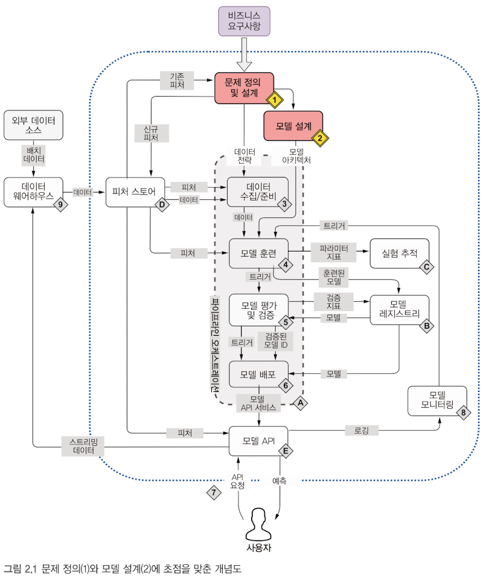
이미지 해설 — 이 그림은 머신러닝 시스템 전체를 한 장에 그린 "지도"입니다. 맨 위 비즈니스 요구사항(보라색)에서 출발해 빨간 두 상자인 ① 문제 정의 및 설계와 ② 모델 설계로 들어갑니다. 이 두 상자가 지금 읽는 부분의 주인공입니다. 지도를 읽는 순서는 이렇습니다.
- ①에서 나온 "데이터 전략"은 ③ 데이터 수집/준비로, ②에서 나온 "모델 아키텍처"는 ④ 모델 훈련으로 갑니다.
- 점선으로 둘러싼 가운데 길쭉한 영역 A 파이프라인 오케스트레이션은 ③ 데이터 수집/준비 → ④ 모델 훈련 → ⑤ 모델 평가 및 검증 → ⑥ 모델 배포를 순서대로 자동 연결하는 구간입니다.
- 훈련 결과는 두 곳에 남습니다. 파라미터·지표는 C 실험 추적, 훈련된 모델은 B 모델 레지스트리(모델 보관소)로 갑니다. ⑤ 평가는 레지스트리에서 모델을 꺼내 검증하고 검증 지표를 되돌려 보냅니다.
- ⑥ 배포된 모델은 E 모델 API가 되어 ⑦ 사용자의 API 요청에 예측을 돌려줍니다.
- 모델 API는 로그를 남기고 ⑧ 모델 모니터링이 이를 보다가 "트리거"를 보내 다시 모델 훈련을 시작하게 합니다. 이것이 바로 되돌아오는 폐쇄 루프입니다.
- 왼쪽에는 외부 데이터 소스 → ⑨ 데이터 웨어하우스 → D 피처 스토어가 있어 훈련과 서비스에 쓸 데이터·피처(모델 입력용 가공 변수)를 공급합니다. 사용자 쪽에서 오는 스트리밍 데이터도 웨어하우스로 들어갑니다.
- 그림 하단 캡션: "그림 2.1 문제 정의(1)와 모델 설계(2)에 초점을 맞춘 개념도".
숫자(①~⑨)와 알파벳(A~E)은 그림 안의 표식이며, 이 절은 ①②만 다룹니다. 나머지는 이후 절에서 하나씩 나옵니다.
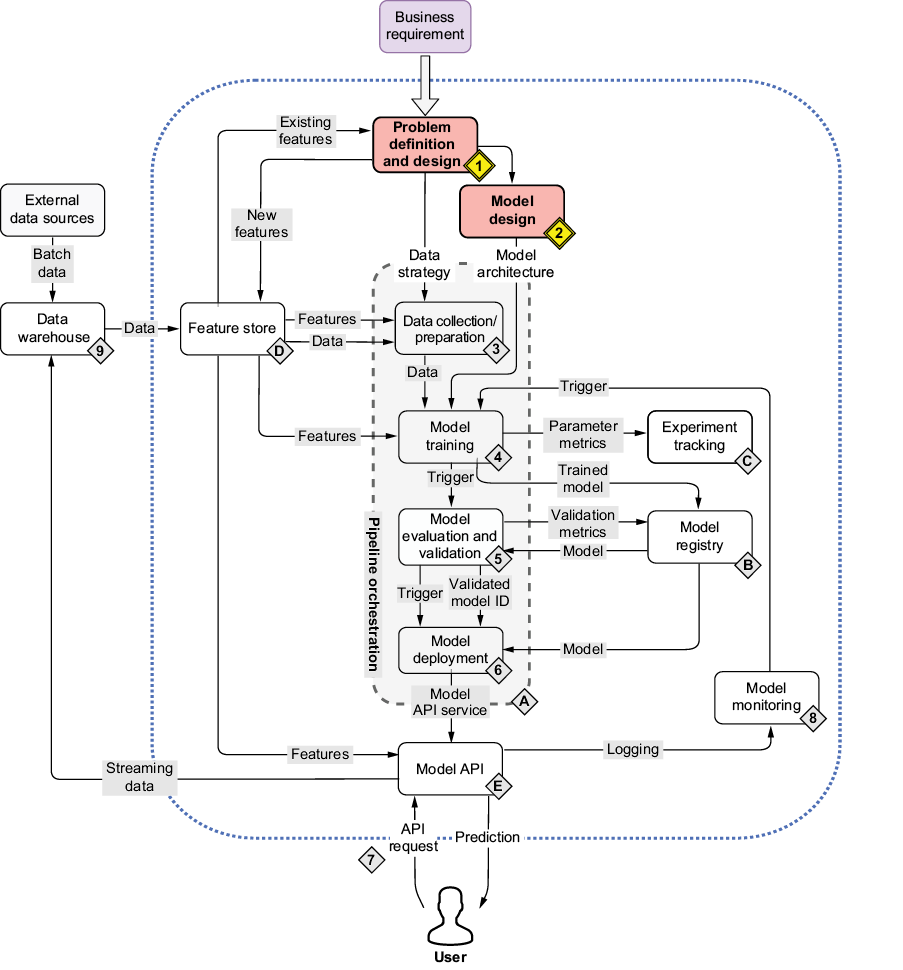
이미지 해설 — 바로 위 그림의 영어 원본입니다. 라벨만 영어일 뿐 구조는 같습니다(Business requirement → Problem definition and design → Model design, Data warehouse, Feature store, Experiment tracking, Model registry, Pipeline orchestration, Model monitoring, Model API, User 등). 영어 용어를 함께 익혀 두면 검색할 때 유용합니다. 일부 화살표가 어두운 배경에서는 흐려 보일 수 있습니다.
루프로 보는 머신러닝 · 모델과 코드는 별개
- 머신러닝 엔지니어링을 완전히 익히는 핵심 중 하나는, 머신러닝 시스템이 시간에 따라 어떻게 진화하는지에 대한 명확한 사고 체계를 갖추는 것입니다. 실제 현장의 머신러닝을 논할 때는, 폐쇄 루프의 관점에서 생각하는 것이 가장 효과적입니다. 모델, 데이터, 하이퍼파라미터는 일시적인 존재로, 전체적으로는 시간이 흐르며 진화하는 루프의 일부로 이해하는 것이 바람직합니다. 이러한 사고 체계는 잠재적인 문제를 미리 예측하고 시스템 설계에 관한 합리적인 의사결정을 내리는 데 도움을 줍니다.
- 머신러닝 프로젝트를 하나의 루프로 바라보면, 모델이 변경될 때를 대비한 프로세스를 구축하는 방향으로 자연스럽게 사고하게 됩니다. 실제 현장에서 모델은 매우 빈번하게 변경되므로, 견고한 워크플로를 갖추면 개발 속도를 저해하지 않으면서 여러 팀의 프로세스에 일관된 표준화를 적용할 수 있습니다. 반복 iteration 은 머신러닝 개발의 핵심 요소이며, 이는 엔지니어의 기본 가정 변화, 모델 개선을 위한 방법 및 기회의 변화, 또는 모델을 둘러싼 환경의 변화 등 여러 요인에서 비롯될 수 있습니다. 예를 들어, 중고차 판매점의 사용자가 자신의 차량에 적합한 최적 가격을 찾을 수 있도록 차량 가격을 예측하는 모델을 개발하고 배포 deployment 한다고 가정해 보겠습니다. 시간이 지남에 따라 모델은 변화하는 고객 요구와 시장 상황에 맞추어 진화할 것입니다. 상업용 및 산업용 차량을 위한 추가 버전의 모델을 개발하게 될 수도 있습니다. 모델을 빌드하고 테스트하며 배포하는 견고한 워크플로를 구축해 두면, 배포 자체보다 모델이 제공하는 핵심 비즈니스 가치에 집중하면서 새로운 기능을 모두 출시할 수 있습니다.
- 모델(가중치 + 네트워크)과 코드(모델 아키텍처 및 지원 코드)는 서로 별개의 개체임을 명심하십시오. 따라서 지속 가능한 머신러닝 워크플로를 구축하려면 데이터 리니지 lineage 유지와 추적이 매우 중요합니다.
본문의 단순 오탈자(예: "이런한→이러한", "논 할→논할")는 바로잡아 옮겼습니다.
풀어 읽기
① 왜 "루프"로 보라고 할까? 모델·데이터·하이퍼파라미터(학습 전에 사람이 정하는 설정값, 예: 학습률)는 한 번 만들고 끝나는 "완성품"이 아니라, 계속 바뀌는 "임시 상태"입니다. 바뀔 것을 처음부터 알면, 바뀔 때마다 빌드 → 테스트 → 배포가 자동으로 돌아가는 길(워크플로)을 미리 깔아 두게 됩니다.
② 중고차 가격 예시가 보여 주는 변화의 세 가지 원인
| 본문이 든 반복의 원인 | 이 예시에서는 |
|---|---|
| 엔지니어의 가정이 바뀜 | "연식과 주행거리만 보면 된다" → "사고 이력도 봐야 한다" |
| 모델을 개선할 방법·기회가 생김 | 더 좋은 모델 구조나 새 데이터가 생김 |
| 모델을 둘러싼 환경이 바뀜 | 시장 가격·고객 요구가 변함, 상업용·산업용 차량 버전까지 확장 |
책은 "상업용·산업용 차량 버전이 추가될 수 있다"고 말합니다. 단, 처음 데이터를 모을 때의 범위(승용차)와 확장 후 범위를 헷갈리면 안 됩니다. 범위가 넓어지면 데이터 수집 기준(예: 트럭 제외)도 다시 검토해야 합니다.
③ "견고한 워크플로"의 이점 — 개발 속도를 늦추지 않으면서 여러 팀이 같은 절차(표준)를 쓰게 되고, 엔지니어는 "배포하기"라는 잡무가 아니라 모델이 내는 비즈니스 가치에 집중할 수 있습니다.
④ 모델 ≠ 코드 → 그래서 리니지 — 이 문장이 이 절의 핵심입니다. 모델 파일과 코드는 따로 바뀌므로, 어느 것이 어느 것과 짝인지를 기록(=리니지)하지 않으면 지속 가능한 운영이 어렵다는 이야기입니다. 아래 그림과 토글에서 자세히 풀어 줍니다.
flowchart TD A["모델과 데이터와 설정은 계속 바뀐다"] --> B["바뀔 것을 전제로 한 워크플로를 먼저 만든다"] B --> C["빌드 테스트 배포가 자동으로 반복된다"] C --> D["새 버전을 빠르게 내도 표준이 유지된다"] A --> E["모델과 코드는 따로 바뀐다"] E --> F["어떤 모델이 어떤 코드 데이터와 짝인지 기록한다 - 리니지"]
모델·코드·리니지 그림 3장 (그림 카드)
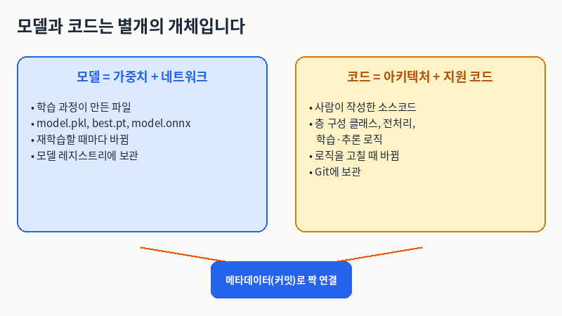
이미지 해설 — 본문에는 이 그림의 출처로 블로그 링크 https://ssungz.tistory.com/109가 달려 있습니다. 그림 제목은 "모델과 코드는 별개의 개체입니다". 왼쪽 파란 상자는 모델 = 가중치 + 네트워크(학습 과정이 만든 파일, model.pkl·best.pt·model.onnx, 재학습할 때마다 바뀜, 모델 레지스트리에 보관), 오른쪽 노란 상자는 코드 = 아키텍처 + 지원 코드(사람이 작성한 소스코드, 층 구성 클래스·전처리·학습·추론 로직, 로직을 고칠 때 바뀜, Git에 보관)입니다. 두 상자를 아래에서 "메타데이터(커밋)로 짝 연결" 하는 파란 상자가 이어 줍니다. 즉 "둘은 따로 보관·따로 버전 관리하되, 어떤 커밋과 짝인지를 메타데이터로 이어 둔다"는 그림입니다.
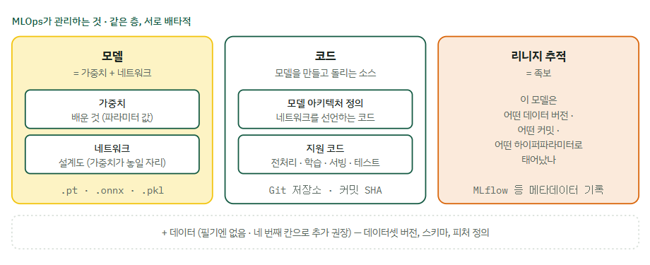
이미지 해설 — 출처 링크는 https://velog.io/@chaujin00/TIL-261018. 제목은 "MLOps가 관리하는 것 · 같은 층, 서로 배타적". 세 칸이 나란히 있습니다: ① 모델(= 가중치 + 네트워크; 배운 것·파라미터 값, 설계도·가중치가 놓일 자리; .pt · .onnx · .pkl), ② 코드(모델 아키텍처 정의·지원 코드[전처리·학습·서빙·테스트]; Git 저장소·커밋 SHA), ③ 리니지 추적 = 족보("이 모델은 어떤 데이터 버전·어떤 커밋·어떤 하이퍼파라미터로 태어났나"; MLflow 등 메타데이터 기록). 맨 아래 점선 칸에는 "+ 데이터(필수엔 없음 · 네 번째 칸으로 추가 권장) — 데이터셋 버전, 스키마, 피처 정의"라고 적혀 있습니다.
⚠ 바로잡기(보완): 그림은 리니지를 모델·코드와 "나란한 세 번째 칸"으로 그렸지만, 리니지는 모델·코드와 별개로 존재하는 또 하나의 파일이라기보다 모델·코드·데이터를 서로 연결하는 관계 기록입니다. "족보"라는 비유로 이해하면 됩니다. 다음 토글에서 풀어 줍니다.
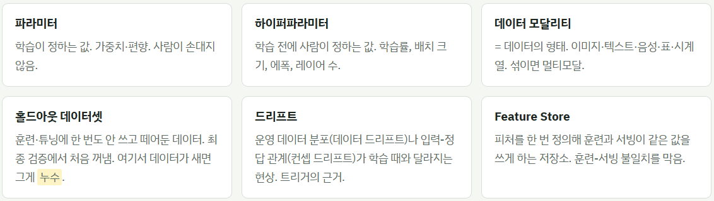
이미지 해설 — 앞 두 그림 아래에 이어 붙은 용어 카드 6장입니다(저장 포맷 비교 그림이 아닙니다). 카드 내용:
| 카드 | 그림 속 설명 | 풀이 |
|---|---|---|
| 파라미터 | 학습이 정하는 값. 가중치·편향. 사람이 손대지 않음 | 모델이 공부해서 스스로 채운 숫자 |
| 하이퍼파라미터 | 학습 전에 사람이 정하는 값. 학습률·배치 크기·에폭·레이어 수 | 시험공부 계획(하루 몇 시간, 몇 회독)을 짜는 것 |
| 데이터 모달리티 | 데이터의 형태. 이미지·텍스트·음성·표·시계열. 섞이면 멀티모달 | 자료의 종류(사진·글·소리·표). 사진+글을 함께 쓰면 멀티모달 |
| 홀드아웃 데이터셋 | 훈련·튜닝에 한 번도 안 쓰고 떼어 둔 데이터. 최종 검증에서 처음 꺼냄. 여기서 데이터가 새면 그게 누수 | 수능 전까지 풀어 보지 않고 봉해 둔 실전 문제 |
| 드리프트 | 운영 데이터 분포(데이터 드리프트)나 입력-정답 관계(컨셉 드리프트)가 학습 때와 달라지는 현상. 트리거의 근거 | 유행이 바뀌어 옛날 취향으로 만든 메뉴가 안 팔리게 되는 것 |
| Feature Store | 피처를 한 번 정의해 훈련과 서빙이 같은 값을 쓰게 하는 저장소. 훈련-서빙 불일치를 막음 | 공용 재료 창고: 연습 주방과 영업 주방이 같은 재료 규격을 씀 |
⚠ 바로잡기: 홀드아웃은 "한 번도 안 쓰고"가 이상적인 원칙이지만, 홀드아웃 결과를 보고 모델을 계속 고쳐 가면 사실상 그 데이터로 튜닝한 셈이 되어 의미가 사라집니다. Feature Store도 "훈련-서빙 불일치를 막는다"는 단정보다는 "같은 피처 정의를 공유해 불일치 가능성을 줄인다"로 읽는 것이 정확하며, 시간 순서에서 생기는 정보 누수까지 자동으로 해결해 주지는 않습니다.
▶ 모델과 코드 설명
▶ 모델과 코드 설명
앞에서 "모델과 코드는 서로 별개의 개체"라고 했습니다. 이 토글은 그 말이 무슨 뜻인지 풀어 줍니다. 아래는 본문 내용을 그대로 옮긴 것이고(코드·표 포함), 이어서 초보자용 풀이와 정정을 붙였습니다.
가중치
1장에서 본 것처럼 학습으로 얻는 숫자들입니다. 예를 들어 Linear(784 → 128) 층에는 784×128개의 가중치와 128개의 편향이 있습니다.
학습이 끝난 뒤 이 숫자들이 바로 모델이 "배운 것"입니다. 숫자 덩어리일 뿐이어서, 어떤 구조에 꽂아야 의미가 생기는지 모르면 쓸 수 없습니다.
네트워크
가중치가 어느 연산에 어떤 순서로 쓰이는지 나타내는 구조입니다.
"입력 → 층1 → ReLU → 층2 → 출력"처럼 층의 종류, 크기, 연결 순서가 이에 해당합니다. 가중치가 벽돌이면 네트워크는 설계도입니다.
가중치와 네트워크를 합친 것이 모델 파일입니다. 어떤 형식으로 저장하느냐에 따라 구조가 파일에 들어가는지가 달라집니다.
| 저장 방식 | 담기는 것 | 로드할 때 필요한 것 |
|---|---|---|
| 가중치만 (state_dict) | 숫자(가중치)만 | 아키텍처 코드가 반드시 필요 |
| 가중치 + 네트워크 (TorchScript, ONNX, SavedModel) | 숫자 + 연산 구조 | 코드 없이도 로드·실행 가능 |
| pickle 전체 객체 | 객체 전체(클래스 경로 포함) | 원래 클래스 코드와 같은 경로·버전이 필요 |
코드 : 사람이 작성한 소스코드이고, 두 가지로 나뉩니다.
- 모델 아키텍처 코드: 네트워크 구조를 정의하는 코드입니다(PyTorch의 nn.Module 클래스 등).
- 지원 코드: 전처리(이미지 크기 조정, 텍스트 토큰화), 학습 루프, 추론 시 후처리, 평가 코드입니다.
import torch.nn as nn
class SmallNet(nn.Module): # ← 코드: 구조를 정의한다
def __init__(self):
super().__init__()
self.fc1 = nn.Linear(784, 128)
self.fc2 = nn.Linear(128, 10)
def forward(self, x):
return self.fc2(nn.functional.relu(self.fc1(x)))
# 학습 후: 가중치(숫자)만 파일로 저장
torch.save(model.state_dict(), "weights.pt")
# 사용 시: 코드로 구조를 만들고, 거기에 가중치를 채워 넣는다
model = SmallNet() # ← 코드가 필요
model.load_state_dict(torch.load("weights.pt"))
모델과 코드 비교
| 구분 | 모델(가중치 + 네트워크) | 코드(아키텍처 정의 + 지원 코드) |
|---|---|---|
| 정체 | 학습 결과로 만들어진 파일 | 사람이 작성한 소스코드 |
| 담긴 것 | 학습된 숫자들 + 연산 구조 정보 | 층 구성 클래스, 전처리, 학습·추론 로직 |
| 만드는 주체 | 학습 과정이 생성 | 개발자가 작성 |
| 저장 형태 | model.pkl, best.pt, model.onnx | .py 파일, git 저장소 |
| 버전 관리 | 모델 레지스트리, 아티팩트 저장소 | git |
| 변경 계기 | 재학습할 때마다 | 로직·구조를 고칠 때 |
왜 별개로 다루라고 하나
- 버전이 따로 움직입니다. 코드는 그대로이고 새 데이터로 재학습해 모델만 바뀌기도 하고, 반대로 모델 파일은 그대로인데 전처리 코드만 고치기도 합니다.
- 짝이 맞아야 동작합니다. 구조를 바꾼 코드(층 크기 변경)로 예전 가중치를 불러오면 크기가 맞지 않아 에러가 나거나, 더 나쁘게는 조용히 엉뚱한 결과가 나옵니다. 그래서 모델에는 "어느 코드 버전(커밋)과 짝인지"를 메타데이터로 기록해 둡니다(1장 4번 질문의 메타데이터).
- 보관 장소가 다릅니다. 코드는 git에 두고, 큰 바이너리인 모델은 모델 레지스트리나 객체 스토리지에 둡니다. 이 책의 MLflow와 모델 서빙(BentoML) 흐름이 이 구분을 전제로 합니다.
- pickle 주의: pickle 파일은 불러올 때 코드를 실행할 수 있어서, 출처를 모르는 모델 파일을 pickle.load하면 보안 위험이 있습니다.
⚠ 바로잡기: 모델의 구조(층 크기)를 바꾼 코드에 예전 가중치를 그대로 불러오면, PyTorch의 일반적인 불러오기(load_state_dict)는 크기가 맞지 않는다는 오류를 냅니다. "조용히 엉뚱한 결과가 나온다"는 것은 이 경우가 아니라, 크기는 그대로인데 입력 전처리나 입력의 의미가 달라진 별개의 경우에 해당합니다. 두 상황을 섞지 말고, 오류로 막히는 경우와 오류 없이 결과만 틀어지는 경우를 따로 기억하세요. 그래서 모델에는 "어느 코드·전처리 버전과 짝인지"를 기록해 둡니다.
위 본문 코드에는 두 가지가 생략되어 있습니다. import torch가 없고, 저장하려는 model을 어디서 만드는지(그리고 학습하는지)가 없습니다. 설명용 조각이기 때문입니다.
풀어 읽기
숫자 예시 — nn.Linear(784, 128) 층은 입력 784개를 출력 128개로 바꿉니다. 이때 학습으로 정해지는 숫자는 가중치 784 × 128 = 100,352개와 편향 128개입니다. 이 숫자 약 10만 개가 "모델이 배운 것"의 일부입니다. (두 번째 층 Linear(128, 10)은 128×10 = 1,280개와 편향 10개입니다.)
코드가 하는 일 3단계
SmallNet클래스가 구조(784 → 128 → ReLU → 10)를 정의합니다. (코드)- 학습이 끝나면
model.state_dict()로 가중치만weights.pt에 저장합니다. (모델 파일) - 사용할 때는 코드로 빈 구조
SmallNet()을 먼저 만들고, 거기에load_state_dict로 가중치를 채워 넣습니다.
즉 "가중치 파일만 있으면 안 되고, 구조를 만드는 코드가 반드시 짝으로 있어야 한다"는 것이 state_dict 방식의 핵심입니다.
flowchart LR A["코드 - SmallNet 클래스 정의"] --> B["빈 모델 만들기"] C["weights.pt - 학습된 숫자"] --> D["load_state_dict로 채우기"] B --> D D --> E["사용 가능한 모델"]
⚠ 바로잡기: 본문 표는state_dict를 "숫자(가중치)만" 담는다고 적었지만, 실제state_dict는 파라미터뿐 아니라 BatchNorm의running_mean같은 등록된 버퍼(buffer)도 담는 사전(딕셔너리)입니다(PyTorch 공식 튜토리얼). 또한 TorchScript·ONNX·SavedModel을 "코드 없이도 로드·실행 가능"이라 한 것도 조건이 붙습니다. 해당 형식을 읽을 수 있는 런타임, 연산 구현, 모델 밖에서 하는 전처리 등이 여전히 필요하므로 "아무 준비 없이 실행된다"는 뜻은 아닙니다. 형식의 의미는 파일 확장자(.pt,.pkl)만 보고 단정하지 않습니다.
[보강] 위 본문 코드를 실제로 실행할 수 있게 보완한 예시입니다. 학습은 하지 않으므로 저장되는 값은 초기(무작위) 가중치입니다. 실제 프로젝트에서는 학습을 마친 모델에 같은 저장 절차를 적용합니다. 실행하면 오류 없이 끝나며 별도 출력은 없고, 현재 폴더에 weights.pt가 생깁니다.
import torch
from torch import nn
class SmallNet(nn.Module):
def __init__(self):
super().__init__()
self.fc1 = nn.Linear(784, 128)
self.fc2 = nn.Linear(128, 10)
def forward(self, inputs):
hidden = nn.functional.relu(self.fc1(inputs))
return self.fc2(hidden)
model = SmallNet() # 실제로는 여기서 학습을 마친 모델
torch.save(model.state_dict(), "weights.pt")
loaded_model = SmallNet() # 같은 구조를 코드로 먼저 만든다
loaded_model.load_state_dict(
torch.load("weights.pt", map_location="cpu", weights_only=True)
)
loaded_model.eval() # 추론(예측) 모드로 전환
🔧 본인 환경에 맞게 교체:"weights.pt"는 저장할 파일 경로·이름입니다(예:models/best.pt).map_location="cpu"는 GPU 없는 컴퓨터에서 불러올 때 쓰며, GPU에서 쓸 때는"cuda"등으로 바꿉니다.weights_only=True는 가중치 숫자만 안전하게 읽겠다는 옵션으로, 출처를 모르는 파일을 불러올 때 특히 유지하세요.
저장 방식 3가지 보충 정리
| 본문의 저장 방식 | 실제로 보관하는 것 | 실행 시 필요한 것 |
|---|---|---|
state_dict |
파라미터와 등록 버퍼 등 상태 | 맞는 구조를 만드는 코드와 프레임워크 |
| TorchScript / ONNX / SavedModel | 해당 형식의 연산 그래프와 상태 등 | 그 형식을 지원하는 런타임, 연산 구현, 필요 시 외부 전처리 |
| 전체 객체 pickle | 객체의 직렬화 결과와 클래스 참조 등 | 같은 클래스 정의·호환 환경, 그리고 신뢰할 수 있는 파일 |
"왜 별개로 다루라고 하나" 한 줄씩 풀기
- 버전이 따로 움직인다 → 새 데이터로 재학습하면 모델만 바뀌고(코드 그대로), 전처리만 고치면 코드만 바뀝니다(모델 파일 그대로).
- 짝이 맞아야 동작한다 → 층 크기를 바꾼 코드(예: 128 → 256)에 옛날 가중치(128용)를 넣으면 크기가 달라 오류가 나거나, 더 나쁘게는 조용히 엉뚱한 답을 냅니다. 그래서 모델에 "어느 커밋과 짝인지"를 메타데이터로 기록합니다.
- 보관 장소가 다르다 → 코드는 가볍고 텍스트라서 Git, 모델은 큰 바이너리라서 모델 레지스트리나 객체 스토리지(S3 같은 파일 보관소). 이 책의 MLflow, BentoML 흐름이 이 구분을 전제로 합니다.
- pickle 주의 → pickle은 불러오는 순간 안에 든 코드가 실행될 수 있어서, 출처 모르는 모델 파일을
pickle.load하면 컴퓨터가 해킹당할 수 있습니다. 택배 상자를 열자마자 안의 기계가 작동하는 것과 비슷합니다.
본문 마지막의 "1장 4번 질문의 메타데이터"는 1장에서 다룬 메타데이터 기록 이야기를 가리킵니다.
▶ 리니지 설명 : 모델의 족보!
▶ 리니지 설명 : 모델의 족보!
본문 토글을 그대로 옮기고, 이어서 풀이를 붙였습니다.
리니지(lineage)란
리니지는 "이 모델(또는 결과)이 무엇으로부터 어떤 과정을 거쳐 만들어졌는가"를 잇는 계보입니다.
원래 "혈통, 족보"라는 뜻이고, 모델의 족보를 뜻합니다.
사람의 족보가 부모 → 자식으로 이어지듯, ML에서는 이렇게 이어집니다.
원천 데이터 → 전처리 → 피처 → 학습 실행(코드 + 하이퍼파라미터) → 모델 v7 → 운영 배포
이 사슬의 각 고리를 기록한 것이 리니지입니다.
| 연결 고리 | 기록할 내용 | 예시 |
|---|---|---|
| 데이터 | 원천, 버전, 전처리 이력 | 데이터 스냅샷 2026-10-01, 결측치 제거 스크립트 v3 |
| 피처 | 어떤 피처 정의로 만들었나 | Feast 피처 뷰 버전 |
| 코드 | 학습·전처리 코드 버전 | git 커밋 해시 |
| 설정 | 하이퍼파라미터, 환경 | 학습률 0.01, 라이브러리 버전 |
| 모델 | 결과물과 평가 지표 | model v7, F1 0.91 |
| 배포 | 어디에 어떤 버전이 떠 있나 | 운영 서비스 = model v7 |
앞서 본 재현성(1장)이 "같은 조건이면 같은 결과가 나오는 성질"이라면, 리니지는 그 조건이 무엇이었는지 연결해서 알 수 있게 해 주는 정보입니다.
모델 파일과 코드를 별개로 다루는 이유(2장 Q1)와도 이어집니다. 둘이 어느 버전끼리 짝인지를 리니지가 알려 줍니다.
리니지 유지와 추적
| 구분 | 리니지 유지 | 리니지 추적 |
|---|---|---|
| 하는 일 | 각 단계에서 연결 정보를 기록·보존 | 기록을 따라 연결을 거슬러 올라가거나 내려가며 조회 |
| 시점 | 훈련·배포하는 동안(쓰기) | 문제가 생기거나 감사할 때(읽기) |
| 방법 | 실험 추적 도구, 모델 레지스트리, 데이터·코드 버전 관리 | 레지스트리·추적 UI에서 모델 → 실행 → 데이터 조회 |
| 실패하면 | 나중에 추적할 단서가 없음 | 원인 파악·재현 불가 |
- 유지는 일기를 쓰는 일입니다. 훈련할 때마다 데이터 버전, 코드 커밋, 설정, 결과 모델을 빠뜨리지 않고 연결해서 남깁니다. 사람이 손으로 하면 빠뜨리기 쉬워서 도구와 자동화에 맡깁니다.
- 추적은 그 일기를 읽는 일입니다. 둘은 방향이 두 가지입니다.
- 거슬러 올라가기: 운영 모델의 성능이 갑자기 떨어졌을 때 "이 모델은 어떤 데이터와 코드로 만들었지?"를 찾습니다.
- 내려가기: 어떤 학습 데이터에 오류가 있었다고 판명됐을 때 "이 데이터로 만든 모델은 어느 것들이고 지금 어디에 배포돼 있지?"를 찾습니다.
유지를 안 하면 추적할 수 없으므로 둘은 한 세트입니다.
왜 "지속 가능한" 워크플로에 필수인가
- 디버깅: 문제의 원인이 데이터, 코드, 설정 중 어디인지 좁힐 수 있습니다.
- 재현과 롤백: 지난달 좋았던 모델을 정확히 다시 만들거나, 문제가 생기면 이전 버전으로 되돌릴 수 있습니다.
- 감사와 규정 준수: 금융 같은 분야에서는 "이 판단을 한 모델이 어떤 데이터로 학습됐는지" 설명해야 할 때가 있습니다.
- 팀 인수인계: 담당자가 바뀌어도 모델의 출처를 알 수 있습니다.
리니지를 기록하지 않으면 모델이 "아무도 어떻게 만들었는지 모르는 블랙박스 파일"이 되어, 문제가 생겨도 고칠 수 없고 개선도 못 하는 상태가 됩니다.
이 책에서는 MLflow의 실험 추적과 모델 레지스트리가 그 역할을 하며, 4~6장 실습에서 직접 확인합니다.
풀어 읽기
리니지 사슬을 그림으로
flowchart LR A["원천 데이터"] --> B["전처리"] B --> C["피처"] C --> D["학습 실행 - 코드와 하이퍼파라미터"] D --> E["모델 v7"] E --> F["운영 배포"] F -. "거슬러 올라가기 - 원인 찾기" .-> A A -. "내려가기 - 영향 범위 찾기" .-> F
두 가지 추적 방향 — 숫자 예시
- 거슬러 올라가기: 운영 중인 모델 v7의 F1이 0.91에서 0.70으로 급락했다 → 레지스트리에서 v7을 열어 "스냅샷 2026-10-01 데이터 + 커밋 abc123 + 학습률 0.01"을 확인 → 어디가 바뀌었는지 비교. (예시 값은 본문 표의 가상 설명용 값입니다.)
- 내려가기: 어떤 날짜의 학습 데이터에 오류가 있었다고 판명됐다 → 그 데이터로 만든 모델이 v5·v7 두 개이고, v7만 운영에 떠 있다는 것을 알아낸다 → 영향받는 서비스만 골라 조치.
표의 "연결 고리" 풀이: 피처 행의 Feast는 피처 스토어(피처를 한 번 정의해 학습·서빙에서 공유하는 저장소) 도구 이름이고, 설정 행의 하이퍼파라미터는 학습률처럼 사람이 정하는 값입니다. 모델 행의 F1은 정밀도와 재현율을 합친 성능 점수(0~1)입니다. 본문 표의 "model v7, F1 0.91" 등은 설명을 위한 가상 값이지 실제 측정값이 아닙니다.
재현성과 리니지의 차이 — 재현성(1장)은 "같은 조건이면 같은 결과가 나오는 성질"이고, 리니지는 "그 조건이 무엇이었는지 알려 주는 기록"입니다. 조건을 모르면 재현 자체가 불가능하므로 리니지가 재현성의 바탕이 됩니다.
⚠ 바로잡기(보완): 본문의 한 줄짜리 사슬(원천 데이터 → … → 운영 배포)은 이해하기 쉽게 단순화한 것입니다. 실제 리니지는 여러 데이터가 합쳐지고(합류) 한 모델이 여러 환경에 배포되는(분기) 그래프일 수 있습니다. 또 리니지 기록만 있고 원본 데이터나 모델 파일(아티팩트)이 삭제됐다면 재현할 수 없습니다. MLflow의 실험 추적·레지스트리가 데이터 버전 관리 전체를 자동으로 대신해 주는 것도 아니므로, 데이터 버전은 별도 방법으로 관리해야 합니다.
본문 토글은 "4~6장 실습에서 직접 확인합니다"라고 마무리합니다. 또 "2장 Q1"은 앞 토글(모델과 코드를 별개로 다루는 이유)을 가리키는 번호 참조로 보입니다(번호 대응은 추정).
머신러닝 루프의 시작 — 문제 정의와 합의 (그림 2.2)
- 머신러닝 루프는 문제를 정의하고 예측에 사용할 데이터를 수집하는 것에서 시작합니다(그림 2.2). 머신러닝 프로젝트에 착수하기 전에 문제 정의가 명확히 이루어져야 하며, 이해관계자들과의 합의도 선행되어야 합니다. 예를 들어 “고객 이탈률을 예측하라”와 같은 문구만으로는 적절히 모델링하고 평가 기준을 도출하기에 충분하지 않습니다.
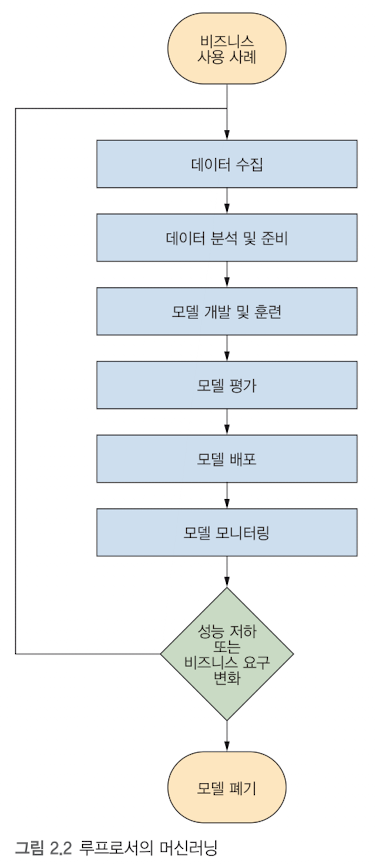
이미지 해설 (한국어판 그림 2.2 "루프로서의 머신러닝") — 위에서 아래로 흐르는 순서도입니다. 비즈니스 사용 사례(주황 타원)에서 시작해 데이터 수집 → 데이터 분석 및 준비 → 모델 개발 및 훈련 → 모델 평가 → 모델 배포 → 모델 모니터링(파란 상자)을 차례로 거칩니다. 마지막의 초록 마름모 "성능 저하 또는 비즈니스 요구 변화" 에서 갈림길이 생깁니다. 그렇다고 판단하면 왼쪽 선을 따라 맨 위(데이터 수집)로 되돌아가 다시 한 바퀴 돌고, 더 이상 가치가 없으면 아래쪽 모델 폐기(주황 타원)로 끝납니다. 즉 배포가 끝이 아니라, 모니터링 결과에 따라 "다시 돌린다 / 폐기한다"를 결정하는 것이 이 그림의 핵심입니다.
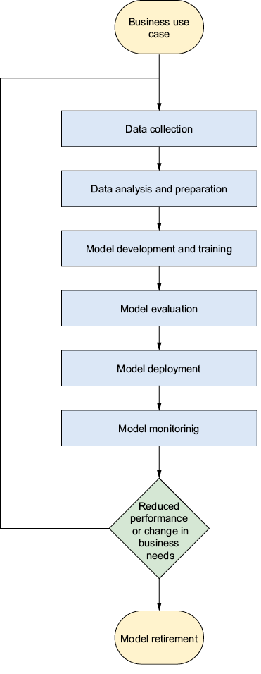
이미지 해설 — 위 그림의 영어 원본입니다(Business use case → Data collection → Data analysis and preparation → Model development and training → Model evaluation → Model deployment → Model monitoring → "Reduced performance or change in business needs" → Model retirement). 구조는 한국어판과 같습니다. 그림 속 영어 철자 "monitorinig"는 원 그림의 오타입니다.
풀어 읽기
"고객 이탈률을 예측하라"가 왜 부족한가 — 아래 질문에 답이 없으면 모델을 만들 수도, 잘 만들었는지 평가할 수도 없습니다.
| 합의해야 할 것 | 질문 예시 |
|---|---|
| 대상 | 어떤 고객? 신규? 가입 1년 이상? |
| 이탈의 정의 | 구독 해지? 90일간 접속 없음? |
| 예측 시점 | 이탈 30일 전에 알아야 하나, 7일 전이면 되나? |
| 조치 | 예측 결과로 누가 무엇을 하나(할인 쿠폰? 상담 전화?) |
| 비용·성공 조건 | 쿠폰 비용 대비 붙잡은 매출이 얼마면 성공인가? |
위 표는 풀이를 돕기 위한 예시 질문이며, 책은 "이 문구만으로는 부족하다"까지만 말합니다.
flowchart TD
A["비즈니스 사용 사례"] --> B["문제 정의와 이해관계자 합의"]
B --> C["데이터 수집"]
C --> D["분석 준비 훈련 평가 배포"]
D --> E["모니터링"]
E --> F{"성능 저하 또는 요구 변화"}
F -- "예" --> B
F -- "더 이상 가치 없음" --> G["모델 폐기"]데이터셋 나누기 (훈련·검증·테스트)
- 데이터셋 나누기
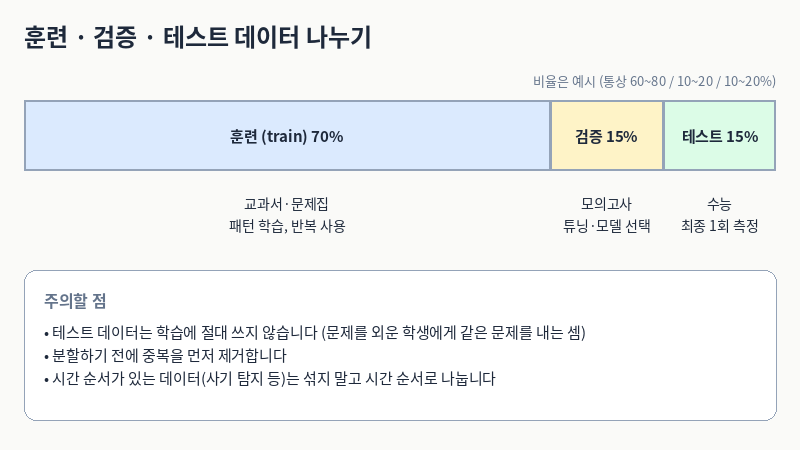
이미지 해설 — 제목은 "훈련 · 검증 · 테스트 데이터 나누기". 전체 데이터를 한 줄 막대로 놓고 훈련(train) 70% / 검증 15% / 테스트 15% 로 나눈 예입니다(그림 우상단 문구: "비율은 예시, 통상 60~80 / 10~20 / 10~20%"). 각 칸 아래의 비유가 핵심입니다.
| 칸 | 그림 속 비유 | 하는 일 |
|---|---|---|
| 훈련 70% | 교과서·문제집, 패턴 학습, 반복 사용 | 모델이 공부하는 자료 |
| 검증 15% | 모의고사, 튜닝·모델 선택 | 여러 후보 중 어느 모델·설정이 좋은지 고르는 용도 |
| 테스트 15% | 수능, 최종 1회 측정 | 마지막에 딱 한 번 실력을 재는 용도 |
그림 아래 "주의할 점" 상자는 세 가지를 경고합니다.
- 테스트 데이터는 학습에 절대 쓰지 않습니다(문제를 외운 학생에게 같은 문제를 내는 셈).
- 분할하기 전에 중복을 먼저 제거합니다.
- 시간 순서가 있는 데이터(사기 탐지 등)는 섞지 말고 시간 순서로 나눕니다.
⚠ 바로잡기(보완): 70/15/15는 예시일 뿐 고정 표준이 아닙니다(그림에도 "통상 60~80 / 10~20 / 10~20%"로 범위가 적혀 있습니다). 비율보다 중요한 것은 무엇을 기준으로 나누느냐입니다. 같은 사용자의 기록이 훈련과 테스트에 섞이거나, 미래의 정보가 과거 예측에 쓰이지 않도록 시간·사용자·문서 단위로 나눕니다. 또 테스트 점수를 보고 모델을 계속 고치면 테스트도 사실상 훈련에 쓴 셈이 되므로, 최종 테스트는 튜닝에 계속 쓰지 않습니다.
반드시 검토해야 할 핵심 질문 — 이해관계자 그룹별
- 다음은 반드시 검토해야 할 핵심 질문들입니다. 각 목록은 이해관계자 그룹별로 정리되어 있습니다.
- 비즈니스 및 제품 이해관계자
- 머신러닝 솔루션이 필요한 문제나 과제는 무엇입니까? 왜 머신러닝이 필요합니까?
- 비즈니스 목표와 성공을 측정할 핵심 지표는 무엇입니까?
- 개발에 필요한 노력 대비 창출되는 비즈니스 가치는 어느 정도입니까?
- 프로젝트 일정은 어떻게 됩니까?
- 로드맵에서 모델이 가장 큰 가치를 제공하는 지점은 어디입니까?
- 잘못된 예측이 비즈니스에 미치는 영향은 무엇입니까? 허용 가능한 오차 범위는 어느 정도입니까?
- 기술 팀(머신러닝 엔지니어 및 데이터 과학자)
- 해당 문제를 머신러닝으로 해결할 수 있습니까? 머신러닝이 최적의 해결책입니까? 관련 연구나 문헌은 무엇이 있습니까?
- 데이터는 어디에, 어떤 방식으로 저장됩니까? 어떤 데이터 파이프라인을 구축해야 합니까?
- 모델을 어떻게 평가할 것입니까? 어떤 지표를 사용해야 합니까?
- 모델 훈련과 서빙에 필요한 컴퓨팅 리소스는 무엇입니까?
- 향후 업그레이드와 유지보수를 가능하게 하는 배포 전략은 무엇입니까?
- 어떤 지표가 모델 재훈련을 촉발해야 합니까?
- 법무 및 컴플라이언스 이해관계자
- 윤리적/개인정보 보호 측면에서 해결해야 할 문제가 있습니까?
- 데이터셋에 포함된 민감한 정보는 어떻게 처리해야 합니까?
- 충족해야 할 데이터 거버넌스 요건은 무엇입니까?
- 비즈니스 및 제품 이해관계자
풀어 읽기 — 질문마다 "왜 묻는지"
용어: KPI(Key Performance Indicator, 핵심 성과 지표 — 성공 여부를 재는 숫자), ROI(투자 대비 수익), 데이터 파이프라인(데이터가 원천에서 모델까지 자동으로 흘러가는 길), 서빙(학습된 모델을 실제 서비스로 내놓아 예측 요청에 답하는 것), 재훈련(새 데이터로 다시 학습), PII(개인을 식별할 수 있는 정보), 데이터 거버넌스(데이터를 누가·어떻게·어떤 규칙으로 다루는지에 대한 관리 체계).
① 비즈니스 및 제품 이해관계자 (6문항)
| 질문 | 왜 묻는가 | 예시 (중고차 가격 예측) |
|---|---|---|
| ML이 필요한 문제는? 왜 ML인가? | 단순한 규칙 표로 해결되면 ML이 필요 없음 | 시세표만으로 충분한가, 차량 상태까지 반영해야 하나 |
| 비즈니스 목표와 성공 지표는? | "잘 만들었다"의 기준이 없으면 끝낼 수 없음 | 가격 제안 후 거래 성사율 5%p 증가 |
| 노력 대비 가치는? | 비용만 크고 효과가 작은 프로젝트를 걸러냄 | 개발 6개월 vs 연 매출 증가 |
| 일정은? | 데이터 준비·검증 시간을 현실적으로 잡기 위해 | 연말 성수기 전 출시 |
| 로드맵에서 가장 큰 가치를 주는 지점은? | 모델을 어디에 먼저 넣어야 효과가 큰지 | 매입 가격 산정 단계 vs 광고 문구 단계 |
| 잘못된 예측의 영향과 허용 오차는? | 오차가 큰 비용이 되는 곳은 더 엄격하게 | 시세보다 20% 낮게 예측하면 매입 손해 |
② 기술 팀 (6문항)
| 질문 | 왜 묻는가 |
|---|---|
| ML로 해결 가능한가? 최적인가? 관련 연구는? | 이미 검증된 방법이 있는지, 더 단순한 해법이 있는지 확인 |
| 데이터는 어디에 어떻게 저장? 어떤 파이프라인이 필요? | 데이터 위치·형식에 따라 수집·가공 작업량이 달라짐 |
| 모델을 어떻게 평가? 어떤 지표? | 분류는 F1, 회귀는 오차 같은 식으로 문제에 맞는 잣대 선택 |
| 훈련과 서빙에 필요한 컴퓨팅 자원은? | GPU, 메모리, 비용 산정 |
| 업그레이드·유지보수를 가능하게 하는 배포 전략은? | 새 모델로 교체하거나 이전 버전으로 되돌릴 수 있는 구조 |
| 어떤 지표가 재훈련을 촉발해야 하나? | "정확도가 몇 % 아래로 떨어지면 다시 학습" 같은 기준을 미리 정함 |
③ 법무 및 컴플라이언스 (3문항)
| 질문 | 왜 묻는가 | 예시 |
|---|---|---|
| 윤리·개인정보 문제는? | 법적 책임과 신뢰 문제 | 신분증 사진을 학습에 써도 되는가 |
| 데이터셋의 민감 정보는 어떻게 처리? | 노출·유출 위험 | 이름·주민번호 마스킹, 접근 권한 |
| 충족해야 할 데이터 거버넌스 요건은? | 보관 기간·접근 통제·감사 대응 | 일정 기간 후 삭제, 접근 로그 보관 |
flowchart TD P["문제 정의 - 중고차 가격 예측 예시"] --> B["비즈니스 및 제품 6문항"] P --> T["기술 팀 6문항"] P --> L["법무 및 컴플라이언스 3문항"] B --> M["이해관계자가 함께 답을 정리"] T --> M L --> M M --> O["범위와 산출물 명확화"] M --> Q["비즈니스와 기술의 정합성"] M --> R["잠재 과제 조기 발견"] M --> S["팀 간 소통 원활"]
위 예시 열(중고차 사례의 구체적 수치·상황)은 이해를 돕기 위한 가상 예시이며 본문에 있는 내용이 아닙니다.
이해관계자 합의의 효과와 루프 이해의 중요성
- 이러한 질문들에 대해 이해관계자 그룹이 함께 답을 도출하면 다음 사항을 보장하는 데 도움이 됩니다.
- 프로젝트의 명확한 범위와 산출물 정의
- 비즈니스 목표와 기술 구현 간의 정합성 확보
- 잠재적 과제의 조기 식별
- 데이터 과학자와 머신러닝 엔지니어 간의 효과적인 소통
- 이 루프 구조를 이해하는 것은 견고한 머신러닝 시스템을 구축하는 데 필수적입니다. 각 컴포넌트마다 고유한 과제와 모범 사례가 존재하지만, 이들이 서로 어떻게 맞물려 돌아가는지를 파악하면 시스템 설계와 유지 관리에 관한 더 나은 의사결정을 내릴 수 있습니다. 실제 프로젝트를 진행하다 보면, 루프의 한 부분에서 발생한 변화가 나머지 부분에 어떤 영향을 미치는지에 대한 직관이 자연스럽게 쌓이게 됩니다.
풀어 읽기
| 합의의 효과 | 쉬운 풀이 | 놓치면 생기는 일 (예) |
|---|---|---|
| 명확한 범위와 산출물 | "무엇을, 어디까지, 어떤 결과물로" 정함 | 기획은 "추천 앱", 개발은 "추천 모델 파일"만 만들어 서로 다른 것을 납품 |
| 비즈니스 목표와 기술 구현의 정합성 | 하려는 일과 만드는 것이 같은 방향 | 경영진은 이탈 방지를 원하는데 팀은 정확도 높이기에만 집중 |
| 잠재 과제의 조기 발견 | 문제를 일찍 찾을수록 고치는 비용이 작음 | 개발 막바지에 개인정보 규정 위반이 드러남 |
| 데이터 과학자와 ML 엔지니어의 소통 | 모델 만드는 사람과 서비스에 올리는 사람이 같은 언어를 씀 | 연구용 노트북 코드가 그대로 운영에 못 올라감 |
루프 전체의 연결 감각 — 어느 한 단계의 변화는 다른 단계로 번집니다. 예를 들어 데이터 형식을 바꾸면 학습뿐 아니라, API에서 하는 전처리와 모니터링 기준까지 함께 확인해야 합니다.
flowchart LR A["문제 정의와 합의"] --> B["데이터 수집"] B --> C["훈련 평가 배포"] C --> D["모니터링"] D --> A B -. "데이터 형식 변경" .-> C C -. "API 전처리 모니터링도 확인" .-> D
이 구간은 다음 절 2.1.1 데이터 수집으로 이어집니다.
2.1.1 데이터 수집: 모든 단계의 출발점
문제가 정의되고 측정 가능한 핵심 성과 지표(key performance indicator, KPI)가 식별되면, 모델링을 위한 데이터를 수집해야 합니다. 이후의 모든 단계가 이 단계에서 발생하는 편향을 그대로 이어받아 영향을 받으므로, 데이터 수집과 큐레이션(curation)은 신중하게 이루어져야 합니다.
- KPI: "이 프로젝트가 잘 됐는지"를 숫자로 재는 성적표. 예) 중고차 가격 예측 오차 평균 300만 원 이하, 신분증 위치 찾기 성공률 95% 이상.
- 큐레이션(curation): 수집한 원시 데이터를 모델링에 쓸 수 있게 골라 다듬고 관리하는 일(바로 아래 토글에서 자세히 설명합니다).
- 편향(bias): 데이터가 세상을 골고루 담지 못하고 한쪽으로 치우친 상태. 모델은 데이터가 세상의 전부인 줄 알고 배우므로, 치우친 데이터에서 시작하면 뒤 단계가 전부 그 영향을 받습니다.
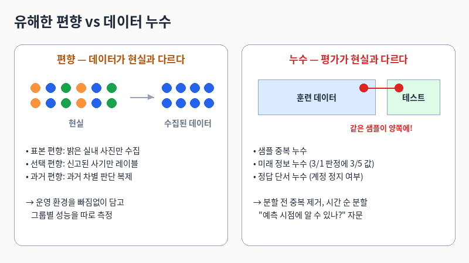
🖼 이미지 해설 — 제목은 "유해한 편향 vs 데이터 누수"로, 두 개념을 좌우로 대비한 그림입니다.
- 왼쪽(편향 — 데이터가 현실과 다르다): 현실에는 주황·파랑·초록 점이 섞여 있는데, "수집된 데이터"에는 파란 점만 남아 있습니다. 즉 수집 과정에서 한 색(=한 종류의 상황)으로 쏠린 것입니다. 아래에 표본 편향(밝은 실내 사진만 수집), 선택 편향(신고된 사기만 레이블), 과거 편향(과거 차별 판단 복제)이 적혀 있고, "운영 환경을 빠짐없이 담고 그룹별 성능을 따로 측정"하라는 대응이 있습니다.
- 오른쪽(누수 — 평가가 현실과 다르다): "훈련 데이터" 상자와 "테스트" 상자 사이를 빨간 선이 잇고 "같은 샘플이 양쪽에!"라고 적혀 있습니다. 샘플 중복 누수, 미래 정보 누수(3/1 판정에 3/5 값), 정답 단서 누수(계정 정지 여부)가 예로 적히고, "분할 전 중복 제거, 시간 순 분할, '예측 시점에 알 수 있나?' 자문"이 대응입니다.
- 초보자용 요약: 편향은 "재료(데이터)가 한쪽으로 치우친 문제", 누수는 "시험 채점이 반칙으로 부풀려진 문제"입니다.
데이터 수집 흐름 한눈에 보기 (출처 → 수집 → 검증 → 저장)
아래 도식은 이 절 전체를 관통하는 흐름입니다. 각 칸은 이어지는 소절에서 하나씩 다룹니다.
flowchart LR A["1 출처 정하기<br/>로그 / DB / API / 공개 데이터 / 합성"] --> B["2 수집하기<br/>ETL 파이프라인으로 추출"] B --> C["3 검증하기<br/>중복 / 편향 / 누수 / 레이블 품질"] C --> D["4 저장하기<br/>버전 + 리니지 기록"] D -->|"오류나 새 데이터 발견"| A C -.->|"기준 미달"| B
| 단계 | 하는 일 | 이 절의 관련 내용 |
|---|---|---|
| 1 출처 | 어디서 가져올지 결정 (운영 로그, DB, API, 크롤링, 구매, 공개 데이터셋, 합성 생성) | 연구 vs 기업, MIDV-500, MovieLens, 합성 데이터 |
| 2 수집 | 버전 관리되는 ETL(extract, transform, load) 파이프라인으로 꺼내 오기 | 자동차 가격 추정기 캠페인 |
| 3 검증 | 중복 제거, 편향·누수 점검, 레이블 품질 확인, 큐레이션 | 큐레이션, 편향·누수 토글 |
| 4 저장 | 데이터셋을 버전으로 저장하고 "언제·어디서·어떻게·왜" 기록(리니지) | 리니지, 조각 나누기 |
위 4단계 도식은 책의 한 줄 정리를 학습용으로 도식화한 것입니다. 점선·되돌림 화살표는 책이 "전체 프로세스가 매우 반복적"이라고 한 내용을 표현한 것입니다.
토글: 큐레이션 및 편향 설명
본문에는 이 위치에 ▶ 큐레이션 및 편향 설명 토글이 있습니다. 토글 안의 내용은 아래와 같이 표와 문장으로 모두 복원했습니다.
큐레이션(curation)이란
큐레이션은 수집한 원시 데이터를 모델링에 쓸 수 있는 데이터셋으로 골라 다듬고 관리하는 작업입니다. 미술관의 큐레이터가 작품을 모으기만 하는 게 아니라 전시 목적에 맞게 고르고 배치하고 설명을 붙이는 것과 같습니다. 데이터에서는 "이 데이터를 쓸지, 어떻게 손볼지, 무엇이 빠졌는지"를 판단하고 기록하는 일입니다.
수집과 비교하면
| 구분 | 수집(collection) | 큐레이션(curation) |
|---|---|---|
| 핵심 질문 | 데이터를 어디서 얼마나 가져올까 | 가져온 데이터가 쓸 만하고 균형 잡혔나 |
| 하는 일 | 로그, DB, API, 크롤링, 구매, 합성 생성 | 선별, 정제, 중복 제거, 균형 조정, 문서화 |
| 결과물 | 원시(raw) 데이터 | 모델링에 쓸 수 있게 다듬어진 데이터셋 |
| 비유 | 재료를 장보기 | 재료를 고르고 씻고 손질하기 |
큐레이션에서 하는 일
| 작업 | 내용 | OCR·사기 탐지 예시 |
|---|---|---|
| 선별(selection) | 목적에 맞는 데이터만 고름 | 유효한 신분증만, 흐릿하거나 잘린 이미지는 제외 |
| 정제(cleaning) | 오류·중복·결측 수정 또는 제거 | 같은 거래 중복 행 삭제, 금액이 음수인 오류 제거 |
| 균형 조정(balancing) | 특정 부류 쏠림 완화 | 사기 0.1퍼센트뿐이면 사기 샘플 보강 |
| 대표성 확보 | 실제 운영 환경을 반영 | 여러 국가·기기·조명의 신분증 포함 |
| 레이블 품질 관리 | 레이블 오류·불일치 점검 | 애노테이터 두 명의 번호 입력이 다른 건 재검수 |
| 문서화·버전화 | 출처·기준을 기록 | 데이터 카드, 데이터셋 버전 태그 |
- OCR: 사진 속 글자를 읽어 문자로 바꾸는 기술(신분증의 번호·이름 읽기).
- 애노테이션/레이블: 데이터에 정답을 달아 주는 일과 그 정답. 예) 사진에 "신분증은 여기"라고 상자를 그려 주기.
- 결측: 비어 있는 값.
- 데이터 카드(data card): 데이터셋의 출처·구성·한계·사용 기준을 정리한 설명서.
보완 (1): 위 표의 "흐릿하거나 잘린 이미지는 제외"는 학습 데이터를 깨끗하게 만들 때의 예입니다. 실제 운영에서 흐릿한 사진이 들어온다면 전부 지워 버리기보다, 그런 입력에 어떻게 대응하고 어떻게 평가할지도 함께 설계해야 합니다. "금액이 음수"도 환불처럼 정상적인 값일 수 있으므로 지우기 전에 의미를 먼저 확인합니다.
왜 "이후 모든 단계가 편향을 이어받는다"고 하나
모델은 주어진 데이터가 세상의 전부인 줄 알고 배웁니다. 데이터에 쏠림이 있으면 모델이 그 쏠림을 그대로 배우고, 뒤에서 아무리 정교하게 학습하고 배포해도 고쳐지지 않습니다. 예를 들면 이렇습니다.
- OCR: 학습용 신분증이 모두 밝은 실내에서 스캔한 것이라면, 어두운 곳에서 휴대폰으로 찍은 사진에서 성능이 크게 떨어집니다. 데이터를 구한 방식(수집)이 만든 표본 편향입니다.
- 사기 탐지: 고객이 신고한 거래만 사기로 레이블하면 신고하지 않은 사기는 정상으로 남습니다. 모델은 "신고되는 유형의 사기"만 잘 잡게 됩니다. 레이블이 만든 선택 편향입니다.
- 과거 데이터: 과거 심사 결과로 학습하면 과거의 차별적 판단까지 모델이 재현할 수 있습니다.
그래서 이런 편향을 모델링 전에, 데이터 단계에서 점검하고 줄여야 합니다.
⚠ 바로잡기: 본문의 "뒤에서 아무리 정교하게 학습하고 배포해도 고쳐지지 않습니다"는 데이터 단계에서 막는 것이 가장 중요하다는 경고로 읽어야 합니다. "절대 못 고친다"는 뜻은 아닙니다. 이미 생긴 편향도 재수집·재레이블링·재가중(샘플 가중치 조정)·학습/의사결정 조정·운영 검토 등으로 완화할 수는 있습니다. 다만 데이터가 애초에 담지 못한 상황(예: 어두운 사진이 하나도 없음)을 알고리즘만으로 만들어 낼 수는 없습니다.
실무에서 주의할 점
- 균형 조정은 훈련 데이터에만 합니다. 사기 샘플을 늘리거나 정상 샘플을 줄이는 조정을 검증·테스트 데이터에까지 하면 실제 운영 환경(사기가 드문 세상)과 달라져서 성능이 부풀려 보입니다(1장의 훈련·검증·테스트 분할 이야기와 연결).
- 분할 전에 중복을 제거합니다. 같은 데이터가 훈련과 테스트에 모두 들어가면 점수가 부풀려지는 누수가 생깁니다.
- 큐레이션 기준도 기록합니다. 어떤 기준으로 무엇을 뺐는지 남겨야 리니지에서 데이터 단계를 추적할 수 있습니다(2장 Q2). 이를 정리한 문서를 데이터 카드(data card)라고 부릅니다.
보완 (2): "균형 조정은 훈련에만"은 평가 데이터가 운영의 실제 분포를 대표하게 지키기 위한 기본 원칙입니다. 문제 진단을 위해 소수 부류를 따로 모아 만든 별도 진단용 평가셋을 금지하는 뜻은 아닙니다. 그런 진단셋은 "운영 성능을 대표하는 점수"와 섞어 쓰지 않으면 됩니다.
연구와 기업 머신러닝의 차이 (토글: 연구 vs 기업 비교 설명)
이 단계는 연구와 기업 머신러닝이 차이를 보이는 영역 중 하나이기도 합니다. 연구자들은 지표 최적화에 집중하는 경우가 많으며, 보유한 데이터셋의 품질이 충분하다고 가정합니다. 예를 들어 컴퓨터 비전 분야에서 연구자들은 고품질 애노테이션과 클래스 균형을 보장하기 위해 여러 차례 검토와 수정을 거친 대규모 오픈소스 데이터셋에 의존하는 경우가 많습니다. 반면 머신러닝의 기업 실무자들은 목표 애플리케이션이나 도메인에 맞는 오픈소스 데이터셋을 갖추지 못한 경우가 많습니다. 설령 그런 데이터셋이 있다 하더라도, 모델은 배포 환경의 데이터를 활용한 파인튜닝, 즉 전이 학습(transfer learning)을 여전히 거쳐야 합니다. 우리 예시에서 이는 기업이 데이터셋을 처음부터 구축하는 것과 유사합니다. 그러나 데이터 수집의 본질적인 핵심 요건은 기업과 연구 실무자 모두에게 대체로 동일하게 유지됩니다.
- 오픈소스 데이터셋: 누구나 내려받아 쓸 수 있게 공개된 데이터 묶음(예: COCO, MovieLens).
- 컴퓨터 비전: 컴퓨터가 이미지·영상을 이해하게 하는 분야.
- 클래스 균형: 부류(클래스)별 데이터 개수가 비슷한 정도. 개 사진 1만 장, 고양이 사진 10장이면 불균형입니다.
- 파인튜닝(fine-tuning) / 전이 학습(transfer learning): 이미 큰 데이터로 학습된 모델을 가져와, 내 도메인 데이터로 추가 학습해 맞추는 방법.
토글: 연구 vs 기업 비교 설명
| 구분 | 연구 | 기업 |
|---|---|---|
| 관심사 | 지표(metric) 최적화 | 배포 환경에서 동작하는 제품 |
| 데이터셋 | 검토·수정을 거친 대규모 오픈소스 데이터셋 | 대상 도메인용 오픈소스가 없는 경우가 많음 |
| 데이터 품질 | 충분하다고 가정 | 직접 확보·검증해야 함 |
| 파인튜닝 | 선택적 | 배포 환경 데이터로 필수 |
파인튜닝(전이 학습): 이미 큰 데이터로 학습된 모델을 가져와, 내 도메인의 데이터로 추가 학습해 맞추는 방법입니다. 오픈소스 모델을 쓰더라도 결국 내 환경의 데이터는 직접 마련해야 한다는 점이 요지입니다.
⚠ 바로잡기: 표의 "파인튜닝 — 기업: 필수"는 모든 기업 프로젝트에 항상 가중치 추가 학습이 필요하다는 뜻으로 일반화하면 부정확합니다. 파인튜닝은 전이 학습의 한 방법일 뿐이며, 사전학습 모델을 그대로 쓰거나, 특징 추출기로만 쓰거나, RAG처럼 모델은 그대로 두고 자료만 연결하는 방법도 있습니다. 정확히는 "배포 환경의 실제 데이터로 적합성을 평가하고, 부족하면 적응(파인튜닝 포함)시킨다"로 이해하세요. 또한 "연구는 데이터 품질을 충분하다고 가정"한다는 서술도 경향일 뿐이며, 공개 데이터셋에도 오류와 편향이 있을 수 있고 연구에서도 데이터 품질 자체를 다룹니다.
좋은 수집의 일곱 가지 요건과 토글: 유해한 편향 · 데이터 누수
데이터 수집 캠페인을 설계할 때 확인해야 할 핵심 지침입니다. 책은 아래 세 묶음에 걸쳐 총 일곱 가지를 제시합니다.
① 앞쪽 네 가지
- 문제 도메인과 데이터의 관련성
- 문제의 복잡도에 비춰 적절한 데이터셋 크기
- 데이터셋의 품질
- 유해한 편향과 의도하지 않은 샘플 유출(데이터 누수)의 방지
토글: 유해한 편향과 데이터 누수 설명
유해한 편향: 데이터가 세상을 공정하고 골고루 담지 못해서, 모델이 특정 경우에 일관되게 잘못 판단하는 것 데이터 누수: 시험 문제나 정답이 공부 자료에 몰래 섞여 들어가서, 모델 점수가 실제보다 좋게 나오는 것
1. 유해한 편향
모델은 받은 데이터가 세상의 전부인 줄 알고 배웁니다. 한쪽으로 치우친 데이터를 주면 치우친 판단을 배웁니다. 한 동네 맛집만 가 본 사람이 "이 나라 음식은 다 짜다"고 결론 내리는 것과 같습니다. "유해한"이라고 붙이는 이유는, 편향이 특정 사람이나 상황을 계속 불리하게 만들거나 서비스를 실패하게 만들기 때문입니다.
| 편향 종류 | 쉬운 설명 | 예시 |
|---|---|---|
| 표본 편향 | 데이터가 세상을 골고루 담지 못함 | 밝은 실내 신분증만 학습 → 어두운 사진에서 실패 |
| 선택 편향 | 레이블이 붙은 데이터가 특정 경우에 쏠림 | 신고된 사기만 사기로 표시 → 신고 안 된 사기를 놓침 |
| 과거 편향 | 과거의 불공정한 판단을 그대로 학습 | 과거 대출 심사의 차별이 모델에 복제됨 |
방지 방법은 간단히 말해 이렇습니다.
- 운영 환경에서 실제로 들어올 상황(조명, 기기, 지역, 고객층)을 빠짐없이 데이터에 담습니다.
- 그룹별로 성능을 따로 재서(예: 어두운 사진만, 특정 연령대만) 한쪽만 나쁜지 확인합니다.
- 레이블을 어떻게 붙였는지 의심해 봅니다. "신고된 것만"처럼 붙이는 방식 자체가 쏠림을 만들 수 있습니다.
보완: 위 세 가지를 지켜도 완전한 대표성이나 공정성이 자동으로 보장되지는 않습니다. "줄이고 점검한다"는 태도로 이해하세요.
2. 데이터 누수(샘플 유출)
시험에 비유하면 이렇습니다. 학생이 공부하는 문제집에 실제 시험 문제가 섞여 있으면 만점을 받아도 실력이 아닙니다. 모델도 같아서, 테스트에서 정확도 99퍼센트가 나와도 배포하면 70퍼센트가 되는 일이 생깁니다. 더 나쁜 점은 누수가 있으면 평가 점수가 좋게 나와서 문제가 있다는 사실 자체를 모른다는 것입니다.
| 누수 종류 | 쉬운 설명 | 예시 |
|---|---|---|
| 샘플 중복 누수 | 같은 데이터가 훈련과 테스트에 모두 들어감 | 같은 신분증 사진이 두 번 수집되어 양쪽에 존재 |
| 미래 정보 누수 | 예측 시점에는 알 수 없는 정보를 사용 | 3월 1일 사기 판정에 3월 5일 평균 결제액 사용 |
| 정답 단서 누수 | 정답을 간접적으로 알려 주는 피처 포함 | 사기 확정 후에 생기는 계정 정지 여부를 피처로 사용 |
방지 방법입니다.
- 분할하기 전에 중복을 먼저 제거합니다.
- 시간 순서가 있는 데이터는 시간 순서로 나눕니다. 피처 스토어의 point-in-time 조회가 이를 위한 기능입니다(1장 Q3).
- 피처를 정할 때마다 "예측하는 시점에 이 값을 실제로 알 수 있나?"를 자문합니다.
- 점수가 지나치게 좋으면 성공이 아니라 누수를 의심합니다.
한눈에 비교
- 편향은 데이터가 현실과 다른 문제이고, 누수는 평가가 현실과 다른 문제입니다.
- 둘 다 모델 학습 이후에는 고치기 어렵기 때문에, 책은 데이터 수집·큐레이션 단계에서 막으라고 강조합니다.
⚠ 바로잡기: ① "테스트 99% → 배포 70%"는 누수가 얼마나 위험한지 보여 주는 가상의 설명용 숫자입니다. 누수가 있다고 항상 70%로 떨어지는 것은 아닙니다. ② "편향은 데이터가 현실과 다른 문제, 누수는 평가가 현실과 다른 문제"는 기억하기 좋은 비유이지만 엄밀한 구분은 아닙니다. 편향의 범위는 더 넓고, 누수도 데이터·피처 설계 단계에서 생깁니다. ③ 누수에는 위 표 외에 전체 데이터로 전처리 통계(평균·표준편차 등)를 먼저 계산한 뒤 분할하는 경우도 있으니 "분할 먼저, 전처리 통계는 훈련 데이터에서만 학습"을 기억하세요. ④ "피처 스토어의 point-in-time 조회"는 과거 시점의 값을 재현하도록 돕지만, 피처 정의 자체가 사후 정보를 담고 있는 누수까지 자동으로 막아 주지는 않습니다.
훈련과 테스트에 중복으로 들어간 샘플 비율을 올려 보세요. 비율이 늘수록 "테스트 점수"만 부풀고 "실제 배포 점수"는 그대로입니다.
중복 샘플 비율 0% → 화면에 보이는 테스트 점수 70점 / 실제 배포 점수 70점
② 나머지 세 가지 (토글 뒤에 이어지는 본문 글머리표)
- 배포 환경을 대표하는 데이터 및 피처의 분포
- 문제 도메인을 잘 정의할 수 있을 만큼 데이터 수집 과정에 충분한 다양성
- 원시 데이터, 중간 버전, 증강 및 애노테이션된 데이터셋에 대한 리니지와 상세한 추적
| # | 요건 | 한 줄 풀이 |
|---|---|---|
| 1 | 도메인 관련성 | 중고차 가격이면 중고차 데이터여야 함 |
| 2 | 적절한 크기 | 문제가 복잡할수록 더 많이 필요하지만 무작정 많다고 좋지 않음 |
| 3 | 품질 | 오류·중복·잘못된 레이블이 적을 것 |
| 4 | 편향·누수 방지 | 위 토글 내용 |
| 5 | 배포 환경 분포 | 실제 서비스에서 들어올 데이터와 닮은 분포 |
| 6 | 충분한 다양성 | 조명·기기·지역·고객층 등을 다양하게 |
| 7 | 리니지 추적 | 원시→중간→증강→애노테이션 버전을 모두 기록 |
- 피처(feature): 모델이 입력으로 받는 특징 값(차량 연식, 주행거리 등).
- 증강(augmentation): 이미지를 뒤집거나 밝기를 바꾸는 식으로 변형해 데이터를 늘리는 기법.
데이터 리니지: 기술 부채를 막는 기록 (토글: 선형적인 과정과 리니지 여유)
앞서 언급한 대부분의 사항은 자명하지만, (데이터) 리니지는 머신러닝 프로젝트를 시작할 때 종종 간과되곤 합니다. 이는 초기 개발 속도를 위해 미래의 복잡성과 유지보수성을 희생한다는 점에서 기술 부채(technical debt)와 유사한 경우가 많습니다. 데이터 리니지가 중요한 이유는 다음과 같습니다.
- 기술 부채(technical debt): 지금 빨리 만들려고 대충 해 둔 일이 나중에 이자처럼 불어나 수리 비용이 커지는 것.
- 데이터 리니지(lineage, 족보): 데이터가 어디서 와서 어떤 가공을 거쳐 지금 모습이 되었는지의 기록.
데이터 리니지가 중요한 이유
- 데이터 리니지는 데이터의 출처를 확립합니다. 즉 데이터가 언제, 어디서, 어떻게, 왜 수집되었는지에 관한 메타데이터는 데이터의 한계를 이해하거나 적절한 피처를 선택하는 데 중요합니다.
- [번역책] 리니지는 데이터셋 버전 관리와 편집을 선형적인 프로세스로 만들어주며, 잘못된 데이터를 소급하여 수정할 수 있게 해줍니다. 실제 경험상 데이터셋의 첫 번째 버전이 최선인 경우는 드물며, 수정 작업은 데이터 분석 및 수집의 반복적인 프로세스에서 필연적으로 발생합니다. 리니지를 제대로 갖추고 있다면, 오류로 인해 데이터셋을 재생성해야 할 때 복잡한 추출 스크립트를 다시 작성하거나 재실행하는 대신 간단한 쿼리 하나로 해결하는 것이 가능해집니다.
- [재번역본] 리니지는 데이터셋의 버전 관리와 구성 과정을 선형적인 흐름으로 만들어 주고, 잘못된 데이터를 되돌아가 바로잡을 수 있게 해 줍니다. 경험상 데이터셋의 첫 번째 버전이 최선인 경우는 드물며, 수정은 데이터 분석과 수집이라는 반복 과정에 본래 따라오는 일입니다. 리니지를 제대로 갖추고 있느냐에 따라, 오류가 났을 때 간단한 쿼리 하나로 데이터셋을 다시 만들 수 있느냐, 아니면 복잡한 추출 스크립트를 다시 작성하고 다시 실행해야 하느냐가 갈릴 수 있습니다.
위 두 번째·세 번째 글머리표는 같은 영어 본문을 두 가지로 번역해 나란히 실은 것입니다. 의미는 같습니다: 데이터셋의 첫 버전은 대개 틀리므로 수정이 전제이고, 만든 과정을 기록해 두면 고치는 비용이 확 줄어든다.
- 메타데이터: "데이터에 대한 데이터". 언제·어디서·누가·어떻게 수집했는지 같은 부가 정보.
- ETL 추출 스크립트: 원본 저장소에서 데이터를 꺼내(extract) 가공(transform)해 적재(load)하는 코드.
- 쿼리(query): 데이터베이스에 "이 조건의 데이터를 달라"고 묻는 명령.
토글: 선형적인 과정과 리니지 여유 설명
1. 선형적인 과정이란
리니지가 있으면 데이터셋이 v1 → v2 → v3처럼 한 줄로 이어지고, 각 버전이 어떤 기준으로 이전 버전에서 만들어졌는지 남습니다. 문서 편집기의 변경 이력과 비슷합니다. 문제가 생기면 이력을 보고 "v2에서 중복 제거 기준을 잘못 잡았네" 하고 그 지점으로 돌아가 고치면 됩니다.
2. 첫 버전은 대개 틀린다
데이터는 한 번에 완벽하게 만들어지지 않습니다. 분석하다 보면 "이 구간 데이터가 이상하다", "이 부류가 빠졌다", "레이블이 잘못됐다"는 것을 뒤늦게 발견합니다. 그래서 수정을 전제로 일하는 것이 맞고, 수정하기 쉽게 만들어 두는 것이 리니지의 역할입니다.
3. 쿼리 한 줄 vs 스크립트 재작성 — 예를 들어 한 달 뒤에 "3월에 수집한 거래 데이터에 중복이 섞여 있었다"는 걸 알게 됐다고 합시다.
| 구분 | 리니지 없음 | 리니지 있음 |
|---|---|---|
| 오류 발견 시 | 어디서 틀렸는지 찾기 어려움 | 기록을 따라 해당 단계로 바로 이동 |
| 데이터셋 재생성 | 추출 스크립트를 다시 짜고 처음부터 재실행 | 해당 버전·조건으로 간단한 쿼리 실행 |
| 걸리는 시간 | 며칠 | 몇 분 |
| 다른 버전과 비교 | 기억에 의존 | 버전별 기록으로 비교 |
- 리니지가 없으면: 그 데이터를 어떤 원본에서 어떤 조건으로 뽑았는지 기억나지 않아, 추출 스크립트를 처음부터 다시 짜고 오래 돌려야 합니다.
- 리니지가 있으면: "원본 테이블의 이 기간, 이 조건, 이 전처리 버전"이 기록되어 있으니, 조건만 고쳐서 간단한 쿼리로 데이터셋을 다시 만들면 됩니다.
핵심은 데이터셋을 만든 과정을 기록해 두면 고치는 비용이 확 줄어든다는 것입니다. 앞서 본 큐레이션 기준의 문서화(Q3), 리니지 유지(Q2)가 모두 이를 위한 준비입니다. 책이 뒤에서 Feast와 MLflow로 데이터와 실험 이력을 남기는 이유이기도 합니다.
⚠ 바로잡기: ① "며칠 vs 몇 분"은 설명을 위한 가상의 예시입니다. ② 리니지는 반드시 한 줄(v1→v2→v3)은 아닙니다. 여러 원천이 합쳐지고 갈라지는 그래프가 일반적이며, 한 줄은 이해를 돕는 단순화입니다. ③ 기록이 있다고 무조건 "쿼리 한 줄"로 되살아나지는 않습니다. 원본 데이터가 보존되어 있고, 변환 코드·시간 기준·실행 환경과 계산 비용·접근 권한이 갖춰져야 합니다. 기록만 있고 원본이 지워졌다면 재현할 수 없습니다.
오류 발견 시 데이터를 다시 만드는 과정을 눌러서 비교해 보세요.
수집 캠페인 설계 예: 자동차 가격 추정기와 세 프로젝트
자동차 가격 추정기에 적용하기
자동차 가격 추정기라는 예제에 데이터 수집 캠페인 설계 지침을 적용해 보겠습니다. 핵심 지침에 따라, 먼저 사용 사례에 적합한 데이터를 수집합니다. 여기서는 중고 시장에 나와있는 모든 승용차 데이터를 수집하되, 트럭이나 오토바이 같은 차량은 제외합니다. 또한 데이터셋이 목표 도메인을 대표하고 편향이 발생하지 않도록 적절한 샘플링 기법도 염두에 두어야 합니다. 마지막으로, 리니지를 확립하기 위해 버전 관리되는 ETL(extract, transform, load) 파이프라인을 사용해 데이터셋을 생성합니다.
- 데이터 선택은 신중하게 이루어져야 하며, 공정성을 확보하고 편향을 방지하기 위해 하나 이상의 범주가 과대 또는 과소 대표되는 클래스 편향과 같은 사례를 특히 주의 깊게 처리해야 합니다. 대부분의 경우 처음 시작할 때는 이러한 조건 중 일부가 충족되지 않겠지만, 전체 프로세스가 매우 반복적이라는 점을 이미 알고 있으므로 앞서 제시한 조건을 최대한 많이 충족하는 데이터셋으로 시작하면 됩니다.
| 설계 항목 | 자동차 가격 추정기에서의 적용 |
|---|---|
| 도메인 관련성 | 중고 시장의 승용차만 수집, 트럭·오토바이는 제외 |
| 대표성·편향 | 승용차 전체를 대표하도록 샘플링 (특정 브랜드·지역·가격대 쏠림 방지) |
| 클래스 편향 | 어떤 차종이 너무 많거나(과대 대표) 너무 적게(과소 대표) 들어가지 않게 점검 |
| 리니지 | 버전 관리되는 ETL 파이프라인으로 데이터셋 생성 |
| 현실 태도 | 처음엔 조건이 다 충족되지 않아도 됨, 루프를 돌며 개선 |
- 샘플링: 전체에서 일부를 뽑는 방법. 예) 서울 매물만 뽑으면 지역 편향.
- ETL 파이프라인: 추출(Extract) → 변환(Transform) → 적재(Load)를 자동 순서로 묶은 작업 흐름.
범위를 나중에 넓혀 상용차를 포함하게 되면 "트럭 제외" 기준을 다시 검토하고 그 변경도 버전으로 기록해야 합니다.
이 책의 세 프로젝트
이 책에서는 데이터 집약적인 프로젝트 두 가지와 대규모 언어 모델(LLM) 기반의 RAG 시스템을 집중적으로 다루는데, 이 세 가지는 모두 각기 다른 데이터 모달리티(data modality)를 사용해 앞서 언급한 내용을 강조하고 다양한 데이터 타입과 모달리티를 다룰 때의 어려움을 보여줍니다. 신분증 탐지기 프로젝트에는 공개 데이터셋인 MIDV-500 - kaggle 을 사용합니다(그림 2.3). 이 데이터셋은 다양한 국가의 신분증, 여권, 운전면허증을 포함한 50가지 신분증 유형에 대한 동영상 클립 500개로 구성되어 있습니다.
| 프로젝트 | 데이터 모달리티 | 비고 |
|---|---|---|
| 신분증 탐지기 (ID card detector) | 이미지(영상 프레임) | 공개 데이터 MIDV-500, 사람 애노테이션(CVAT), 합성 데이터 |
| 영화 추천기 | 정형(표) 데이터 | MovieLens 1M |
| LLM 기반 RAG 시스템 | 텍스트(문서) | 이 절에서는 모달리티 비교 표로만 등장 |
- LLM(대규모 언어 모델): 방대한 글로 학습한 언어 모델(ChatGPT 계열).
- RAG: 질문에 답하기 전에 관련 문서를 검색해 모델에게 함께 건네는 방식.
- 모달리티: 데이터의 "종류/형태"(표, 이미지, 텍스트 등). 바로 아래 토글에서 설명합니다.
⚠ 바로잡기: 위 글의 "MIDV-500 - kaggle" 링크는 원 저자 배포가 아니라 Kaggle에 올라온 재배포본입니다. 데이터의 규모·촬영 조건은 Kaggle 페이지가 아니라 저자 논문(arXiv 1807.05786)으로 확인한 내용을 이 문서에 반영했습니다(Kaggle 페이지는 제목 정도만 확인되어 상세 설명·파일 내용은 확인 못함).
데이터 모달리티와 MIDV-500 (토글 3개: 모달리티 · 쉬운 설명 · MIDV-500 소개)
🖼 이미지 해설 (010·011, 같은 그림의 한국어판/영어판) — 한 줄로 늘어선 5장의 사진과 가운데 스마트폰 그림으로 이루어져 있습니다. 각 사진은 서로 다른 배경에 신분증을 놓고 찍은 장면이고, 빨간 사각형이 사진 속 신분증의 윤곽(=정답 위치)입니다. 배경은 왼쪽부터 책상 위, 키보드 위, 손에 든 모습(스마트폰 화면 속), 무늬 있는 배경, 잡동사니가 널린 책상입니다. 핵심은 "배경과 각도가 이렇게 달라도 신분증의 네 모서리를 정확히 찾아야 한다"는 점입니다. 다만 이 그림은 데이터 예시일 뿐 모델의 성공률을 보여 주는 증거는 아닙니다. (010 아래에는 한국어 캡션 "그림 2.3 MIDV-500 데이터셋의 시각 데이터 예시"가 붙어 있고, 011은 같은 그림의 원형으로 캡션 없이 사진만 보입니다.) 사진 속 신분증은 견본/공개 이미지를 인쇄해 촬영한 것이며, 이미지에 보이는 글자를 읽어 옮기지는 않았습니다.
토글: 데이터 모달리티 설명
데이터 모달리티란 — 모달리티(modality)는 데이터의 "종류" 또는 "형태"입니다. 사람이 세상을 눈(시각), 귀(청각), 글(언어)로 받아들이는 방식이 각각 다르듯, 데이터도 표, 이미지, 텍스트, 음성처럼 담긴 형태가 다르고, 형태마다 컴퓨터가 읽는 방법과 모델이 배우는 방법이 다릅니다.
| 모달리티 | 예시 | 컴퓨터가 보는 형태 | 다룰 때의 어려움 |
|---|---|---|---|
| 정형(표) 데이터 | 거래 내역, 소득 정보 | 행·열의 숫자와 범주 | 결측치, 범주 인코딩, 피처 설계 |
| 이미지 | 신분증 사진, 객체 탐지 사진 | 픽셀 숫자 배열 | 용량이 큼, 조명·각도 다양성, 박스 애노테이션 |
| 텍스트 | 문서, 질문, 챗봇 대화 | 토큰(단어 조각) 숫자 열 | 문서 분할, 의미 검색, 정답 평가가 모호 |
| 음성 | 통화 녹음 | 시간별 파형 | 잡음, 화자·억양 차이 |
| 시계열 | 센서 값, 주가 | 시간 순서의 숫자열 | 시간 누수, 계절성 |
결국 컴퓨터에게는 전부 숫자입니다. 다만 숫자가 놓인 모양이 다릅니다. 표는 칸마다 의미가 정해져 있고, 이미지는 픽셀 격자이고, 텍스트는 순서가 중요한 단어 조각의 열입니다.
왜 모달리티가 중요한가 — 앞서 배운 데이터 수집, 큐레이션, 애노테이션, 분할은 모달리티마다 구체적인 방법이 달라집니다. 같은 질문("레이블은 어떻게 붙이나?")에도 답이 다릅니다.
| 구분 | 정형 데이터 | 이미지 | 텍스트(RAG) |
|---|---|---|---|
| 저장 방식 | DB 테이블, CSV, Parquet | 이미지 파일(PNG, JPG) | 문서 파일, 벡터 DB |
| 레이블 방식 | 컬럼 하나가 정답 | 박스 그리기, 분류 라벨 | 정답이 정해지지 않은 경우가 많음 |
| 전처리 | 결측 처리, 인코딩 | 크기 조정, 정규화, 증강 | 분할(chunking), 임베딩 |
| 평가 지표 | 정확도, F1, RMSE | mAP, IoU | 검색 정확도, 답변 충실도 |
그래서 책은 서로 다른 모달리티의 프로젝트 세 가지를 보여 주며, 같은 원칙(품질, 편향 방지, 리니지)이 형태에 따라 어떻게 다르게 적용되고 어떤 어려움이 생기는지 드러내려는 것입니다.
보완: 시계열은 표(숫자 열)나 음성(파형)과 겹칠 수 있어, 이 다섯 분류가 완전히 서로 배타적인 것은 아닙니다. 텍스트 RAG의 "레이블"은 평가 질문·정답·근거 문서 등이 필요할 수 있다는 정도로 이해하세요. 표의 용어: 토큰(문장을 쪼갠 조각), 임베딩(의미를 숫자 벡터로 바꾼 것), 벡터 DB(그 벡터를 비슷한 것끼리 빨리 찾는 저장소), mAP·IoU(박스 탐지 정확도 지표), F1·RMSE(분류/회귀 오차 지표).
토글: 쉬운 설명 (신분증 탐지기와 MIDV-500)
이 책에서는 데이터 집약적인 프로젝트 두 가지와 대규모 언어 모델(LLM) 기반 RAG 시스템을 집중적으로 다룹니다. 세 프로젝트는 모두 데이터 모달리티가 서로 달라서, 앞서 한 이야기를 강조하고 다양한 데이터 타입과 모달리티를 다룰 때의 어려움을 보여 줍니다. 신분증 탐지기(ID card detector) 프로젝트에서는 공개된 MIDV-500 데이터셋을 씁니다(그림 2.3). 이 데이터셋은 50가지 신분 문서 종류(여러 나라의 신분증, 여권, 운전면허증)에 대한 500개의 영상 클립으로 이루어져 있습니다.
쉬운 설명: 신분증 탐지기를 만들기 위한 연습용 데이터로, 누구나 받을 수 있는 공개 데이터셋 MIDV-500을 쓰겠다는 이야기입니다.
| 용어 | 쉬운 뜻 | 이 프로젝트에서 |
|---|---|---|
| ID card detector | 사진 속 신분증이 어디 있는지 찾아내는 모델 | 책의 이미지 모달리티 프로젝트 |
| MIDV-500 | 공개된 신분증 영상 데이터셋의 이름 | 훈련·평가에 쓸 데이터 |
| 비디오 클립 | 짧은 영상 한 편 | 500편 (영상 속 프레임이 곧 이미지) |
| 문서 종류 | 신분증 양식의 유형 | 50종 (신분증, 여권, 운전면허증, 여러 국가) |
| 클립 수 ÷ 종류 수 | 종류당 평균 영상 수 | 500 ÷ 50 = 평균 10편 |
영상인 이유: 신분증을 한 장의 정지 사진이 아니라 카메라로 움직이며 찍은 영상으로 모았습니다. 영상에서 프레임(한 장면)을 뽑으면 각도, 거리, 조명이 다른 이미지를 많이 얻을 수 있습니다. 실제 사용자가 휴대폰으로 신분증을 비추는 상황과 비슷합니다.
앞의 모달리티 이야기와의 연결: 입력은 이미지(영상의 프레임)이므로, 이미지 모달리티의 어려움(조명·각도 다양성, 박스 애노테이션)이 그대로 적용됩니다(2장 Q7).
슬라이더로 영상에서 뽑는 프레임 수를 바꿔 보세요. 영상 속 시간·각도·거리가 달라서 한 편에서 서로 다른 이미지를 여러 장 얻습니다.
프레임 5장 × 문서 종류당 평균 영상 10편 = 문서 종류 하나당 50장 (예시 계산)
토글: MIDV-500 소개
스마트폰으로 신분증을 찍은 공개 영상 데이터셋입니다. 모바일 환경에서 신분증을 찾고 읽는 연구를 위해 만들어졌습니다.
| 항목 | 내용 |
|---|---|
| 이름 뜻 | Mobile Identity Document Video 500 (모바일 신분증 영상 500편) |
| 구성 | 문서 50종 × 영상 10편 = 500편 |
| 문서 종류 | 여러 나라의 신분증, 여권, 운전면허증 등 |
| 촬영 기기 | 스마트폰 (영상에서 프레임 추출) |
| 촬영 조건 | 5가지: 책상 위, 키보드 위, 손에 든 상태, 손가락으로 일부 가림, 어수선한 배경 |
| 정답(레이블) | 프레임마다 문서의 네 모서리 위치, 텍스트 필드 위치와 내용 |
| 문서의 정체 | 견본(specimen) 문서이며 실제 개인 정보가 아님 |
| 용도 | 문서 탐지, 필드 인식(OCR), 모바일 촬영 환경 연구 |
- 요점: 같은 문서를 다양한 조건(배경, 손 가림, 어수선함)에서 찍어, 현실의 촬영 환경을 어느 정도 반영합니다.
- 개인정보 걱정이 없습니다: 실제 사람의 신분증이 아니라 견본 문서라서 공개할 수 있었습니다.
- ID card detector에 쓰는 방법: 프레임마다 문서의 네 모서리 위치가 정답으로 있어서, 신분증 위치를 찾는 모델을 학습시키기 좋습니다.
⚠ 바로잡기 ①: 촬영 조건 — 저자 논문의 5가지 조건은 Table(책상), Keyboard(키보드), Hand(손에 든 상태), Partial(문서가 화면 밖으로 일부 또는 전부 나감), Clutter(어수선한 배경)입니다. 본문 표의 "손가락으로 일부 가림"은 Partial의 정확한 정의가 아닙니다.
⚠ 바로잡기 ②: "개인정보 걱정이 없습니다" — 저자 논문에 따르면 원본 문서 이미지는 Wikimedia Commons의 공개(퍼블릭 도메인 또는 공개 저작권 라이선스) 자료이고, 이를 인쇄·라미네이팅해 촬영했습니다. 따라서 "모두 견본이라 아무 걱정 없다"는 보장은 확인되지 않습니다. 공개 데이터라도 재사용 조건(라이선스)은 직접 확인해야 합니다. 또한 Kaggle 재배포본의 조건은 원본과 다를 수 있습니다.
보완 (논문 기준 사실): ① 규모 계산은 50종 × 2대 기기 × 5가지 조건 = 500영상이며, 문서당 영상은 10개입니다. ② 문서 구성은 ID 카드 17종, 여권 14종, 운전면허증 13종, 기타 6종, 기기는 iPhone 5와 Samsung Galaxy S3입니다. ③ 정답은 프레임별 문서 사각형과 문서 필드의 위치·문자 내용 등입니다. ④ 논문은 제한된 조건·문서 때문에 훈련용으로만 쓰면 과적합할 수 있어 평가·비교가 주된 목적이라고 하며, 인쇄물이라 홀로그램 같은 실제 보안 요소가 없어 진위 판별 전반의 대표 데이터로는 볼 수 없습니다. ⑤ "문서 종류 50개"를 탐지 모델의 클래스 수 50개로 곧바로 치환하면 안 됩니다(신분증 위치만 찾는 탐지라면 클래스는 "신분증" 하나일 수 있음). ⑥ 같은 영상에서 뽑은 프레임들은 서로 매우 비슷하므로, 프레임을 무작위로 섞어 훈련/테스트로 나누면 누수로 평가가 부풀 수 있습니다. 새로운 문서·영상에 일반화하려는 목적이라면 문서(또는 영상) 단위로 그룹을 나눠야 합니다. [보강]
CVAT과 사람 애노테이션 (토글: 쉽게 설명)
신분증 탐지기 프로젝트의 일환으로, 컴퓨터 비전 알고리즘의 데이터 레이블링에 사용되는 오픈소스 웹 기반 이미지/동영상 애노테이션 도구인 CVAT(Computer Vision Annotation Tool) - Github 를 이용한 사람 애노테이션도 다룹니다(그림 2.4). CVAT의 설치 방법과 이미지 애노테이션을 머신러닝 루프의 일부로 만드는 방법을 살펴봅니다. 이 섹션은 선택사항이지만, 데이터를 직접 애노테이션해 보고 사람 애노테이션 주기가 머신러닝 루프에 가져오는 문제를 이해할 수 있는 기회를 제공합니다.
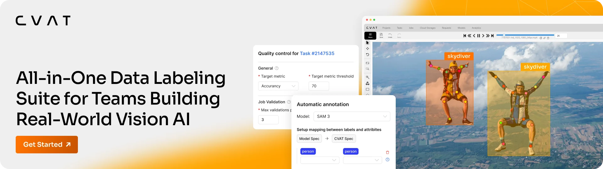
🖼 해설 (012) — CVAT 공식 홍보 배너입니다. 왼쪽 문구는 "All-in-One Data Labeling Suite for Teams Building Real-World Vision AI"(실제 비전 AI를 만드는 팀을 위한 올인원 데이터 레이블링 도구)이고, 오른쪽에는 하늘에서 낙하하는 두 명의 스카이다이버에 "skydiver" 상자와 관절 점이 그려진 화면, 그리고 "Quality control"(품질 관리), "Automatic annotation"(자동 애노테이션, 모델 SAM 3 선택) 설정 창이 겹쳐 있습니다. 즉 CVAT이 상자/관절 표시, 품질 관리, 모델 보조 자동 레이블링을 지원한다는 소개입니다. 홍보 이미지이므로 이 기능이 모두 무료 Community 판에 들어 있다는 증거는 아닙니다.
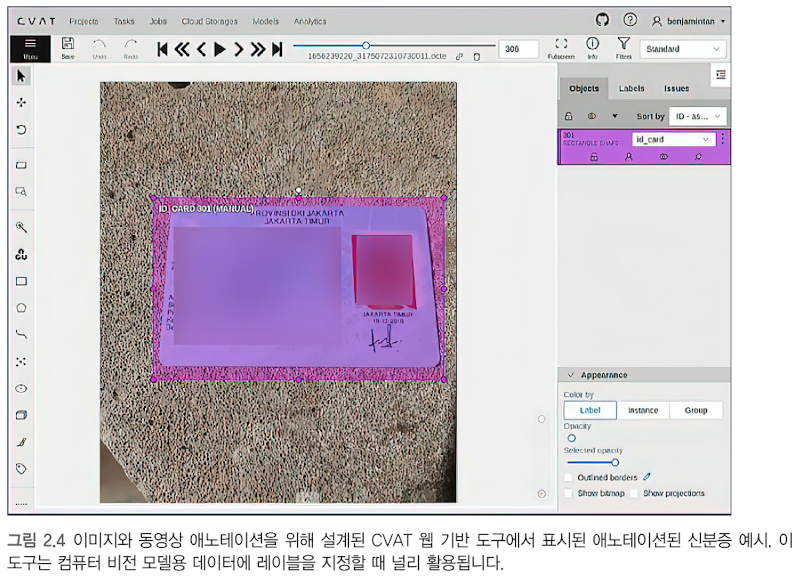
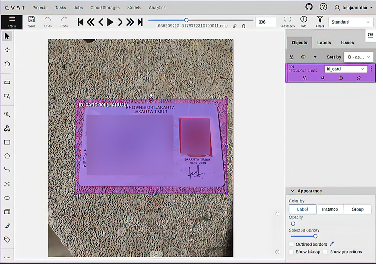
🖼 해설 (013·014, 같은 화면의 두 판 — 013은 캡션 없는 원형, 014는 한국어 캡션 포함) — CVAT 웹 화면 안에서 돌바닥 위의 신분증에 보라색 사각형(id_card 레이블)이 그려진 모습입니다. 오른쪽 목록에 "RECTANGLE SHAPE"인 개체 id_card가 보이고, 왼쪽에는 사각형·다각형 등 그리기 도구가 있으며, 위쪽 재생바는 영상 프레임을 넘기는 기능입니다. 사각형의 꼭짓점 점들이 신분증 모서리에 맞춰져 있습니다. 한국어 캡션(014)은 "이미지와 동영상 애노테이션을 위해 설계된 CVAT 웹 기반 도구에서 표시된 애노테이션된 신분증 예시. 이 도구는 컴퓨터 비전용 데이터에 레이블을 지정할 때 널리 활용됩니다." 입니다. 신분증 속 개인정보처럼 보이는 부분은 가려져 있어 내용을 읽지 않았습니다.
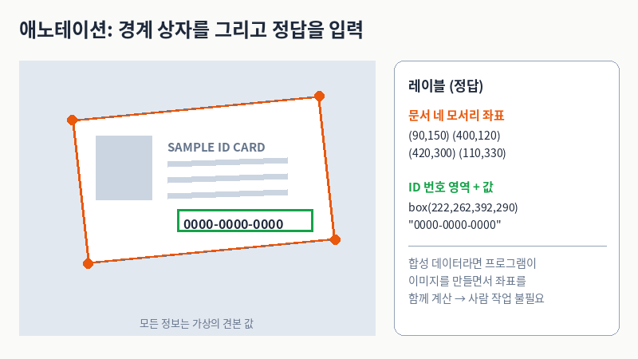
🖼 해설 (015) — 제목 "애노테이션: 경계 상자를 그리고 정답을 입력". 왼쪽의 가상 견본 신분증("SAMPLE ID CARD") 네 모서리에 주황 점이 찍혀 있고, 번호 칸에는 초록 상자가 있습니다. 오른쪽 "레이블(정답)" 칸에는 ① 문서 네 모서리 좌표 (90,150) (400,120) (420,300) (110,330), ② ID 번호 영역 + 값: box(222,262,392,290) "0000-0000-0000"이 적혀 있고, 아래에 "합성 데이터라면 프로그램이 이미지를 만들면서 좌표를 함께 계산 → 사람 작업 불필요"라고 되어 있습니다. 즉 탐지용 정답(위치)과 OCR용 정답(글자)이 서로 다른 정보라는 점, 그리고 다음 절의 합성 데이터와의 연결을 보여 줍니다. 모든 정보는 가상의 견본 값입니다.
토글: 쉽게 설명
CVAT과 사람 애노테이션 — CVAT(Computer Vision Annotation Tool)은 이미지나 영상에 정답을 표시하는 웹 프로그램입니다. 오픈소스이고 브라우저로 접속해 씁니다. 이미지 위에 마우스로 박스를 그리고 이름을 붙이면 레이블이 만들어집니다. 앞서 본 "애노테이터가 경계 상자를 그리고 번호를 입력한다"는 작업(1장 Q2)을 하는 도구입니다. 신분증 탐지기에서는 이미지에서 신분증의 네 모서리에 박스(또는 다각형)를 그려 주는 작업이 됩니다.
"머신러닝 루프의 일부로 만든다"는 뜻 — 레이블링을 한 번 하고 끝내는 게 아니라, 모델과 사람이 번갈아 가며 반복하는 구조로 만든다는 이야기입니다(사람이 루프 안에 있어서 human-in-the-loop라고 부릅니다).
| 단계 | 누가 | 하는 일 |
|---|---|---|
| 1. 초기 레이블링 | 사람 | CVAT에서 신분증 모서리에 박스를 그림 |
| 2. 모델 학습 | 컴퓨터 | 그린 박스로 탐지 모델을 학습 |
| 3. 예측 | 모델 | 새 이미지에 신분증 위치를 자동으로 제안 |
| 4. 검수·수정 | 사람 | 틀린 박스를 고치고 맞는 박스는 승인 |
| 5. 재학습 | 컴퓨터 | 고친 레이블을 더해 다시 학습 → 3번으로 반복 |
처음에는 사람이 전부 그리지만, 모델이 어느 정도 학습되면 모델이 먼저 박스를 제안하고 사람은 고치기만 하면 되어 작업이 빨라집니다. 고친 레이블로 다시 학습하면 모델이 더 정확해지고, 이 과정이 반복됩니다.
flowchart LR A["1 사람이 박스 그리기<br/>CVAT"] --> B["2 모델 학습"] B --> C["3 모델이 새 이미지에<br/>위치 제안"] C --> D["4 사람이 검수와 수정"] D --> E["5 고친 레이블로 재학습"] E --> C
슬라이더를 움직여 5단계를 하나씩 확인하세요.
단계 1/5 → 1. 사람(CVAT): 신분증 모서리에 박스를 직접 그림 — 가장 느리고 비싼 단계
사람 애노테이션 주기가 루프에 가져오는 문제 — 책이 직접 해 보라고 하는 이유가 바로 이 문제들을 체감하게 하려는 것입니다.
| 문제 | 쉬운 설명 | 대응 방법 |
|---|---|---|
| 시간·비용 | 사람이 일일이 그려서 느리고 비쌈 | 모델 제안을 고치는 방식으로 작업량 감소 |
| 사람마다 다른 기준 | 누구는 테두리 안쪽, 누구는 바깥쪽에 그림 | 작업 지침서, 교차 검수 |
| 실수와 오류 | 피곤하면 박스가 어긋나거나 빠짐 | 샘플 재검수, 오류 신고 |
| 병목 | 레이블이 늦으면 학습도 늦어짐 | 우선순위 정해 필요한 데이터부터 작업 |
| 레이블 버전 관리 | 고친 레이블이 어느 버전인지 헷갈림 | 레이블도 데이터처럼 버전·리니지 기록 |
⚠ 보완 (CVAT 사용 시 주의): ① "모델이 먼저 그려 주면 항상 빠르고 정확해진다"는 보장은 없습니다. 모델이 틀린 제안을 하면 사람이 오히려 고치느라 시간이 들 수 있고, 검수 없이 승인하면 오류가 학습 데이터에 그대로 들어갑니다. ② CVAT 오픈소스 Community 판은 MIT 라이선스이며, 온라인 서비스·엔터프라이즈 판 등은 별도 조건이 있습니다(조사 시점 기준). ③ 설치 방법·실습 절차는 이 절에서 직접 다루지 않아 확인 못함입니다. 공식 저장소 README를 참고하세요.
🔧 본인 환경에 맞게 교체: CVAT을 직접 실습할 경우 접속 주소(예: 로컬 설치 시 브라우저에서 여는 호스트·포트), 계정, 프로젝트·레이블 이름은 사용자 환경마다 다릅니다. 이 문서에는 특정 주소·계정·토큰을 적지 않았으며, 필요하면<CVAT_HOST>,<YOUR_TOKEN>같은 자리표시자로 두고 자신의 값으로 바꾸세요. (책은 CVAT 설치 절차를 이 위치에서 제시하지 않아 명령어는 생략했습니다.)
합성 데이터: 레이블이 함께 만들어지는 데이터 (토글: 쉽게 설명)
다행히도, 합성 데이터(synthetic data)를 사용하기 때문에 전체 데이터셋에 애노테이션을 달 필요는 없습니다. 이미지와 레이블이 절차적으로(procedurally)(프로그램으로) 생성되므로 별도의 레이블링이 필요하지 않다는 것이 합성 데이터의 장점입니다.
토글: 쉽게 설명
합성 데이터는 사람이 찍은 사진이 아니라 프로그램이 만들어 낸 가짜 데이터입니다. 핵심은 "프로그램이 이미지를 직접 만들면, 그 안에 신분증이 어디 있는지도 이미 알고 있다"는 점입니다. 예를 들어 신분증 템플릿 이미지를 배경 사진 위에 임의의 위치, 각도, 크기로 붙여서 이미지를 만든다고 합시다. 붙이는 순간 프로그램이 신분증 네 모서리의 좌표를 계산할 수 있으니, 이미지를 만들 때 정답(레이블)이 함께 나옵니다. 사람이 CVAT로 박스를 그릴 필요가 없습니다(2장 Q10).
| 구분 | 실제 데이터 | 합성 데이터 |
|---|---|---|
| 이미지 출처 | 사람이 촬영·수집 | 프로그램이 생성 |
| 레이블 | 사람이 따로 붙여야 함(애노테이션) | 생성할 때 함께 자동으로 나옴 |
| 비용·시간 | 높음 | 낮음, 필요한 만큼 대량 생성 가능 |
| 레이블 오류 | 사람의 실수 가능 | 거의 없음(코드가 정확한 값을 앎) |
| 현실과의 차이 | 없음 | 있을 수 있음, 가짜 티가 나면 실제에서 성능 저하 |
- 1장에서 "실제 데이터를 구하기 어렵다면 합성 데이터 생성을 고려할 수 있다"고 한 내용이 여기서 구체화됩니다.
- "절차적으로(procedurally)"란 사람이 하나하나 만든 것이 아니라, 정해 둔 규칙과 코드로 자동으로 찍어낸다는 뜻입니다.
- 주의할 점: 합성 이미지가 현실과 너무 달라 보이면(배경이 어색하거나 조명이 부자연스러우면) 모델이 합성 이미지에만 잘 맞고 실제 사진에서는 성능이 떨어질 수 있습니다. 합성 방식에 쏠림이 있으면 그것도 편향이 됩니다(2장 Q5). 그래서 합성 데이터로 학습하더라도 실제 데이터로 평가해야 합니다. (본문 주석: 이 마지막 두 가지는 토글 작성자의 판단이며, 책이 어떻게 합성하고 평가하는지는 해당 절에서 확인해야 합니다.)
- 책이 "전체를 애노테이션하지 않는다"고 하는 것은 앞의 CVAT 절이 선택사항인 이유와도 이어집니다. 합성 데이터에는 사람 레이블링이 필요 없고, 사람 애노테이션은 직접 체험해 보는 용도입니다.
가로 위치 슬라이더로 신분증(파란 상자)을 배경 위에서 움직여 보세요. 프로그램은 자기가 놓은 위치를 알고 있어서 왼쪽 위 모서리 좌표를 바로 계산합니다(가상 예시).
배경 크기 320×120(예시) · 신분증 왼쪽 위 모서리 x = 40, y = 30 → 레이블 자동 생성
⚠ 바로잡기: ① "합성 데이터 일반이 레이블을 자동으로 제공한다"는 것은 아닙니다. 이 신분증 실습처럼 생성 절차가 정답 좌표를 계산할 수 있게 설계된 경우에 가능한 장점입니다. 글·사진을 생성 모델이 만드는 방식 등 다른 합성 방법도 있으며 그 경우 레이블이 따로 필요할 수 있습니다. ② 표의 "레이블 오류: 거의 없음"은 일반 규칙이 아닙니다. 생성 코드나 좌표 변환에 버그가 있으면 모든 레이블이 한꺼번에 틀립니다. 합성 코드도 샘플 시각화로 검증하세요. ③ 표의 "현실과의 차이: (실제 데이터는) 없음"도 과장입니다. 실제 수집 데이터도 수집 편향이 있을 수 있어 운영 환경을 대표하지 못할 수 있고, 사람 레이블 오류도 있을 수 있습니다. ④ 생성 코드의 버전과 난수 조건(seed)도 리니지로 기록해야 같은 데이터를 다시 만들 수 있습니다. ⑤ 아래 MIDV-500 같은 실제 촬영 데이터로 평가하면 안전합니다(토글 작성자 판단과 일치).
영화 추천기: MovieLens 1M과 데이터 조각 나누기 (토글: 쉽게 설명)
영화 추천기 프로젝트에서는 2000년에 MovieLens에 가입한 6,000명의 사용자가 약 3,000편의 영화에 남긴 100만 건의 익명 평점을 담은 인기 데이터셋인 MovieLens 1M - Link , 1M , KrBlog 을 사용할 것입니다. 이 데이터셋은 users.dat, movies.dat, ratings.dat 세 가지 주요 파일로 구성됩니다. 데이터를 다운로드하고 처리하는 코드는 이 책과 함께 제공되는 리포지터리(repository)에서 확인할 수 있습니다.
⚠ 바로잡기 (규모 수치): 공식 README와 공식 ZIP의 줄 수를 직접 확인한 값은 사용자 6,040명, 영화 메타데이터 3,883행(공식 설명 "약 3,900편"), 평점 1,000,209건입니다. 본문과 아래 그림 017의 "영화 약 3,000편"은 "약 3,900편"이 맞습니다. (영화 ID의 최댓값은 3,952이지만 이는 번호 범위일 뿐 영화 개수가 아닙니다.) 사용자 "약 6,000명"과 평점 "100만 건"은 어림값으로 맞습니다.
| 파일 | 공식 형식 | 뜻 |
|---|---|---|
users.dat |
UserID::Gender::Age::Occupation::Zip-code |
사용자가 제공한 인구통계 정보 (정확성 보장 없음) |
movies.dat |
MovieID::Title::Genres |
제목과 장르 (장르는 여러 값 가능) |
ratings.dat |
UserID::MovieID::Rating::Timestamp |
1–5점 정수 평점과 시각 (사용자별 최소 20개 평점) |
.dat파일: 값 사이를::두 글자로 구분한 텍스트 파일. 엑셀 CSV(쉼표 구분)와 구분자만 다릅니다.- Timestamp: 평점을 남긴 시각을 숫자로 적은 값. 이후 "시간 순 분할"에 쓸 수 있는 단서입니다.
⚠ 사용 조건 (보완): 공식 README는 MovieLens 데이터의 재배포 금지와 상업·수익 목적 사용 시 별도 허가 조건을 두고, 논문 등에서 사용 시 출처 표기를 요구합니다. 학습용 공개 데이터라는 사실을 "제품에 자유롭게 써도 된다"는 뜻으로 오해하지 마세요. 링크 중 GroupLens 소개 페이지는 접속 확인에 실패했고 README·ZIP으로 대체 확인했습니다.
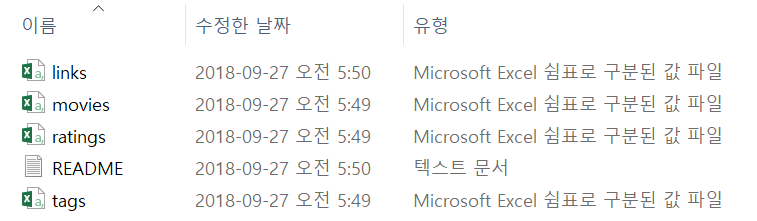
🖼 해설 (016) — 파일 탐색기 화면 캡처로, links, movies, ratings, tags 4개의 "Microsoft Excel 쉼표로 구분된 값 파일"(CSV)과 README 텍스트 문서가 보이며 수정일은 모두 2018-09-27입니다.
⚠ 바로잡기: 이 그림은 MovieLens 1M의 파일 목록이 아닙니다. 1M은users.dat·movies.dat·ratings.dat(::로 구분)인데, 그림은links/movies/ratings/tags.csv구성이어서 연결된 한국어 블로그가 설명하는 다른 배포본(ml-latest-small) 예시입니다. 블로그의 CSV 읽기 예제를 1M에 그대로 적용하지 마세요.
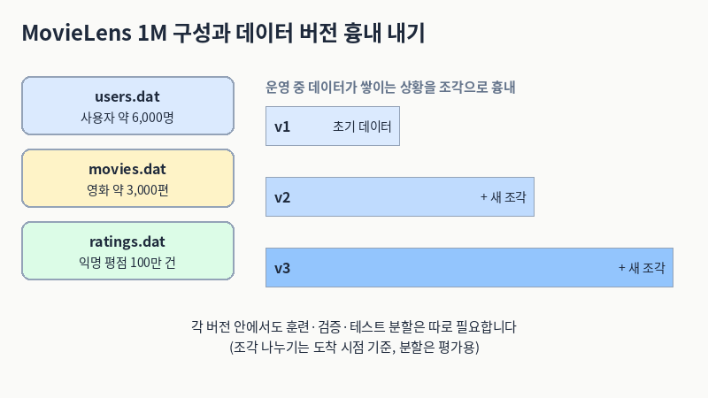
🖼 해설 (017) — 제목 "MovieLens 1M 구성과 데이터 버전 흉내 내기". 왼쪽에 세 파일 상자: users.dat(사용자 약 6,000명), movies.dat(영화 약 3,000편 ← 위 정정 참고, 약 3,900편이 맞음), ratings.dat(익명 평점 100만 건). 오른쪽에는 "운영 중 데이터가 쌓이는 상황을 조각으로 흉내"라는 제목 아래 v1(초기 데이터) → v2(+ 새 조각) → v3(+ 새 조각)로 막대가 점점 길어집니다. 맨 아래 문구는 "각 버전 안에서도 훈련·검증·테스트 분할은 따로 필요합니다 (조각 나누기는 도착 시점 기준, 분할은 평가용)"입니다.
데이터를 조각으로 나누고 버전 관리 시작하기
- [번역책] 준비 단계에서는 모델이 프로덕션 환경에 배포되었을 때 사용자가 생성하는 데이터가 점진적으로 유입되는 상황을 시뮬레이션하기 위해 데이터셋을 더 작은 단위로 분할할 것입니다. 또한 더 많은 데이터를 '추출'하고 버전을 관리하는 파이프라인도 구축합니다. 바로 이 단계에서 데이터셋 버전 관리를 시작합니다.
- [재번역본] 준비 단계에서는 데이터셋을 더 작은 조각으로 나눕니다. 모델이 운영 중일 때 사용자들이 데이터를 계속 만들어 내는 상황처럼, 데이터가 점점 더 들어오는 것을 흉내 내기 위해서입니다. 또한 더 많은 데이터를 "추출"하고 그 버전을 관리하는 파이프라인도 구축합니다. 여기서 데이터셋 버전 관리를 시작하게 됩니다.
두 글머리표는 같은 문장을 두 가지로 번역한 것으로 의미는 같습니다: 큰 데이터셋을 일부러 작게 쪼개 "새 데이터가 점점 들어오는 운영 상황"을 흉내 내고, 추출·버전 관리 파이프라인을 만들어 데이터셋 버전 관리를 시작한다.
토글: 쉽게 설명
실제 서비스에서는 데이터가 한꺼번에 오지 않고 시간이 지나면서 계속 쌓입니다. 하지만 책의 실습에서는 처음부터 데이터가 다 있습니다. 그래서 큰 데이터셋을 일부러 여러 조각으로 쪼개서, 조각을 하나씩 더해 가며 "새 데이터가 들어오는 상황"을 연습합니다.
| 버전 | 포함된 데이터 | 상황 비유 |
|---|---|---|
| v1 | 전체 중 첫 조각(예: 20퍼센트) | 서비스 시작 때 확보한 초기 데이터 |
| v2 | v1 + 두 번째 조각 | 한 달 뒤 사용자 데이터가 더 들어옴 |
| v3 | v2 + 세 번째 조각 | 두 달 뒤 또 추가됨 |
퍼센트 비율은 토글 작성자가 든 예시이고, 책이 실제로 몇 조각으로 어떻게 나누는지는 해당 절에서 확인하세요. (이 장에는 책 제공 리포지터리의 URL이 적혀 있지 않아 실제 코드와 분할 비율은 확인 못함입니다.)
"추출 파이프라인"은 데이터를 자동으로 꺼내서 정리하고 저장하는 일련의 작업을 코드로 만들어 둔 것입니다. 사람이 매번 손으로 하지 않고 같은 절차를 반복 실행할 수 있어서, 새 조각이 올 때마다 똑같이 처리됩니다. 그리고 만들어진 결과에 버전을 붙여 저장합니다.
데이터셋 버전 관리는 코드를 git으로 관리하듯 데이터도 "v1, v2, v3 ..."으로 이력을 남기는 것입니다. 이렇게 해 두면 "이 모델은 v2 데이터로 학습했다"고 정확히 말할 수 있고, v2에 문제가 있으면 v1로 돌아가거나 v2만 다시 만들 수 있습니다. 앞서 본 리니지가 선형적인 흐름을 만들어 오류를 쉽게 고치게 해 준다는 내용(2장 Q6)이 이것으로 구체화됩니다.
헷갈리기 쉬운 점이 하나 있습니다. 이 "조각 나누기"는 1장에서 본 훈련·검증·테스트 분할과 다른 목적의 나누기입니다.
| 구분 | 조각으로 나누기(이번 내용) | 훈련·검증·테스트 분할(1장) |
|---|---|---|
| 목적 | 운영 중 데이터가 점점 들어오는 상황을 흉내 | 모델 성능을 정직하게 평가 |
| 나누는 기준 | 도착 시점(v1, v2, v3 ...) | 용도(학습, 튜닝, 최종 평가) |
| 결과 | 데이터셋 버전이 쌓임 | 세 가지 용도의 데이터셋 |
각 버전 안에서도 훈련·검증·테스트 분할은 여전히 필요합니다.
보완: 이 두 가지는 서로 다른 축이므로, 각 누적 버전마다 "어떤 데이터로 학습하고 어떤 데이터로 평가했는지"를 명시해야 합니다. 이전 버전에서 시험용으로 쓴 데이터를 무심코 다음 버전의 학습에 넣고 같은 시험 결과를 비교하면 비교가 왜곡됩니다. 또한 실습용 분할이 실제 온라인 수집 환경 자체를 검증해 주는 것은 아닙니다. [보강]
flowchart LR R["MovieLens 1M 전체<br/>users / movies / ratings"] --> P1["조각 1"] R --> P2["조각 2"] R --> P3["조각 3"] P1 --> V1["v1 = 조각 1"] V1 --> V2["v2 = v1 + 조각 2"] P2 --> V2 V2 --> V3["v3 = v2 + 조각 3"] P3 --> V3 V1 --> S1["각 버전 안에서 훈련 검증 테스트 분할"] V2 --> S1 V3 --> S1
버전을 올릴 때마다 조각이 더해집니다. 예: 조각 비율 20% / 40% / 40%.
현재 버전 v1 → 전체의 20% 포함 — 서비스 시작 때 확보한 초기 데이터
🔧 본인 환경에 맞게 교체: MovieLens 1M 데이터를 내려받아 실습할 때는 데이터를 저장할 폴더 경로(예: <DATA_DIR>/ml-1m/), 내려받은 파일 이름·버전, 사용하는 파이썬/라이브러리 버전이 사용자마다 다릅니다. 책이 제공하는 리포지터리의 주소와 코드는 이 장에 나와 있지 않으므로 책의 안내를 따르세요(확인 못함).
2.1.2 탐색적 데이터 분석 EDA — 데이터부터 들여다보기
EDA(탐색적 데이터 분석, exploratory data analysis) 는 간단히 말해 활용 가능한 데이터를 탐색하고 그 통계적 특성의 세부 사항을 파악하는 과정입니다. 이 단계는 가장 중요한 단계 중 하나입니다. 이유는 두 가지입니다.
- 데이터셋에 관한 문제처럼 충분히 명확하게 정의되지 않은 문제에 대한 첫 번째 방어선 역할을 하는 경우가 많습니다.
- 모델을 개발·유지 관리하는 데 필요한 작업량 추정치를 정밀하게 다듬는 데 매우 중요합니다.
EDA를 할 때 염두에 둘 다섯 가지 질문 묶음
책은 다음 다섯 묶음의 질문을 목표로 제시합니다. 아래 표는 본문 질문 각각을 풀어 쓴 초보자용 답변입니다.
- 데이터의 형태는 어떠합니까? 스키마(schema)는 무엇입니까? 스키마가 변경될 수 있습니까? 유효하지 않은 값은 어떻게 방어할 수 있습니까? 데이터 정제가 필요합니까?
- 데이터는 어떻게 분포되어 있습니까? 모든 타깃(target)이 균등하게 표현되어 있습니까, 아니면 추가적인 클래스 균형 조정이 필요합니까?
- 데이터에는 목표 작업에 적합한 충실한 피처가 포함되어 있습니까? 피처를 계산하는 데 비용이 많이 듭니까?
- 입력 데이터가 주기적으로 변동합니까? 모델에 반영되지 않은 외부 요인과의 상관관계가 나타납니까?
- 데이터셋에 이상값(outlier)이 존재합니까? 프로덕션 환경에서 이상값은 어떻게 처리해야 합니까?
| 질문 | 초보자용 답변 |
|---|---|
| 데이터의 형태는? | 표·이미지·문서·영상 중 무엇인지, 한 샘플이 무엇인지 정의합니다. 영상 한 프레임과 독립된 문서 한 장을 혼동하지 않습니다. |
| 스키마는 무엇인가? | 스키마는 필드 이름·타입·단위·필수 여부를 적은 데이터의 약속입니다. 예: 가격의 통화, 주행거리의 단위까지 약속에 포함합니다. |
| 스키마가 바뀔 수 있는가? | 바뀔 수 있습니다. 필드 추가·삭제·타입·의미 변경을 버전으로 관리하고 입력 검사와 호환성 시험으로 감지합니다. |
| 유효하지 않은 값은 어떻게 방어? | 입력 경계에서 타입·범위·누락·파일 형식을 검사합니다. 실패한 자료는 격리·거절·대체값 등 합의한 방식으로 처리하고 알림을 남깁니다. |
| 데이터 정제가 필요한가? | 중복·오류·결측·레이블 불일치를 확인합니다. 이상해 보이는 정상 값을 무조건 지우지 않고 필드의 의미와 운영 사례를 먼저 봅니다. |
| 데이터는 어떻게 분포? | 히스토그램·분위수·범주 비중·시간별 추이를 봅니다. 모델 입력과 정답을 구별하고 운영 자료와 비교합니다. |
| 타깃이 균등한가? 클래스 균형 조정이 필요한가? | 실제 운영의 클래스 비중부터 확인합니다. 불균형이면 훈련의 가중치·샘플링과 알맞은 지표를 검토하되, 대표성 있는 평가용 자료는 건드리지 않고 보호합니다. |
| 충실한 피처가 있는가? | 예측하는 시점에 실제로 얻을 수 있는 특징인지 봅니다. 정답이 나온 뒤에야 생기는 정보는 제외합니다. 베이스라인과의 비교로 유용성을 확인합니다. |
| 피처 계산 비용이 큰가? | 시간·메모리·조회 비용·최신성을 재 봅니다. 비싼데 성능이 거의 오르지 않으면 생략하거나 미리 계산해 둡니다. |
| 입력이 주기적으로 변동? | 요일·계절·행사별 분포와 성능을 비교합니다. 정상적인 주기 변동을 장애로 오판하지 않도록 기준을 정합니다. |
| 모델에 없는 외부 요인과 상관? | 시장·날씨·정책 같은 요인을 조사합니다. 상관관계는 원인의 증거가 아니며, 그 값을 예측 시점에 알 수 있는지도 확인합니다. |
| 이상값이 있는가? | 단순한 자릿수 입력 오류인지, 드물지만 정상인 값(예: 고가 차량)인지 구별합니다. |
| 운영에서 이상값은 어떻게? | 거절·제한·대체·사람 검토 등 정책을 정하고 그 처리 결과까지 측정합니다. 학습 때만 지우고 서비스에서는 방치하지 않습니다. |
⚠ 바로잡기: 본문 첫 질문의 "데이터 정체"는 문맥상 "데이터 정제"(cleaning)의 오타로 읽습니다. 같은 절의 "타킷"은 "타깃", 다른 절의 "리지니"는 "리니지(lineage)", "실험 추척"은 "실험 추적", "Shaply"는 "Shapley", "decision boundry"는 "decision boundary"입니다. 이 문서는 이후 바로잡은 표기로 씁니다.
다변량 분석과 차원 축소 — PCA, t-SNE
데이터를 분석할 때 다변량 분석(multivariate analysis, 여러 변수를 동시에 평가하는 기법) 은 견고한 피처를 개발하는 데 활용할 수 있는 기저 분포와 패턴의 단서를 제공합니다. 관련 변수의 수에 따라 주성분 분석(Principal Component Analysis, PCA) 이나 t-분포 확률적 이웃 임베딩(t-distributed Stochastic Neighbor Embedding, t-SNE) 같은 차원 축소(dimensionality reduction) 기법이 필요합니다.
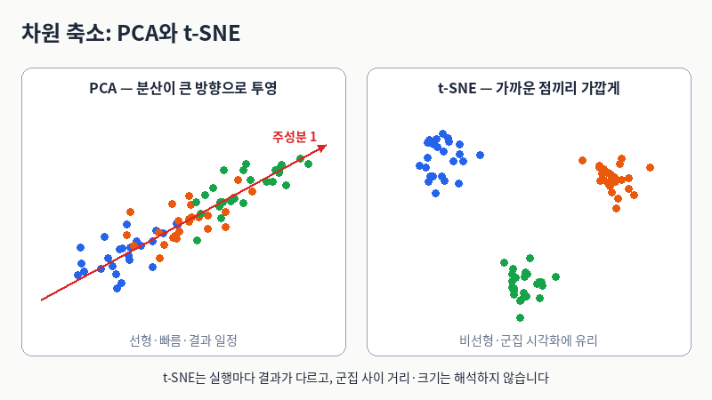
이미지 해설. 왼쪽 "PCA — 분산이 큰 방향으로 투영"은 파랑·주황·초록 점들이 비스듬히 퍼져 있고 가장 길게 퍼진 방향으로 빨간 화살표 "주성분 1"이 그려져 있습니다. 이 화살표 위로 점들을 내려 찍어(투영) 한 줄로 줄이는 것이 PCA입니다. 밑 설명은 "선형·빠름·결과 일정"입니다. 오른쪽 "t-SNE — 가까운 점끼리 가깝게"는 점들이 파랑·주황·초록 세 덩어리로 또렷이 갈라져 있고, 밑에 "비선형·군집 시각화에 유리"라고 적혀 있습니다. 그림 아래 한 줄이 핵심입니다: "t-SNE는 실행마다 결과가 다르고, 군집 사이 거리·크기는 해석하지 않습니다." 즉 덩어리가 서로 얼마나 멀리 떨어졌는지, 얼마나 큰지는 믿으면 안 됩니다.
▶ 다변량 분석, 차원 축소 설명
# 다변량 분석은 변수를 하나씩 보지 않고 여러 개를 동시에 보는 분석입니다.
키와 몸무게를 따로 보면 둘 다 평범해 보여도, 같이 보면 "키에 비해 몸무게가 유난히 큰 사람"이 드러납니다.
이렇게 변수들 사이의 관계(상관, 군집, 이상치)가 단서가 됩니다. 그 단서로 새 피처를 만들 수 있습니다(예: 몸무게÷키², 즉 BMI).
쓸모없는 피처를 걸러낼 수도 있습니다. 그래서 "견고한 피처를 만든다"고 쓴 것입니다.
# 차원 축소는 변수가 수십~수백 개일 때 필요합니다.
그 정도면 눈으로 볼 수 없으니, 정보를 최대한 보존하면서 2~3차원으로 줄여 그림으로 봅니다.
구분 PCA t-SNE
방식 가장 넓게 퍼진 방향으로 선형 투영 가까운 점끼리 가깝게 비선형 배치
강점 빠르고 결과가 일정함, 피처 축소에도 사용 군집 구조를 시각화하기 좋음
주의 비선형 구조는 못 잡음 느리고, 실행마다 결과가 다르며, 군집 간 거리·크기는 해석하면 안 됨
줄별 풀이
- "키와 몸무게를 따로 보면…": 변수 하나씩(일변량)으로는 평범해도 두 변수의 조합에서 이상함이 드러납니다. 예를 들어 키 170cm(평범), 몸무게 95kg(약간 많음)을 따로 보면 평범하지만 함께 보면 BMI = 95 ÷ 1.7² ≈ 32.9 로 눈에 띕니다.
- "몸무게÷키², 즉 BMI": 원래 있던 두 열로 새 피처를 만드는 예입니다. 이렇게 만드는 일을 피처 엔지니어링이라 합니다.
- "차원 축소는 변수가 수십~수백 개일 때": 변수 하나가 한 '차원'입니다. 눈으로 볼 수 있는 건 2~3차원뿐이라 정보를 최대한 보존하며 줄입니다.
- 표(구분/방식/강점/주의)는 아래처럼 정리됩니다.
| 구분 | PCA | t-SNE |
|---|---|---|
| 방식 | 가장 넓게 퍼진 방향으로 선형 투영 | 가까운 점끼리 가깝게 비선형 배치 |
| 강점 | 빠르고 단순함, 피처 축소에도 사용 | 군집 구조를 눈으로 보기 좋음 |
| 주의 | 비선형 구조는 못 잡음. 변수의 단위·스케일에 영향을 받음 | 느림. 초기화·설정에 따라 실행마다 결과가 다를 수 있음. 군집 간 거리·크기를 원래 공간의 거리·크기로 읽으면 안 됨 |
⚠ 바로잡기: 토글에 "PCA는 …결과가 일정함"이라고 적혀 있지만, PCA도 계산 방식(solver)·난수 설정(random_state)·변수 스케일에 따라 결과가 달라질 수 있습니다. 원리(분산이 큰 방향으로의 선형 투영)는 맞고, "항상 똑같다"까지는 보장되지 않는다고 읽으세요. 또한 변수가 많다고 항상 차원 축소가 필요한 것은 아니며, 시각화나 피처 축소가 필요할 때 쓰는 도구입니다.
가정은 검증되기 전까지 위험 요소 — EDA는 반복 활동
가정(assumption)을 이해하고 검증하기
이 단계에서는 데이터와 그 분포에 대해 우리가 세운 가정을 이해하는 것이 매우 중요합니다. 모든 가정은 검증되기 전까지 리소스로 간주해야 하며, 이러한 가정이 위반되지 않도록 데이터 파이프라인 초기에 검증 체계를 마련해야 합니다. 이러한 가정은 입력 데이터의 스키마처럼 단순한 것일 수도 있고, 샘플링에 숨겨진 편향이거나 특정 데이터 필드에 대한 오해일 수도 있습니다. 이를 통해 나중에 디버깅에 드는 시간을 크게 절약할 수 있으며, 문제의 범위도 매우 빠르게 좁혀나갈 수 있습니다. 또한 가정을 직접 검토함으로써, 해당 가정이 면밀한 검토를 통과하지 못할 경우 프로세스 초기에 다른 접근 방식으로 전환할 수 있습니다.
⚠ 바로잡기: "검증되기 전까지 리소스로 간주"는 번역이 어색합니다. 앞뒤 맥락(가정이 어긋나면 나중에 디버깅이 힘들다)으로 보아 "검증되기 전까지는 잠재적 위험 요소(리스크)로 간주한다"는 뜻으로 읽는 것이 자연스럽습니다. 원서 영어 문장은 확인하지 못해 번역 의도를 단정하지는 않습니다.
풀이와 예시
| 가정의 종류(본문 예) | 구체적 예 | 초기에 둘 검사 |
|---|---|---|
| 입력 데이터의 스키마 | "주행거리는 항상 km 단위의 숫자" | 필드 타입·허용 범위·결측 비율 검사 |
| 샘플링에 숨겨진 편향 | "수집한 사진은 낮에 찍은 것뿐" | 시간대·기기별 분포 확인 |
| 특정 필드에 대한 오해 | "price가 세금 포함인 줄 알았는데 미포함" | 필드 정의서와 샘플 값 대조 |
데이터 과학자와 ML 엔지니어의 시각
데이터 과학자에게 이러한 사항들은 대부분 자연스럽게 체득된 것일 수 있습니다. 그러나 동일한 경험과 역량을 갖춘 머신러닝 엔지니어도 근본 원인 분석(root-cause analysis) 과 드리프트 같은 배포 문제에 중요한 단서와 맥락을 제공할 수 있습니다.
- 근본 원인 분석: 문제가 터졌을 때 겉으로 드러난 증상이 아니라 "왜 처음 틀어졌는가"까지 거슬러 올라가는 분석.
- 드리프트(drift): 배포 후 시간이 지나며 입력 데이터(또는 입력과 정답의 관계)가 학습 때와 달라지는 현상. 자세한 내용은 2.1.6 모니터링에서 다룹니다.
EDA는 한 번으로 끝나지 않는다
탐색적 데이터 분석(EDA) 은 루프를 진행하면서 데이터셋에 대한 새로운 인사이트를 얻거나 실험이 실패할 때마다 가정을 재검토하는 반복적 프로세스입니다. 루프의 이 단계는 시간이 많이 소요되므로, 모델에 대한 대안적 접근 방식을 탐색하고 문제 정의에 대한 관점을 바꾸는 데 열린 자세를 유지해야 합니다.
- 새 데이터가 들어올 때, 혹은 실험이 실패할 때마다 EDA로 돌아옵니다. (앞 장에서 본 "머신러닝 루프"의 한 칸으로서 계속 반복)
- 시간이 오래 걸리므로, 한 가지 접근에 집착하지 말고 다른 모델·다른 문제 정의도 열어 두라는 조언입니다.
flowchart LR A["데이터 수집"] --> B["EDA와 가정 검증"] B --> C["모델링과 훈련"] C --> D["평가"] D -->|"실험 실패나 새 데이터"| B D -->|"통과"| E["배포"]
위 그림은 EDA가 "한 번 지나가는 관문"이 아니라 평가에서 실패할 때마다 되돌아오는 고리의 한 칸임을 보여 줍니다.
2.1.3 모델링과 훈련 — 어떤 모델을 쓸 것인가
활용 가능한 데이터와 피처에 대한 이해를 바탕으로, 다음 단계는 실제 예측 모델을 구축하는 것입니다. 이 단계에서는 처음에 설정한 목표가 실현되고 있는지, 그리고 모델이 요구되는 지표를 충족할 수 있는지를 확인하는 데 집중합니다.
모델링 단계는 문제 정의를 해결하기에 적합한 모델 또는 알고리즘을 결정하는 것에서 시작합니다. 이 단계의 의사결정 요인으로는 (이론적) 성능, 입력 데이터 타입, 해결해야 할 문제의 유형(분류, 탐지, 회귀 등), 그리고 이와 관련된 고려사항이 있습니다. 이 단계에서는 MLOps 도구상자의 몇 가지 중요한 컴포넌트가 등장합니다.
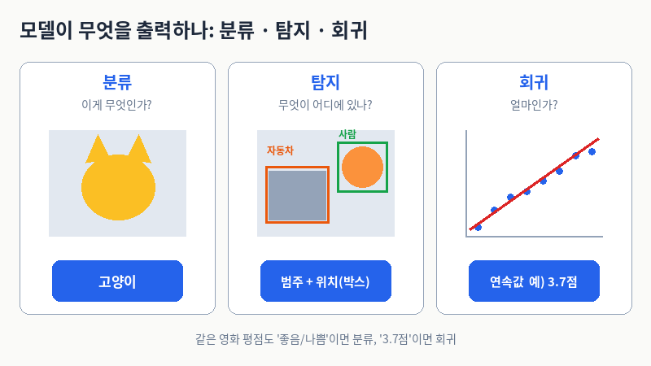
이미지 해설. 세 칸 카드입니다. 분류("이게 무엇인가?")는 노란 고양이 얼굴 그림 하나에 정답 "고양이" 한 단어가 붙습니다. 탐지("무엇이 어디에 있나?")는 그림 속 자동차에 주황 네모, 사람에 초록 네모가 그려지고 정답이 "범주 + 위치(박스)"입니다. 회귀("얼마인가?")는 점들이 직선을 따라 올라가는 그래프이고 정답이 "연속값 예: 3.7점"입니다. 아래 한 줄: "같은 영화 평점도 '좋음/나쁨'이면 분류, '3.7점'이면 회귀" — 출력 형태가 유형을 정한다는 뜻입니다.
▶ 분류, 탐지, 회귀 설명
# 세 유형은 '모델이 무엇을 출력해야 하는가' 로 구분합니다.
| 유형 | 질문 | 출력 | 예시 |
|------|-----------------------|---------------------|--------------------------------|
| 분류 | 이게 무엇인가? | 정해진 범주 중 하나 | 스팸 메일 여부, 고양이/개 사진 |
| 탐지 | 무엇이 어디에 있는가? | 범주와 위치(박스) | 사진 속 사람·자동차 위치 찾기 |
| 회귀 | 얼마인가? | 연속적인 숫자 | 집값, 내일 기온, 영화 평점 |
- 분류: 사진 한 장에 라벨 하나를 붙입니다. "이 사진은 고양이".
- 탐지: 한 장에 여러 물체가 있어도 각각 "무엇이, 어디에" 있는지 박스로 찾습니다. 분류에 위치 맞히기가 더해진 셈이라 학습 데이터에도 박스 레이블링이 필요해 더 번거롭습니다.
- 회귀: 범주가 아니라 숫자를 맞힙니다.
- 같은 소재도 출력 형태에 따라 유형이 바뀝니다. 영화 평점을 "좋음/나쁨"으로 맞히면 분류이고, "3.7점"으로 맞히면 회귀입니다.
# 회귀 분석 (Regression Analysis): 독립 변수와 종속 변수 간의 관계를 수학적으로 모델링하여, 특정 변수의 값을 설명하거나 미래의 값을 예측하는 분석 기법입니다.
(예: 집의 면적에 따른 아파트 가격 예측, 조회수에 따른 수익 예측)
풀이
| 유형 | 모델이 내놓는 것 | 이 책의 프로젝트에서 |
|---|---|---|
| 분류 | 정해진 범주 중 하나 | 스팸 여부 같은 예(책 프로젝트에선 직접 쓰지 않는 설명용 예) |
| 탐지 | 범주 + 위치(박스) | 신분증 탐지(사진 속 신분증이 어디 있는가) |
| 회귀 | 연속적인 숫자 | 영화 평점 예측(추천 프로젝트에서 평점을 숫자로 다룰 때) |
- 탐지는 분류에 "위치 맞히기"를 더한 것이라, 학습용 정답에도 박스를 그려 줘야 해서 레이블링이 더 번거롭습니다(이전 절의 CVAT 같은 도구가 필요한 이유).
- 회귀의 "독립 변수/종속 변수": 독립 변수는 입력(집 면적), 종속 변수는 맞히려는 값(아파트 가격)입니다.
- 신분증 위치를 찾는 일(탐지)과 신분증 번호를 글자로 읽는 일(OCR)은 서로 다른 작업입니다.
MLOps 도구상자의 네 가지 컴포넌트
책은 이 단계에서 등장하는 컴포넌트로 다음 네 가지를 꼽습니다.
- 모델 및 데이터 버전 관리
- 실험 추적
- 모델 훈련 파이프라인
- 하이퍼파라미터 탐색
이 컴포넌트들은 이후의 장에서 자세히 다루지만, 이들이 머신러닝 루프의 성공에 왜 필수적인지를 이해하는 것이 중요합니다.
리니지·추적성과 하이퍼파라미터 최적화, 모듈식 코드베이스(그림 2.5)
네 컴포넌트가 공통으로 다루는 것: 리니지와 추적 가능성
이 컴포넌트들이 공통적으로 다루는 핵심 주제는 리니지(lineage)와 추적 가능성(traceability) 이며, 실수로 이어질 수 있는 수작업 단계를 제거하는 것이기도 합니다.
- 모델 및 데이터 버전 관리는 모든 모델이 특정 데이터셋 버전과 본질적으로 연결되도록 보장하며, 디버깅이나 컴플라이언스(규정 준수) 목적으로 처음부터 손쉽게 재현할 수 있게 합니다.
- 실험 추적(experiment tracking) 은 이러한 엄격함을 프로토타이핑 단계까지 확장하며, 사용된 데이터와 정확한 모델 설정(configuration), 체크포인트(checkpoints)가 모든 결과와 함께 기록되도록 보장합니다. 또한 이는 실험과 결과가 절대 유실되지 않음을 의미한다고 책은 말합니다. 실험과 모델 추적에 사용되는 단일 통합 인터페이스 덕분에 모델 특성 및 성능에 대한 협업과 보고도 향상됩니다.
⚠ 바로잡기: "실험과 결과가 절대 유실되지 않는다"는 과장입니다. 추적 도구가 실제로 기록하도록 설정하고, 접근 권한·백업·보관 정책까지 운영해야 비로소 유실을 막을 수 있습니다. 도구를 쓰는 것만으로 자동 보장되지 않습니다.
📝 보완: 모델을 데이터 버전에 연결하는 것만으로는 부족하고, 재현하려면 코드 버전·실행 환경·설정·난수 값도 함께 기록해야 합니다. 체크포인트는 훈련 도중 저장해 둔 모델의 중간 저장본입니다.
하이퍼파라미터 최적화(HPO)와 모듈식 코드베이스
마지막 컴포넌트인 하이퍼파라미터 최적화는 주어진 탐색 공간에서 최적의 하이퍼파라미터를 찾거나 특정 함수를 최적화하는 과정을 말합니다. 따라서 프로젝트 초기 단계부터 코드베이스를 모듈식으로 구성하는 방식을 채택하는 것이 바람직하며, 이 방식에서는 훈련된 모델을 코드베이스에 설정과 데이터를 적용하여 생성된 아티팩트(산출물)로 간주합니다. 이러한 접근 방식은 리니지와 재현성 면에서도 이점이 있으며, 프로젝트 코드베이스를 구조화하는 일반적으로 좋은 방법이기도 합니다(그림 2.5).
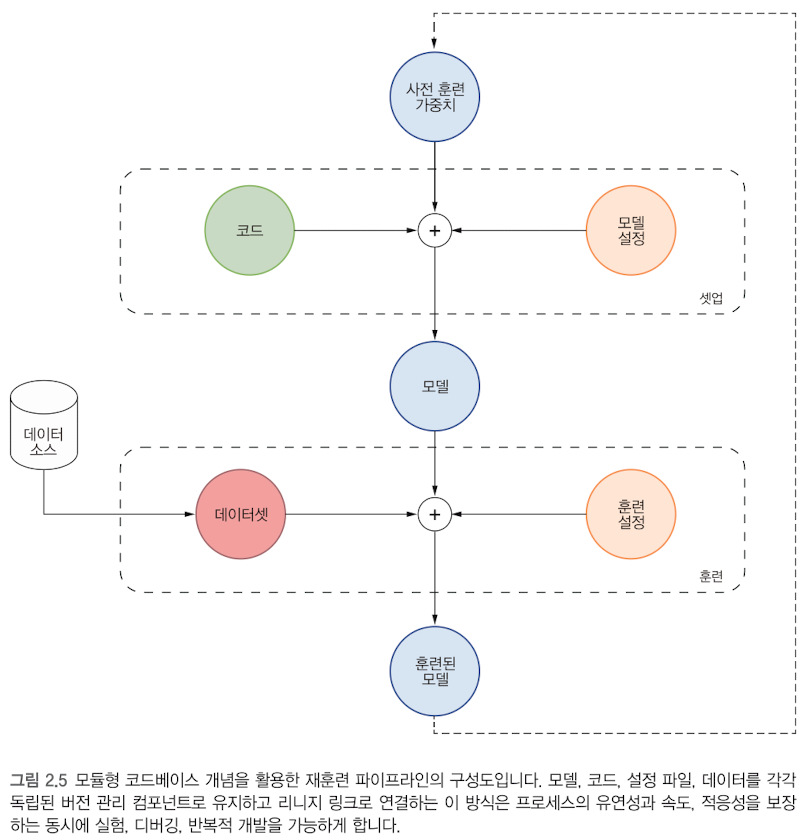
이미지 해설 (한국어 그림 2.5). 위에서 아래로 읽습니다. 맨 위 "사전 훈련 가중치" → 가운데 "셋업" 점선 상자 안에서 "코드"와 "모델 설정"이 더해져(＋) → "모델"이 됩니다. 그 모델에 왼쪽 "데이터 소스"에서 온 "데이터셋"과 오른쪽 "훈련 설정"이 "훈련" 점선 상자에서 더해져(＋) → "훈련된 모델"이 됩니다. 맨 오른쪽 큰 점선은 훈련된 모델이 다시 맨 위 "사전 훈련 가중치"로 돌아가는 고리로, 결과를 다음 실험의 시작점으로 쓸 수 있다는 뜻입니다. 그림 밑 설명: 모델·코드·설정 파일·데이터를 각각 독립된 버전 관리 컴포넌트로 유지하고 리니지 링크로 연결하면 유연성·속도·적응성을 보장하면서 실험·디버깅·반복 개발이 가능합니다.
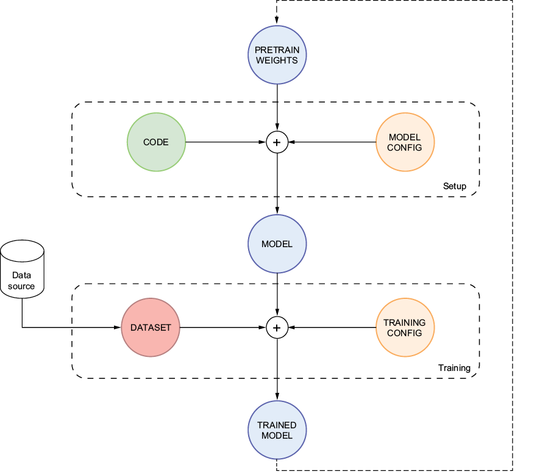
이미지 해설 (영어 그림 2.5). 위 한국어 그림과 같은 구조의 영어판입니다. PRETRAIN WEIGHTS → (CODE + MODEL CONFIG) "Setup" → MODEL → (DATASET + TRAINING CONFIG) "Training" → TRAINED MODEL, 그리고 오른쪽 점선이 처음으로 돌아가는 고리입니다. 용어 대응: Pretrain weights=사전 훈련 가중치, Model config=모델 설정, Training config=훈련 설정. 어두운 배경에서 일부 선이 흐리게 보일 수 있습니다.
flowchart TD W["사전 훈련 가중치"] --> S["셋업 단계"] C["코드"] --> S MC["모델 설정"] --> S S --> M["모델"] D["데이터셋 버전"] --> T["훈련 단계"] TC["훈련 설정"] --> T M --> T T --> TM["훈련된 모델 아티팩트"] TM -->|"다음 실험의 시작점"| W
▶ 쉽게 설명 — 하이퍼파라미터, 모듈식 구조
# 하이퍼파라미터는 학습 전에 사람이 정하는 설정값입니다(학습률, 트리 깊이, 배치 크기 등). 학습을 통해 얻는 가중치와는 다릅니다.
# 하이퍼파라미터 최적화는 최적의 설정값을 자동으로 찾는 과정입니다. 사람은 두 가지만 줍니다.
- 탐색 공간: 시도할 범위. 예: 학습률 0.001~0.1
- 손실 함수: 결과가 좋은지 나쁜지 가르는 기준
그러면 도구가 여러 조합을 알아서 시도해 가장 좋은 값을 찾습니다.
# 왜 모듈식 구조가 필요한가: 도구가 설정만 바꿔 가며 같은 코드를 반복 실행하려면, 설정이 코드 안에 박혀 있으면 안 됩니다.
그래서 코드, 설정, 데이터를 분리하고 학습된 모델을 그 조합의 결과물(아티팩트)로 봅니다.
| 구성 요소 | 역할 | 비유 |
|-----------------|----------------------|-------------|
| 코드 | 학습 절차 | 레시피 |
| 설정(config) | 하이퍼파라미터 등 | 불 세기, 시간 |
| 데이터 | 학습 재료 | 재료 |
| 모델(아티팩트) | 위 셋을 적용한 결과 | 완성된 요리 |
# 이렇게 하면 이점이 생깁니다.
- 리니지: 이 모델이 어떤 코드·설정·데이터에서 나왔는지 추적할 수 있습니다.
- 재현성: 같은 조합이면 같은 모델을 다시 만들 수 있습니다.
- 코드 구조 자체가 깔끔해집니다.
줄별 풀이
- 하이퍼파라미터 vs 가중치: 하이퍼파라미터는 훈련 전에 사람이 정하는 다이얼(학습률 = 한 번에 얼마나 크게 고칠지, 배치 크기 = 한 번에 몇 개씩 볼지), 가중치는 훈련을 통해 스스로 얻는 값입니다.
- 탐색 공간 + 손실 함수: 예를 들어 학습률을 0.001~0.1 사이에서 시험하고, 각 시험의 결과를 손실(틀린 정도) 같은 한 숫자로 평가하면, 도구가 조합을 바꿔 가며 가장 좋은 값을 고릅니다.
- "설정이 코드 안에 박혀 있으면 안 된다": 값을 바꿀 때마다 코드를 열어 고치면 도구가 자동으로 반복 실행할 수 없습니다.
- 표의 요리 비유: 코드=레시피, 설정=불 세기·시간, 데이터=재료, 모델=완성된 요리.
📝 보완: 본문 토글은 "손실 함수"를 기준으로 설명하지만, 실제로 최적화하는 목표는 검증 F1·MAE·실행 비용처럼 상황에 맞는 지표일 수 있습니다. 또 HPO는 지정한 탐색 공간 안에서 좋은 조합을 찾는 것이며, 무한한 모든 조합 중의 전역 최적값을 보장하지는 않습니다.
설정 파일로 실험 속도 높이기 — 과적합과 Git 추적
코드베이스를 이렇게 모듈식으로 구성하면, 모델 아키텍처나 훈련 방식을 바꾸는 작업이 설정 파일 수정만큼 간단해지므로 실험 속도를 높이는 데 큰 이점이 있습니다. 예를 들어 어떤 모델이 과적합(overfitting)이 의심될 경우, 실험을 수동으로 실행하는 대신 설정 파라미터로 모델 크기와 계층 수를 줄여 가설을 검증하면 손쉽게 문제를 해결할 수 있습니다. 이러한 설정 파일은 깃(Git)으로 추적해야 하며, 모델의 리니지와 결합하면 강력한 내부 분석(introspection) 및 디버깅 기능을 제공합니다. 훈련과 모델의 하이퍼파라미터 역시 설정으로 관리할 수 있어, 하이퍼파라미터 탐색과 최적화에 쉽게 접근할 수 있습니다. 앞서 보여드린 그림 2.5는 코드베이스를 모듈화하면 데이터와 소스 코드 모두에 대한 추적 및 리니지 시스템을 개발하기도 쉬워진다는 점을 보여줍니다. 초기 모델을 개발하는 단계부터 이러한 분리를 염두에 두면 향후 확장, 파이프라인화, 모듈화도 한층 수월해집니다.
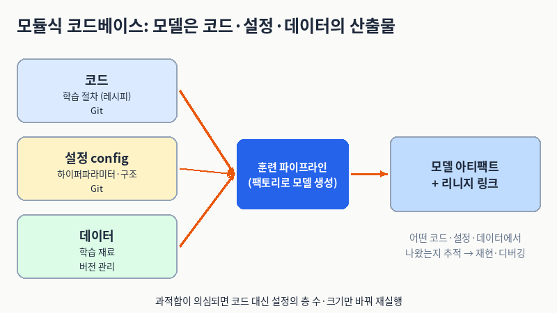
이미지 해설. 왼쪽 세 상자 — 코드(학습 절차=레시피, Git), 설정 config(하이퍼파라미터·구조, Git), 데이터(학습 재료, 버전 관리) — 에서 화살표가 가운데 파란 상자 "훈련 파이프라인(팩토리로 모델 생성)"으로 모이고, 오른쪽 "모델 아티팩트 + 리니지 링크"가 나옵니다. 밑에 "어떤 코드·설정·데이터에서 나왔는지 추적 → 재현·디버깅", 맨 아래 "과적합이 의심되면 코드 대신 설정의 층 수·크기만 바꿔 재실행"이라고 적혀 있습니다.
▶ 쉽게 설명 — 설정 파일과 과적합
# 핵심: 모델 구조(층 수, 크기)와 학습 방식(학습률, 에폭)을 설정 파일에 두면, 값만 고쳐서 바로 재실행할 수 있습니다.
코드를 뜯지 않으니 실험이 빠르고 실수도 줄어듭니다.
# 과적합 예시: 학습 데이터에서는 잘 맞는데 검증 데이터에서 성능이 떨어지면 과적합이 의심됩니다.
이때 "모델이 너무 크다"는 가설을 세우고, 설정에서 num_layers나 hidden_size를 줄여 재학습합니다.
검증 성능이 오르면 가설이 맞은 것입니다.
| 방식 | 과적합이 의심될 때 할 일 | 기록 |
|----------------|----------------------------------------------------|------------------------------------|
| 설정 파일 없음 | 코드를 직접 열어 층 수·크기를 고치고 실행 | 무엇을 바꿨는지 기억에 의존 |
| 설정 파일 있음 | config의 num_layers, hidden_size 값만 수정 후 실행 | 설정 파일 변경이 Git 커밋으로 남음 |
# Git으로 추적하는 이유: 모델마다 "어느 커밋의 설정으로 학습했는지"가 남습니다.
성능이 갑자기 나빠지면 두 모델의 설정을 diff로 비교해 원인 후보를 좁힐 수 있습니다.
# introspection(인트로스펙션): 원래 "자기 내부를 들여다봄"이라는 뜻입니다.
시스템이 자기 내부 상태를 스스로 조회하고 확인할 수 있는 능력을 말합니다.
여기서는 모델을 결과만 보는 블랙박스로 두지 않고, 어떤 설정·데이터·코드로 만들어졌는지 거슬러 올라가 확인할 수 있다는 뜻입니다.
설정 파일(Git)과 리니지가 결합되면 이것이 가능해지고, 그 덕분에 디버깅도 쉬워집니다.
줄별 풀이
- 과적합: 시험 문제를 통째로 외운 학생처럼, 훈련 데이터에는 점수가 높은데 처음 보는 검증 데이터에서는 점수가 떨어지는 상태.
- 가설 → 실험 → 확인: "모델이 너무 크다"고 가설을 세우고, 설정 값(
num_layers,hidden_size)만 줄여 재학습한 뒤 검증 성능이 오르는지 봅니다. - 표: 설정 파일이 없으면 코드를 직접 고치므로 "무엇을 바꿨는지"가 기억에 의존하지만, 설정 파일이 있으면 변경이 Git 커밋으로 남습니다.
- Git diff로 원인 후보 좁히기: 성능이 갑자기 나빠지면 어제 모델과 오늘 모델의 설정 파일을 비교(diff)해 달라진 줄만 원인 후보로 봅니다.
- introspection: 모델을 결과만 보는 블랙박스로 두지 않고 "무엇으로 만들어졌는지"를 거슬러 확인할 수 있다는 뜻.
📝 보완: 층 수를 줄여 검증 성능이 한 번 올랐다고 해서 그것이 과적합의 유일한 원인임이 증명되는 것은 아니고, 문제가 반드시 해결되는 것도 아닙니다. 가설을 하나 시험해 본 것입니다. 또 재현하려면 실제 실행에서 쓴 설정, 환경, 난수 값도 함께 기록해야 합니다.
🔧 본인 환경에 맞게 교체: 아래 설정 파일 예시는 설명용으로 만든 가상 값입니다. 파일 이름·위치·값(층 수, 크기, 학습률, 에폭)은 본인 프로젝트와 사용하는 프레임워크에 맞게 바꾸세요.
[보강] 설정 파일 예 (책의 코드가 아니라 개념 설명용):
# config.yaml (가상 예시)
model: simple_net # 어떤 모델을 만들지
num_layers: 8 # 과적합이 의심되면 이 값을 줄여 보기
hidden_size: 256
learning_rate: 0.001
epochs: 30
이 파일을 Git으로 커밋해 두고 num_layers: 8 을 4 로만 바꿔 다시 훈련하면, 코드는 한 줄도 건드리지 않은 채 "모델 크기가 문제였는가"라는 가설을 시험할 수 있습니다. 두 실행의 차이는 git diff config.yaml 에서 바뀐 줄 두 줄로 바로 보입니다.
num_layers 슬라이더를 움직여 보세요: 층 수 = 4
훈련 손실 0.272
팩토리 패턴과 과도한 파라미터화의 함정
💡 👉🏻 (본문 주의 상자) 유연한 모델과 파이프라인을 구축하기 위해 팩토리 패턴(factory pattern) 을 활용하는 것만큼이나, 과도한 파라미터화(over-parametrization) 의 함정에 빠지지 않는 것도 중요합니다. 단순한 설정에서 출발하여 속도와 유연성 사이의 트레이드오프(trade-off)를 최대화하는 방향으로 점진적으로 개선해 나가십시오.
⚠ 바로잡기: "트레이드오프를 최대화"는 직역이 어색합니다. 속도(단순함)와 유연성(파라미터 많음)은 맞바꾸는 관계이므로, 취지는 "둘 사이에서 상황에 맞는 균형을 찾으라"입니다.
▶ 쉽게 설명 — 팩토리 패턴
# 팩토리 패턴은 객체를 만드는 일을 한곳(팩토리)에 맡기는 설계입니다.
설정에 model: resnet이라고 적으면 팩토리가 그 모델 객체를 만들어 돌려줍니다. 호출하는 쪽은 만드는 방법을 몰라도 됩니다.
식당에서 메뉴 이름만 말하면 주방이 알아서 만들어 주는 것과 같습니다.
덕분에 모델을 바꿀 때 설정 한 줄만 고치면 되고, 앞서 본 "설정으로 실험 속도 높이기"(Q16)를 가능하게 합니다.
def build_model(cfg):
if cfg["model"] == "resnet":
return ResNet(cfg["layers"])
if cfg["model"] == "mobilenet":
return MobileNet()
위 코드는 이해를 돕기 위해 제가 만든 예시이고, 책의 실제 코드는 아닙니다.
# 과도한 파라미터화는 설정으로 뺄 수 있는 것을 전부 뺀 상태입니다.
유연할 것 같지만 항목이 수백 개가 되면 오히려 느려지고 관리하기 어려워집니다.
| 구분 | 단순한 설정 | 과도한 파라미터화 |
|-----------|------------------------|----------------------------------------------------------|
| 설정 항목 | model, lr, epochs 정도 | 층마다 활성화·초기화·드롭아웃·옵티마이저 세부값까지 전부 |
| 바꾸기 | 쉽고 빠름 | 조합이 너무 많아 무엇을 바꿔야 할지 막막함 |
| 디버깅 | 원인 후보가 적음 | 원인 후보가 폭발적으로 늘어남 |
| 유연성 | 필요할 때 항목을 추가 | 쓰지도 않는 유연성에 코드·검증 비용을 지불 |
# 원문의 조언: 단순한 설정으로 시작해서, 실제로 바꿔 보고 싶은 값이 생길 때 하나씩 설정으로 옮기며 개선하라는 뜻입니다.
속도(단순함)와 유연성(파라미터 많음)은 맞바꾸는 관계이므로 그 균형을 찾아야 합니다.
줄별 풀이 — build_model
def build_model(cfg):
if cfg["model"] == "resnet":
return ResNet(cfg["layers"])
if cfg["model"] == "mobilenet":
return MobileNet()
| 줄 | 하는 일 |
|---|---|
def build_model(cfg): |
설정(cfg, 딕셔너리)을 받아 모델 객체를 만들어 돌려주는 "주방" 함수. |
if cfg["model"] == "resnet": |
설정의 model 값이 "resnet" 이면 |
return ResNet(cfg["layers"]) |
설정의 layers 값(층 수)을 넘겨 ResNet 객체를 만들어 반환. |
if cfg["model"] == "mobilenet": |
"mobilenet" 이면 |
return MobileNet() |
MobileNet 객체를 만들어 반환. |
이 코드는 ResNet, MobileNet 이 정의되어 있지 않아 그대로는 실행되지 않는 설계 설명용 코드입니다(토글에도 "책의 실제 코드는 아니다"라고 적혀 있습니다). 또 알 수 없는 이름("vgg" 등)이 들어오면 아무것도 반환하지 않고 조용히 지나가 버립니다.
[보강] 아래는 위 구조를 직접 돌려 볼 수 있게 가짜 클래스를 채우고, 모르는 이름이면 오류를 내도록 한 줄(raise)을 더한 버전입니다(설명용 예시).
class ResNet: # 설명용 가짜 클래스
def __init__(self, layers):
self.layers = layers
def __repr__(self):
return f"ResNet(layers={self.layers})"
class MobileNet: # 설명용 가짜 클래스
def __repr__(self):
return "MobileNet()"
def build_model(cfg):
if cfg["model"] == "resnet":
return ResNet(cfg["layers"])
if cfg["model"] == "mobilenet":
return MobileNet()
raise ValueError(f"Unknown model: {cfg['model']}") # 모르는 이름은 조용히 넘기지 않기
print(build_model({"model": "resnet", "layers": 18}))
print(build_model({"model": "mobilenet"}))
print(build_model({"model": "vgg"}))
기대 출력:
ResNet(layers=18)
MobileNet()
Traceback (most recent call last):
...
ValueError: Unknown model: vgg
세 번째 줄은 의도적인 오류입니다. 설정 파일에 오타가 있을 때 조용히 잘못된 상태로 훈련이 시작되는 것보다 즉시 멈추는 편이 안전합니다.
| 구분 | 단순한 설정 | 과도한 파라미터화 |
|---|---|---|
| 설정 항목 | model, lr, epochs 정도 | 층마다 활성화·초기화·드롭아웃·옵티마이저 세부값까지 전부 |
| 바꾸기 | 쉽고 빠름 | 조합이 너무 많아 무엇을 바꿔야 할지 막막함 |
| 디버깅 | 원인 후보가 적음 | 원인 후보가 폭발적으로 늘어남 |
| 유연성 | 필요할 때 항목을 추가 | 쓰지도 않는 유연성에 코드·검증 비용을 지불 |
숫자 예: 항목이 5개이고 각각 3가지 값을 가질 수 있으면 조합은 3⁵ = 243가지, 항목이 20개이면 3²⁰ ≈ 34억 가지입니다. 원인 후보가 이렇게 폭발합니다.
신분증 탐지 실습 — YOLO와 COCO
신분증 탐지를 위해, 매우 인기 있는 YOLO(You Only Look Once) 모델을 사용해 커스텀 객체 감지기를 훈련할 것입니다. 이 글을 쓰는 시점에 YOLO는 12번째 버전(’26년 현재 26버전)에 이르렀습니다. 관련 링크: 나무위키 · Docs · KrBlog
⚠ 바로잡기: 괄호의 "’26년 현재 26버전"은 글쓴이가 덧붙인 주석입니다. 공식 문서는 YOLO26을 2026년 1월에 공개한 모델로 소개하고 다음 모델은 "미공개 예고"로 표시하며, 이것이 "26번째 버전"이라는 단일 계보의 순번이라는 뜻은 아닙니다. 책 본문이 말하는 "12번째 버전"과 본문의 "26"은 시점이 다른 두 이야기입니다. 또 실습의 모델은 YOLOv8이고, YOLO26은 최신 동향 소개이므로 둘을 섞어 읽지 마세요. 나무위키·브런치 링크는 2차 소개글이며, 최신 구조·성능의 근거는 공식 문서입니다.
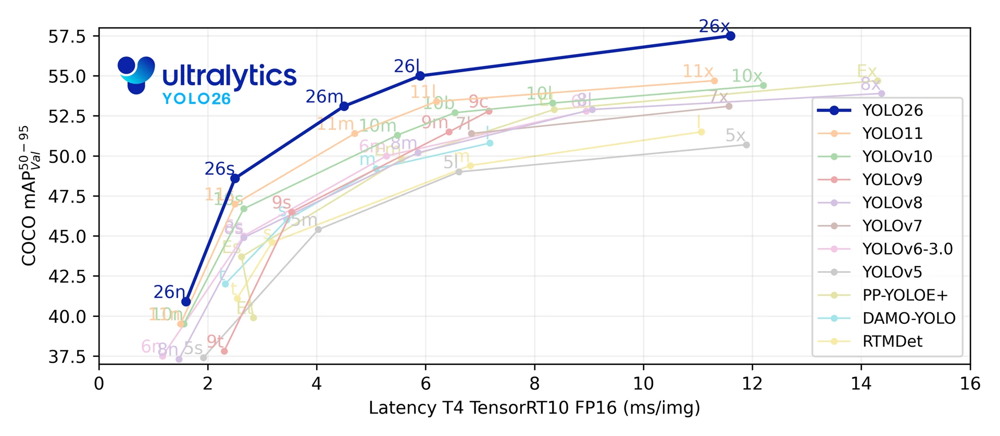
이미지 해설. 가로축은 지연 시간(Latency T4 TensorRT10 FP16, ms/img — 한 장 처리에 걸리는 밀리초), 세로축은 COCO mAP50-95(탐지 정확도 점수, 높을수록 좋음)입니다. 굵은 파란 선이 YOLO26(n·s·m·l·x 크기별 점 5개)이고, 나머지 흐린 선은 YOLO11·v10·v9·v8·v7·v6·v5·PP-YOLOE+·DAMO-YOLO·RTMDet입니다. 왼쪽(빠름) + 위쪽(정확) 일수록 좋은 모델이며, 파란 선이 다른 선들보다 위에 있다는 것이 이 그림의 주장입니다. 단, 이 결과는 "T4 GPU + TensorRT10 + FP16"이라는 고정 측정 조건에서의 COCO 점수입니다. 다른 장치나 신분증 같은 새 과제의 성능을 보장하지 않습니다.
YOLO는 기본적으로 신분증을 탐지하지 못한다
YOLO는 기본적으로 신분증을 탐지하지 못합니다. YOLO는 COCO(Common Objects in Context) 데이터셋으로 훈련되었으며, 91가지 종류의 객체를 탐지할 수 있지만 신분증과 여권은 포함되어 있지 않습니다. 하지만 걱정하지 마십시오! 잘 레이블링된 데이터셋이 준비되어 있다면, 약간의 파인튜닝만으로도 YOLOv8이 신분증을 탐지하도록 훈련할 수 있습니다. 링크: [https://cocodataset.org/#home�6�
⚠ 바로잡기: COCO로 사전학습한 일반 YOLO 탐지 모델의 클래스는 80개입니다. 공식 Ultralytics 설정(coco.yaml)에는 0~79번 80개 이름이 있고 그 안에 신분증·여권은 없습니다. "91"은 COCO 원 논문 초록에 나오는 범주 수 표현에서 온 숫자이며, 실제 사전학습 탐지에 쓰이는 클래스 수와는 다릅니다. 신분증이 목록에 없다는 결론은 같습니다.
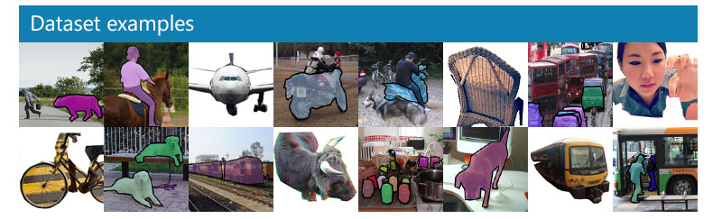
이미지 해설. 파란 제목줄 "Dataset examples" 아래에 일상 사진 열네 장이 있고 각 사진의 물체(말 탄 사람, 비행기, 자전거, 버스, 병과 컵 등) 윤곽이 색으로 칠해져 있습니다. 즉 COCO의 레이블이 이런 식("이 윤곽이 사람/자전거")이라는 데이터셋 소개 그림입니다. 이 사진들에 신분증은 없고, 이 그림이 YOLO가 신분증을 찾은 결과를 보여 주는 것도 아닙니다.
YOLOv8로 훈련하는 이유와 평가 준비
YOLOv8 훈련에 사용할 라이브러리에는 평가 로직도 포함되어 있습니다. 훈련, 테스트, 검증에 충분한 이미지를 따로 확보해 둘 것입니다. 본문 아래 다섯 항목은 YOLOv8 소개입니다(그대로):
- 2023년, Ultralytics에서 출시한 YOLOv8은 이때까지의 YOLO 모델 중 가장 강력하고 유연한 성능을 제공한다.
- 다양한 작업 지원: YOLOv8은 객체 감지, 인스턴스 분할, 포즈 추정, 이미지 분류 등의 다양한 작업을 수행할 수 있도록 설계되었다.
- 배포 유연성: YOLOv8은 ONNX, TensorRT 등 다양한 배포 옵션을 지원하며, 여러 환경에서 최적의 성능을 낼 수 있도록 한다.
- 최첨단 성능: YOLOv8은 최신 기술과 최적화를 통해 이전 버전보다 더 빠르고 정확한 성능을 제공하며, 실시간 감지 작업에서도 높은 정확도를 유지할 수 있다.
- YOLOv8은 속도와 정확성 모두에서 최첨단 기술을 반영한 모델로, 다양한 딥러닝 작업에 폭넓게 사용될 수 있다.
📝 보완: YOLOv8은 2023년 1월 10일 출시된 것으로 확인되며, 탐지·분할·포즈·분류와 내보내기(ONNX·TensorRT 등) 지원도 공식 문서로 확인됩니다. 다만 "가장 강력", "최첨단"은 출시 당시의 상대 평가입니다. 지금 모든 환경에서 가장 좋다는 뜻이 아닙니다(위 그래프에서도 이후 모델이 앞섭니다). 내보낸 모델은 대상 장치별로 성능을 따로 측정해야 합니다.
훈련/테스트/검증 이미지를 따로 확보하라는 말은 앞서 본 "데이터셋 나누기"(예: 70/15/15)와 같은 맥락입니다. 같은 사진이 훈련과 평가에 동시에 들어가면 점수가 부풀려집니다.
[보강] 참고용 맛보기 코드입니다. 책의 코드가 아니며, 라이브러리 설치(pip install ultralytics)와 신분증 레이블 데이터가 준비되어 있다고 가정합니다.
from ultralytics import YOLO
model = YOLO("yolov8n.pt") # COCO로 사전학습된 가장 작은 YOLOv8 가중치
model.train(data="id_cards.yaml", epochs=50, imgsz=640) # 내 신분증 데이터로 파인튜닝
metrics = model.val() # 검증용 이미지로 평가
🔧 본인 환경에 맞게 교체:id_cards.yaml은 본인 데이터셋의 경로와 클래스 이름(예:id_card)을 적은 데이터 설정 파일입니다.epochs(반복 횟수),imgsz(입력 이미지 크기), 가중치 파일명(yolov8n.pt)은 GPU 사양과 정확도·속도 요구에 맞게 바꾸세요. 실행하면 훈련 진행 로그가 출력되고 결과 가중치와 그래프가 보통runs/detect/train…폴더에 저장됩니다(폴더 이름은 실행 횟수에 따라 달라집니다).
추천 프로젝트와 RAG 프로젝트에서의 모델링 계획
본문 세 가지 계획입니다.
- 추천 프로젝트에서는 간단한 베이스라인 추천 모델부터 시작하여 훈련 서브셋으로 훈련합니다. 노트북에서 시작한 뒤, 재훈련을 위한 파이프라인을 구축하고 모델과 실험 결과를 추적 서버(tracking server) 에 기록합니다.
- 모니터링 이후 이 단계로 돌아와, 더 복잡한 모델을 운영 중인 모델과 비교 평가할 것입니다. 여기서는 아키텍처 간 평가 기준을 자세히 살펴보고, 부정적인 영향을 최소화하면서 새로운 모델을 배포하고 테스트하는 방법을 다룹니다. 지표와 평가 기준은 비즈니스 이해관계자와의 소통에 활용할 수 있는 보고 프레임워크의 일부로도 구성될 것입니다.
- 마지막으로 RAG 파이프라인에서는 LLM 애플리케이션에 특화된 임베딩 모델, 벡터 데이터베이스, 채팅 인터페이스와 같은 새로운 개념들을 추가합니다. 여기서 핵심은 MLOps의 핵심 개념이 동일하게 유지되며, 겉으로 보기에 서로 다른 애플리케이션 도메인에서도 재사용할 수 있다는 점입니다.
풀이
| 용어 | 쉬운 설명 | 비유·예시 |
|---|---|---|
| 베이스라인(baseline) | 복잡한 방법과 비교할 최소 기준 | 추천이라면 "가장 인기 있는 영화 순서대로 보여 주기" |
| 훈련 서브셋 | 전체 중 일부로 먼저 훈련 | 요리 맛보기용 작은 냄비 |
| 노트북 → 파이프라인 | 손으로 실험하던 것을 반복 실행 가능한 자동 절차로 | 집 요리 본문를 식당 매뉴얼로 |
| 추적 서버(tracking server) | 실험 설정·지표·모델을 모아 두는 공용 기록소 | 연구실 공용 실험 노트 |
| RAG | 질문과 관련된 문서를 먼저 찾아 모델에게 주고 답을 만들게 하는 방식 (임베딩 모델 + 벡터 DB + 채팅 UI) | 오픈북 시험 |
📝 보완: RAG는 우리가 모델을 직접 재훈련하지 않더라도, 문서·검색 인덱스·프롬프트·외부 모델 버전이 바뀌면 결과가 달라지므로 이것들의 버전도 관리해야 합니다. MLOps의 원칙(버전·평가·배포·모니터링)이 그대로 쓰이는 이유입니다.
2.1.4 모델 평가 — 올바른 지표 고르기
훈련 과정에서 테스트 성능이 우수한 모델을 확보했다면, 그 모델이 실제 목표 도메인에서도 잘 동작하는지 확인하는 것이 중요합니다. 여기서 올바른 문제 정의와 적절한 지표 선택의 중요성이 부각됩니다. 지표를 선택할 때는 일부 지표가 특정 도메인에 더 적합하며, 클래스 불균형이나 드리프트 같은 데이터 요인에 크게 영향받을 수 있다는 점에 염두에 두십시오.
- 분류 및 탐지 문제에서는 정밀도(precision), 재현율(recall), F1 점수(F1 score) 가 중요할 수 있습니다.
- 회귀 문제에는 평균 절대 오차(mean absolute error, MAE), 평균 제곱 오차(mean squared error, MSE) 등이 적합합니다.
- 분류 문제에서조차 목표 도메인에 따라 정밀도와 재현율에 대한 요구사항이 달라질 수 있습니다. 본문의 예: 의료 분야에서는 피해를 최소화하기 위해 위양성률(false positive rate) 과 정밀도에 엄격한 기준을 적용하는 반면, 금융 분야 실무자들은 이벤트를 놓쳐 발생하는 기관 손실을 줄이기 위해 재현율을 중시하기도 합니다.
- 따라서 평가를 위한 지표를 선택하고 처음에 설정한 요구사항 및 비즈니스 목표와 연계하는 과정에서 그 의미와 트레이드오프를 철저히 이해하는 것이 필수적입니다.
⚠ 바로잡기: "의료는 정밀도, 금융은 재현율"을 고정 규칙으로 외우면 안 됩니다. 본문도 "…하기도 합니다"라고 완화해 쓰며, 바로 아래 토글은 암 진단처럼 놓치면 안 되는 경우 재현율을 중시하는 예를 듭니다(같은 의료인데 반대). 어떤 지표가 중요한지는 업종이 아니라 사용 단계(선별검사냐 확진이냐, 자동 차단이냐 추가 심사냐)와 오판의 피해가 정합니다.
📝 보완: [보강] 이 단락에 나오는 MAE는 오차의 절댓값 평균, MSE는 오차를 제곱한 평균입니다. 예: 영화 평점 실제 4점·3점·5점을 모델이 3.5·3.0·4.0 으로 예측했다면 오차는 0.5·0·1.0 이므로 MAE = (0.5+0+1.0)/3 = 0.5, MSE = (0.25+0+1.0)/3 ≈ 0.417 입니다. MSE는 큰 오차를 더 크게 벌줍니다. 또한 탐지 문제에서는 위치까지 맞았는지 보는 mAP·IoU 같은 지표를 함께 씁니다.
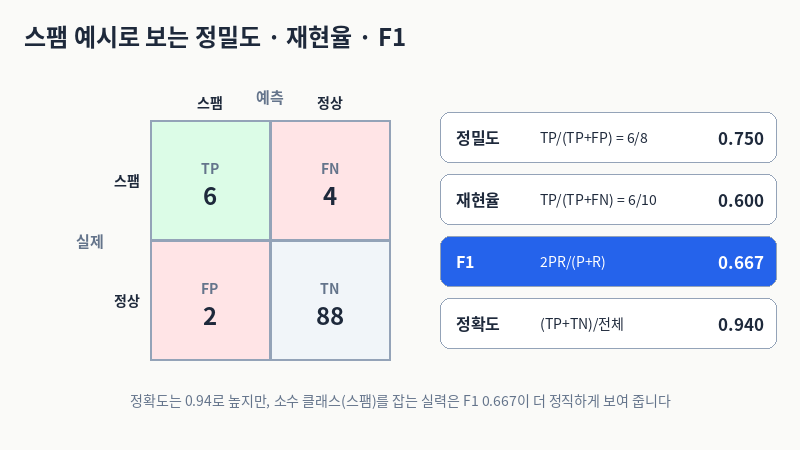
이미지 해설. 제목 "스팸 예시로 보는 정밀도·재현율·F1". 왼쪽의 2×2 칸은 가로가 예측(스팸/정상), 세로가 실제(스팸/정상)입니다. 초록 칸 TP=6(스팸을 스팸이라 맞힘), 분홍 칸 FN=4(스팸을 놓침), 분홍 칸 FP=2(정상을 스팸이라 오판), 회색 칸 TN=88(정상을 정상으로 맞힘). 오른쪽 네 카드는 정밀도 6/8=0.750, 재현율 6/10=0.600, F1 0.667, 정확도 0.940. 아래 설명: "정확도는 0.94로 높지만, 소수 클래스(스팸)를 잡는 실력은 F1 0.667이 더 정직하게 보여 줍니다." 네 칸을 먼저 세면 수식이 쉬워집니다.
▶ F1 score 설명 : 정밀도(Precision)와 재현율(Recall)을 하나의 숫자로 합친 분류 지표
# F1 score는 정밀도(Precision)와 재현율(Recall)을 하나의 숫자로 합친 분류 지표입니다. 0~1 범위이고 클수록 좋습니다.
예시(제가 만든 숫자): 메일 100통 중 진짜 스팸이 10통입니다. 모델이 8통을 스팸이라 판정했고 그중 6통이 진짜였습니다.
- TP=6: 맞힌 스팸
- FP=2: 멀쩡한 메일을 스팸으로 오판
- FN=4: 놓친 스팸
- TN=88: 정상을 정상으로 맞힘
| 지표 | 식 | 뜻 | 예시 값 |
|-------------------|----------------|----------------------------------|---------------|
| 정밀도(Precision) | TP / (TP+FP) | 스팸이라 한 것 중 진짜 스팸 비율 | 6/8 = 0.75 |
| 재현율(Recall) | TP / (TP+FN) | 진짜 스팸 중 찾아낸 비율 | 6/10 = 0.60 |
| F1 | 2*P*R / (P+R) | 정밀도와 재현율의 조화평균 | 0.667 |
| 정확도(Accuracy) | (TP+TN) / 전체 | 전체 중 맞힌 비율 | 94/100 = 0.94 |
# 왜 조화평균인가: 산술평균은 한쪽만 높아도 후하게 나옵니다.
모든 메일을 스팸이라고 찍으면 재현율 1.0, 정밀도 0.1이라 산술평균은 0.55지만 F1은 0.18입니다.
한쪽이 낮으면 F1도 크게 떨어집니다.
# 왜 정확도만으로는 부족한가: 스팸이 10퍼센트뿐이면 전부 정상이라고 찍어도 정확도가 90퍼센트입니다.
클래스가 불균형할 때 소수 클래스를 얼마나 잘 잡는지는 F1이 더 잘 보여줍니다.
# 주의할 점
- 정밀도와 재현율은 서로 맞바꾸는 관계입니다(판정 임계값 조절). 암 진단처럼 놓치면 안 되면 재현율을, 스팸 필터처럼 오탐이 싫으면 정밀도를 더 중시할 수 있습니다.
- 다중 클래스에서는 macro/micro 같은 평균 방식을 정해야 합니다.
줄별 풀이와 계산 확인
| 단계 | 계산 | 결과 |
|---|---|---|
| 네 칸 합계 | 6 + 2 + 4 + 88 | 100 (메일 100통과 일치) |
| 정밀도 | 6 ÷ (6+2) = 6/8 | 0.75 — "스팸이라 한 8통 중 진짜가 6통" |
| 재현율 | 6 ÷ (6+4) = 6/10 | 0.60 — "진짜 스팸 10통 중 6통을 찾음" |
| F1 | 2 × 0.75 × 0.60 ÷ (0.75+0.60) = 0.9 ÷ 1.35 | 약 0.667 |
| 정확도 | (6+88) ÷ 100 | 0.94 |
| [보강] 위양성률 FPR | FP ÷ (FP+TN) = 2 ÷ 90 | 약 0.0222 — "실제 정상 메일 중 잘못 걸러진 비율" |
- 조화평균이란? 역수들의 평균의 역수입니다. 두 수 중 작은 쪽에 끌려가는 성질이 있어, 한쪽만 높아서는 높은 점수를 못 받습니다.
- 반례 확인 (모두 스팸이라고 찍기): 재현율 1.0, 정밀도 10/100 = 0.1. 산술평균은 (1.0+0.1)/2 = 0.55 지만 F1 = 2×0.1×1.0 ÷ 1.1 ≈ 0.182 로 낮습니다.
- 반례 확인 (모두 정상이라고 찍기): 정확도 90/100 = 90%인데 스팸 재현율은 0입니다. 정확도는 불균형일 때 속기 쉽습니다.
- F1도 만능은 아닙니다. 진짜 정상(TN)을 전혀 보지 않고, 오판의 실제 금전·사람 피해를 반영하지 않습니다. 다중 클래스에서는 평균 방식(macro/micro), 어떤 클래스를 "양성"으로 볼지, 판정 임계값을 명시해야 합니다.
잡은 스팸 TP (0~10): 6
멀쩡한 메일을 스팸으로 오판 FP (0~90): 2
TP=6 FN=4 FP=2 TN=88정밀도 0.750 · 재현율 0.600 · F1 0.667 · 정확도 0.940
TP를 0으로, FP를 0으로 두고 정확도가 얼마나 높게 나오는지 확인해 보세요. 스팸을 하나도 못 잡아도 정확도는 0.90입니다.
스팸 판정 기준(0.1=아주 쉽게 스팸 판정, 0.9=아주 확실할 때만): 기준 = 0.5
정밀도 0.60
기준을 올리면 판정이 신중해져 정밀도는 오르고 재현율은 떨어집니다. 암 진단처럼 놓치면 안 되는 일은 기준을 낮춰 재현율을, 스팸 필터처럼 오탐이 싫은 일은 기준을 높여 정밀도를 더 봅니다.
홀드아웃 데이터셋과 자동 평가
공식적인 환경에서 모델 평가는 별도의 홀드아웃(holdout) 데이터셋에서 자동으로 수행됩니다. 이 데이터셋은 프로덕션 데이터의 다양성, 분포, 특성을 반영하도록 세심하게 구성되며, 데이터 누수(leakage) 방지에도 각별한 주의를 기울입니다. 평가를 자동화하면 사람의 실수로 인한 변동성이 제거되고 결과의 반복성과 재현성이 보장됩니다. 홀드아웃 데이터셋 역시 시간이 지남에 따라 발전하며, 리니지, 버전 관리, 추적 측면에서 훈련 데이터셋에 준하는 엄격함으로 관리됩니다. 어떤 이유로든 테스트/훈련/홀드아웃 데이터 분할이 변경되면 데이터 누수 문제가 발생하여 재평가 및 재훈련 루프가 필요해집니다.
▶ 홀드아웃 데이터셋 설명
# 홀드아웃 데이터셋은 학습에 절대 쓰지 않고 따로 빼둔 최종 시험지입니다. 원문은 이 시험지를 어떻게 다뤄야 하는지 네 가지를 말합니다.
| 요건 | 뜻 | 어기면 |
|-------------------------|----------------------------------------------|-------------------------------------|
| 운영 데이터와 닮게 구성 | 다양성·분포·특성이 실제 서비스 데이터와 비슷 | 시험 점수는 좋은데 실제 성능은 나쁨 |
| 누수 방지 | 학습 데이터가 홀드아웃에 섞이지 않게 함 | 점수가 부풀려짐 |
| 자동 평가 | 사람 손 없이 같은 절차로 실행 | 실수·편차로 결과가 흔들림 |
| 버전·리니지 관리 | 홀드아웃도 학습 데이터만큼 엄격히 기록 | 어떤 시험지로 쟀는지 알 수 없음 |
# 자동 평가의 이점: 사람 실수가 사라지고, 같은 모델이면 같은 점수가 나와 반복·재현이 가능합니다(Q15의 재현성과 같은 맥락).
# 홀드아웃도 진화한다: 운영 데이터의 경향이 바뀌면(데이터 드리프트) 시험지도 갱신해야 합니다.
이때 학습 데이터처럼 버전을 붙여 기록해야 "어떤 시험지로 쟀는지"를 알 수 있습니다(Q12).
# 분할이 바뀌면 누수가 생긴다: 마지막 문장의 뜻입니다. 예를 들어 분할을 다시 했더니 예전 시험지의 문제 일부가 새 학습 데이터로 들어갔다고 합시다.
이미 답을 본 문제로 시험을 보는 셈이라 이전 평가 점수를 믿을 수 없습니다. 그래서 다시 학습하고 다시 평가하는 루프가 필요해집니다.
이를 피하려면 분할 규칙(시드, 기준)을 고정하고 버전으로 관리해야 합니다.
풀이
- 홀드아웃(holdout): 훈련에 쓰지 않고 "따로 잡아 둔(hold out)" 자료. 이 장에서는 최종 시험지의 뜻입니다. 학습 중 점검용 검증 데이터와는 역할이 다르며, 최종 시험지를 반복해서 보며 모델을 고치면 시험지에 맞춰 외운 셈이 됩니다.
- 토글의 "(Q15)", "(Q12)"는 글쓴이가 앞쪽에 달아 둔 질문 번호 표기이며 여기서는 "재현성", "버전 기록"의 앞선 설명을 가리킵니다.
- 4가지 요건 표: 시험지가 ① 실제 서비스 데이터와 닮아야 하고 ② 훈련 데이터와 섞이면 안 되며 ③ 사람 손 없이 같은 절차로 채점되고 ④ 어떤 버전의 시험지였는지 기록돼야 합니다.
- 분할이 바뀌면: 아래 예로 이해하세요. 1월에 사진 1,000장을 훈련 700·시험 300으로 나눴습니다. 3월에 다시 섞어 나누면 1월의 시험용 사진 일부가 새 훈련용으로 들어가 버립니다. 이 사진으로 모델을 훈련한 뒤 다시 시험 점수를 내면 "답을 이미 본 문제"를 푼 셈이라 점수가 부풀려집니다.
⚠ 바로잡기: 본문의 "분할이 변경되면 데이터 누수가 발생한다"는 일반화가 과합니다. 분할을 바꾸는 것 자체가 곧 누수는 아닙니다. 이전에 훈련·튜닝에 노출된 샘플이 새 평가용에 들어가거나, 평가 결과를 보고 반복해서 모델을 고치면 문제가 됩니다. 분할을 바꿨다면 새 분할의 훈련·선택·평가 이력을 확인하고, 필요하면 재평가·재훈련 루프를 돌린다고 읽으세요. 또 "평가를 자동화하면 사람 실수가 제거된다"도 사람 실수를 줄여 줄 뿐, 난수·장치·라이브러리 버전 차이까지 없애지는 않습니다.
📝 보완: "홀드아웃"이라는 말은 책에 따라 검증용·테스트용 보류 자료를 넓게 가리키기도 합니다. 이 장에서는 "최종 평가용"이라는 뜻으로 쓰입니다. 그리고 이 문서 앞쪽 데이터 수집 절의 "누적 유입(v1→v2→v3)" 그림처럼 데이터가 늘어날 때에도 버전마다 훈련/검증/테스트 분할 규칙(시드·기준)을 기록해 두어야 비교가 가능합니다.
flowchart LR D["수집한 데이터 버전"] --> SP["분할 규칙 고정 · 시드와 기준 기록"] SP --> TR["훈련용"] SP --> VA["검증용"] SP --> HO["홀드아웃 최종 시험지"] TR --> M["모델 훈련"] M --> EV["자동 평가"] HO --> EV EV --> R["결과 기록 · 버전과 리니지 연결"]
위 그림은 "분할 규칙을 먼저 고정하고, 홀드아웃은 훈련 쪽으로 가지 않으며, 평가 결과는 어떤 시험지 버전으로 쟀는지와 함께 기록한다"는 흐름입니다.
오류 분석·견고성 검증·해석 가능성
모델 오류에 대한 정밀 분석
평가는 모델 오류에 대한 정밀 분석이 이루어지는 단계이기도 합니다. 오분류된 샘플을 면밀히 검토하고 그 안의 패턴을 분석하며, 모델의 시스템적 문제와 편향을 식별하는 것이 중요합니다. 이러한 분석 결과는 데이터 수집 컴포넌트로 다시 피드백됩니다. 또한 이 단계에서 모델의 민감도(sensitivity)와 견고성(robustness) 도 검증하며, 적대적 테스트(adversarial test) 와 에지 케이스(edge case) 시뮬레이션 같은 접근 방식이 향후 발생 가능한 모델 오류를 예방하는 데 도움이 됩니다.
- 오류 분석 예: 신분증 탐지가 실패한 사진을 모아 보니 대부분 "문서 모서리가 화면에서 잘린 사진"이었다면, 그런 사진을 더 수집·레이블링하도록 데이터 수집 단계로 피드백합니다.
- 견고성: 입력이 조금 달라져도(밝기, 각도, 잡음) 결과가 크게 흔들리지 않는 성질.
- 적대적 테스트: 모델을 일부러 속이려는 입력(혹은 악의적 입력)을 넣어 보는 시험. 에지 케이스: 드물지만 일어날 수 있는 극단적 상황.
- 이 문맥의 "민감도"는 입력 변화에 대한 반응 정도를 뜻하며, 분류 지표 recall(재현율)의 다른 이름인 "민감도(sensitivity)"와 다른 의미이니 구별하세요.
평가는 다단계 프로세스
이처럼 평가는 컴포넌트, 코드, 데이터를 아우르는 다단계 프로세스인 경우가 많습니다. 이 프로세스는 시간이 지남에 따라 발전하며, 평가의 거의 모든 하위 컴포넌트가 이전 단계에 영향을 미칩니다. 이러한 복잡성을 관리하기 위해 자동화된 파이프라인과 결과의 중앙 집중식 추적을 강력히 권장합니다. 평가 결과에 대한 적절한 문서화와 가시성을 확보하면 작업 중복을 방지하고 향후 비교 및 개선을 가능하게 합니다.
해석 가능성 (본문 주의 상자)
💡 👉🏻 일부 조직은 모델을 평가하는 과정에서 해석 가능성(interpretability) 을 필수 요건으로 적용합니다. 모델을 해석할 때는 피처 중요도, 결정 경계(decision boundary), 활성화 계층(activation layer) 등 모델의 컴포넌트를 검사하고 시각화하거나, 설명 가능한 AI(explainable AI) 기법인 LIME(Local Interpretable Model-agnostic Explanations) 와 SHAP(SHapley Additive exPlanations) 를 활용하여 모델의 동작 방식과 내재된 한계를 더 깊이 이해합니다. 이는 강력한 도구이지만 구현하기가 복잡합니다. 처음 시작하는 단계에서는 해석 가능성을 실제로 도입하거나 향후 계획을 반영하기 전에, 자신의 요구사항과 비교하여 그 이점을 신중하게 평가해 보시길 권장합니다.
| 용어 | 쉬운 설명 |
|---|---|
| 피처 중요도 | 예측에 어떤 입력 특징이 얼마나 영향을 줬는지 점수로 나타낸 것 |
| 결정 경계 | 모델이 "A냐 B냐"를 가르는 경계선 |
| 활성화 계층 | 신경망 중간 층이 입력에 어떻게 반응하는지 |
| LIME | 한 건의 예측 주변을 단순한 모델로 근사해 "이 예측에 어떤 특징이 영향을 줬나"를 설명 |
| SHAP | 게임 이론의 샤플리 값에 기반해, 각 특징이 그 예측에 얼마나 기여했는지 계산 |
📝 보완: LIME·SHAP 설명이 정확도나 공정성, 인과관계를 자동으로 증명하지는 않습니다. 설명 결과 자체도 해석이 필요한 근거일 뿐입니다. 본문 조언대로, 도입 여부는 요구사항과 구현 비용을 비교해 정하세요. (본문의 "Shaply"는 Lloyd Shapley의 이름에서 온 "Shapley"가 맞는 철자입니다.)
2.1.5 배포 — 모델을 서비스에 올리기
초기 훈련된 모델이 준비되면, 다음 단계는 이를 프로덕션 환경에 배포하여 비즈니스 가치를 창출하기 시작하는 것입니다. 일반적인 배포 방법은 다음과 같습니다.
- 마이크로서비스 아키텍처에 적합한 엔드포인트 생성: 이 구성에서는 모델이 API 계층 하위에서 동작하며, API 계층이 요청을 처리합니다.
- 특정 하드웨어 환경 또는 에지 디바이스로의 배포: 이 배포 방식은 API 엔드포인트만큼 널리 사용되지는 않지만, 모델이 디바이스상에서 인지(perception)와 같은 중요한 작업을 수행해야 하는 자동차, 보안 장비, 로보틱스 등의 분야에서는 특정 하드웨어로의 배포가 매우 중요합니다.
| 방식 | 비유 | 요청이 흐르는 길 |
|---|---|---|
| 엔드포인트(API) | 전화로 주문받는 중앙 주방 | 사용자 앱 → API 계층 → 모델 → 응답 |
| 에지 디바이스 | 가게마다 비치한 작은 주방 | 센서/카메라 → 기기 안의 모델 → 즉시 판단 |
최적화 단계와 "최종 버전으로 다시 시험"
이 두 방법은 모두 모델 성능과 지연 시간(latency)에 초점을 맞추기 때문에, 모델을 전달하기 전에 훈련된 원본 모델을 배포 환경에 맞게 특정 최적화가 적용된 모델로 변환하는 최적화 단계를 일반적으로 거칩니다. 이러한 맥락에서, 실제 환경의 결과가 측정된 성능과 일치하도록 최종 버전(최적화된 버전)을 대상으로 모델 성능 테스트를 수행해야 합니다. 예를 들어 GPU에서 훈련할 때는 모델이 요구사항을 충족하는 것처럼 보일 수 있지만, 동일한 모델을 임베디드 장치에 배포하면 가속기의 동작 방식이나 장치 툴체인이 양자화(quantization) 와 같은 연산을 처리하는 방식에 따라 성능이 크게 달라질 수 있습니다.
- 지연 시간(latency): 요청 한 건을 처리하는 데 걸리는 시간(ms).
- 양자화: 숫자를 더 적은 비트로 표현해(예: 32비트 → 8비트) 모델을 작고 빠르게 만드는 기법. 대신 정확도가 조금 변할 수 있어서 변환 후 다시 측정해야 합니다.
- 최종 버전 재평가: 실제로 배포하는 파일을 대상으로, 실제 런타임·장치·정밀도·메모리 조건에서 다시 시험합니다.
📝 보완: 최적화(양자화·ONNX 같은 변환)는 대상과 요구사항에 따라 선택하는 것이지 모든 경우의 필수 단계가 아닙니다. 본문도 "일반적으로"라고 썼습니다. 또 ONNX는 모델 교환 형식이며, 변환만으로 반드시 가벼워지지는 않습니다.
변환 방식을 고르세요:
스테이징과 프로덕션 — 2단계 배포
배포는 스테이징과 프로덕션으로 나뉘는 경우가 많으며, 스테이징의 모델은 평가 모드로 동작하면서 프로덕션의 모델과 비교해 효과를 검증합니다. 즉 배포는 2단계 프로세스로, 초기 모델 배포는 스테이징 환경에 이루어지고 평가가 완료되면 모델이 자동으로 프로덕션으로 이동합니다. 견고한 모델 버전 관리와 리니지는 모든 모델 전환이 기록되고 이전 버전으로의 롤백이 프로덕션의 모델을 변경하는 것만큼 간단하게 이루어지도록 보장함으로써 이 프로세스를 지원합니다.
flowchart LR T["훈련된 모델 v3"] --> ST["스테이징 환경 · 평가 모드"] ST -->|"프로덕션 v2와 비교 통과"| PR["프로덕션 승격 v3"] ST -->|"기준 미달"| X["승격 중단 · 수정"] PR -->|"문제 발견"| RB["롤백 v2로 복귀"]
- 스테이징(staging): 실제 서비스 직전의 "리허설 무대". 프로덕션(production): 실제 사용자가 쓰는 운영 환경.
- 롤백이 쉬우려면 어느 버전이 언제 어디에 올라갔는지가 기록되어 있어야 합니다(앞서 본 버전 관리·리니지).
📝 보완: 책은 평가가 끝나면 "자동으로" 프로덕션으로 이동한다고 쓰지만, 자동 승격을 쓸지 사람 승인을 거칠지는 조직의 정책에 달려 있습니다. 롤백할 때도 이전 모델 파일만 되돌리면 안 되고, 그 모델이 기대하는 전처리·서비스 코드·피처 형식이 호환되는지도 확인해야 합니다.
이 책의 배포 도구: BentoML, Yatai, Chainlit
이 책의 처음 두 프로젝트(신분증 탐지 및 영화 추천기)에서는 벤토ML(BentoML) 을 사용해 HTTP 엔드포인트를 통해 모델을 서빙합니다. 그런 다음 이를 도커 컨테이너로 패키징하고, 벤토ML과 같은 팀이 만든 모델 배포 플랫폼인 야타이(Yatai) 를 사용해 배포합니다. 마지막으로 LLM 프로젝트에서는 체인릿(Chainlit) 을 사용해 RAG 애플리케이션에 친숙한 채팅 인터페이스를 제공합니다.
| 도구 | 역할 | 쉬운 설명 |
|---|---|---|
| BentoML | 모델을 HTTP API로 서빙하는 프레임워크 | 모델을 "주문받는 창구"로 만들어 줌 |
| Docker 컨테이너 | 실행 환경까지 한 상자에 포장 | 도시락통: 어디서 열어도 같은 구성 |
| Yatai | 쿠버네티스 위에서 BentoML 서비스를 배포·관리하는 플랫폼 | 도시락을 여러 매장에 배송·관리하는 물류 시스템 |
| Chainlit | LLM/RAG 앱용 채팅 화면을 쉽게 만드는 도구 | 챗봇 창구 화면 (공식 문서 접속이 막혀 기능은 추가로 확인하지 못함) |
⚠ 바로잡기: 조사 시점 기준으로 Yatai의 GitHub 저장소는 2026년 6월 11일 보관(archived) 처리되어 읽기 전용입니다. 책의 실습 스택으로 이해하되 새 프로젝트의 무조건적 권장 도구로 삼지 마세요. 대안 경로는 확인 못함(현재 BentoML 공식 문서를 확인하세요). 또 BentoML도 버전에 따라 구조(예: Runner 개념)가 달라졌으므로 사용하는 버전의 공식 문서를 기준으로 하세요.
🔧 본인 환경에 맞게 교체: 이 책의 실습을 따라 할 때 BentoML 버전, 컨테이너 레지스트리 주소, 쿠버네티스 클러스터 접속 정보, 서비스 포트는 모두 본인 환경 값으로 바꿔야 합니다. 접속 토큰이나 비밀번호는 문서·코드에 직접 쓰지 말고 <YOUR_TOKEN> 같은 자리표시자로 두고 환경 변수/비밀 저장소로 관리하세요.
배포 후에도 일은 끝나지 않는다 — 프로메테우스 지표
그러나 모델 배포는 여기서 끝나지 않습니다. 프로덕션의 모델은 비즈니스 가치를 제공하는지 확인하기 위해 반드시 모니터링되어야 합니다. 모델이 운영 기간 동안 수행하는 모든 예측을 평가할 수는 없으므로, 벤토ML로 구축된 모델 서비스가 기본적으로 몇 가지 프로메테우스(Prometheus) 지표를 노출하는 기능에 의존할 수 있습니다. 여기에는 초당 요청 수(RPS) 와 같은 성능 지표는 물론, HTTP 응답 코드를 추적하는 지표도 포함됩니다. 마지막으로 배치 처리(batching), 카나리 배포(canary deployment), A/B 테스트와 같은 개념들을 살펴봅니다.
- 프로메테우스: 서비스가 내놓는 숫자 지표(요청 수, 지연, 응답 코드)를 주기적으로 긁어 모아 저장·그래프로 보는 모니터링 도구. BentoML 서비스는 보통
/metrics주소로 이 지표를 노출합니다. - RPS(requests per second): 초당 요청 수. HTTP 응답 코드: 200(성공), 4xx(요청 문제), 5xx(서버 문제).
- 배치 처리: 여러 요청을 묶어 한 번에 모델에 넣어 처리량을 높이는 방식.
- 카나리 배포: 새 모델을 일부 트래픽(예: 5%)에만 먼저 열어 위험을 제한하는 방식. A/B 테스트: 두 모델을 나눠 보여 주고 어느 쪽 효과가 좋은지 비교하는 실험. 둘은 같은 의미가 아닙니다.
📝 보완: RPS·응답 코드가 정상이어도 예측이 맞다는 뜻은 아닙니다. 서버는 건강하게 틀린 답을 내놓을 수 있어, 다음 절에서 다루는 데이터·성능·오류 모니터링이 따로 필요합니다. (이 책의 뒤쪽 장에서 자세히 다루는 주제이므로 여기서는 개념 소개에 그칩니다.)
2.1.6 모니터링 — 배포한 모델을 계속 지켜보기
모델 배포는 모델이 사용자 요청을 처리하고 비즈니스 가치를 창출할 수 있도록 합니다. 그러나 모델이 지속적으로 높은 성능을 유지하는지 확인하고, 하위 지표에서 이상이 발생할 경우 즉시 감지하여 수정하는 것이 중요합니다. 예상할 수 있듯이, 모델의 잘못된 예측은 비즈니스에 실질적인 장애를 초래하거나 심각한 손해를 끼칠 수도 있습니다.
모델 모니터링은 다양한 지표, 데이터 이상 징후, 모델 성능을 추적함으로써 모델이 프로덕션 환경에서 의도한 대로 동작하는지 보장하는 것을 목표로 합니다. 입력 데이터의 변화, 개념 드리프트(concept drift), 하드웨어 또는 소프트웨어 장애로 인해 모델 성능이 시간이 지남에 따라 달라질 수 있기 때문에 이 단계는 매우 중요합니다. 모델을 모니터링함으로써 문제를 즉시 탐지하고 이를 해결하기 위한 조치를 취할 수 있습니다. 모델 모니터링에는 다음과 같은 유형이 있습니다.
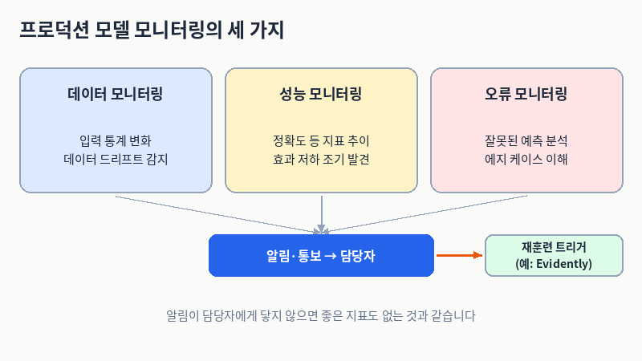
이미지 해설. 제목 "프로덕션 모델 모니터링의 세 가지". 위쪽 세 카드: 파랑 데이터 모니터링("입력 통계 변화, 데이터 드리프트 감지"), 노랑 성능 모니터링("정확도 등 지표 추이, 효과 저하 조기 발견"), 분홍 오류 모니터링("잘못된 예측 분석, 에지 케이스 이해"). 세 카드에서 화살표가 가운데 파란 상자 "알림·통보 → 담당자"로 모이고, 거기서 주황 화살표가 초록 "재훈련 트리거(예: Evidently)"로 이어집니다. 맨 아래: "알림이 담당자에게 닿지 않으면 좋은 지표도 없는 것과 같습니다." 드리프트 경고가 곧바로 재배포 명령은 아니며, 담당자의 조사·검증을 거쳐 대응한다는 뜻으로 읽으세요.
세 가지 모니터링
- 데이터 모니터링: 이 유형의 모니터링은 입력 데이터의 통계적 특성을 평가하여 이상 징후를 식별하는 것을 의미합니다. 데이터 드리프트(data drift), 즉 입력 데이터의 변화는 모델이 프로덕션 환경의 데이터와 다른 데이터로 훈련되었기 때문에 문제가 되며, 이로 인해 예상치 못한 잘못된 예측이 발생할 수 있습니다. 유입되는 데이터를 모니터링하고 견고한 지표를 개발하는 것은 프로덕션 환경에서 모델 성능을 평가하는 데 핵심적인 역할을 합니다.
- 성능 모니터링: 프로덕션 환경에서 모델의 정확도와 예측 같은 성능 지표를 추적하면 모델의 효과가 높은 수준으로 유지되는지 확인할 수 있습니다. 이러한 지표를 시간에 걸쳐 모니터링함으로써 성능 문제를 조기에 파악하고 시정 조치를 취할 수 있습니다.
- 오류 모니터링: 모델에서 발생하는 잘못된 예측을 식별하고 오류를 이해하는 것은 시간이 지남에 따라 모델 성능을 개선하는 강력한 수단입니다. 오류를 분석하면 에지 케이스에서의 모델 동작을 더 깊이 이해할 수 있으며, 오류의 영향을 줄이거나 완전히 제거하기 위해 능동적으로 대처할 수 있습니다.
| 유형 | 무엇을 살피나 | 신분증 탐지 예 | 주의 |
|---|---|---|---|
| 데이터 | 입력의 통계·분포·유효성 | 새 스마트폰 기종 사진 비율이 늘었다 | 드리프트가 곧 성능 저하라는 확정은 아닙니다 |
| 성능 | 실제 예측 품질의 시간 추이 | 정답이 확인된 건에서 F1이 내려간다 | 정답(레이블)이 늦게 도착할 수 있어 지연됩니다 |
| 오류 | 틀린 예측과 그 패턴 | 문서 모서리가 잘리는 사진에서 실패가 몰린다 | 개인정보(신분증 이미지)를 그대로 기록하는 일과 관측 가능성 확보는 다릅니다 |
데이터 드리프트와 개념 드리프트
- 데이터 드리프트: 입력의 분포가 달라짐. 예: 신분증 사진이 학습 때는 밝은 실내 위주였는데 배포 후 어두운 야외 사진이 늘었다.
- 개념 드리프트: 입력과 정답 사이의 관계가 달라짐. 예: 같은 사양의 중고차인데 시장 상황이 바뀌어 가격이 오른 경우, 입력이 같아도 정답(가격)이 달라졌다.
학습 당시 "야간·어두운 사진" 비율은 10% 였다고 합시다. 운영 중 이 비율을 움직여 보세요: 현재 = 10%
경계값(5%p, 15%p)은 이 시연용 가상 값입니다. 실제 기준은 데이터 양·피처 수·업무 영향에 따라 팀이 정하며, 경보가 곧바로 자동 재배포를 뜻하지도 않습니다.
모니터링이 의존하는 구성 요소와 알림 시스템
모니터링은 머신러닝 루프 내 몇 가지 컴포넌트에 크게 의존합니다. 모델 버전 관리는 모델의 성능에 관한 중요한 맥락을 제공하고, 훈련이나 데이터셋의 문제를 이해하는 데 도움을 줍니다. 로깅 역시 에지 케이스 재현, 시스템 전반에 걸친 문제 조사, 특정 코드 변경으로 인해 발생하는 문제 추적에 도움이 되며, 이 모든 것은 장기간에 걸쳐 원인을 밝히기 매우 어려울 수 있습니다. 마지막으로, 로깅과 버전 관리를 함께 활용하면 규제 산업에서 중요한 문서화 수단이 됩니다.
모니터링 컴포넌트에서 중요한 부분 중 하나는 신뢰할 수 있는 알람 및 통보 시스템(alerting and notification system) 입니다. 최고의 지표를 갖추고 모두 기록하며 모델에 대한 상세한 리니지를 유지하더라도, 알림과 지표가 담당자에게 전달되지 않는다면 이 모든 것을 갖추지 않은 것과 결과적으로 다를 바가 없습니다. 따라서 신뢰할 수 있는 모니터링 시스템을 구축하는 것은, 변화하는 환경 속에서도 모델이 최적의 성능을 유지하고 실제 배포 환경에서 안정적으로 동작하도록 보장하는 핵심 요소입니다.
📝 보완: 알림은 담당자에게 닿는 것만으로 끝이 아니라 조사·대응 절차(누가, 무엇을 확인하고, 언제 재훈련·롤백을 결정하는가)가 있어야 합니다. 로그에 개인정보를 그대로 남기면 문제가 되므로 무엇을 기록할지 정해야 합니다.
이 책의 프로젝트와 Evidently
이 책의 프로젝트들은 드리프트의 개념과 우수한 모니터링 환경 구성의 중요성을 설명합니다. 이는 새로운 데이터, 대안적 모델, 모델 재훈련, 모델 비교를 통해 더욱 강화될 것입니다. 앞서 논의한 여러 도구를 활용하는 한편, 탐지된 드리프트에 대한 재훈련 실행을 식별하고 트리거하는 데 사용되는 에비던틀리(Evidently) 도구를 새롭게 소개합니다. 링크: [https://www.evidentlyai.com/�1�
- Evidently: 기준 데이터(참고용)와 현재 데이터의 분포를 비교하는 평가·리포트 도구.
⚠ 바로잡기: 책은 Evidently가 "재훈련 실행을 식별하고 트리거"하는 도구인 것처럼 읽히지만, Evidently는 기준 데이터와 현재 데이터를 비교해 드리프트 같은 변화를 탐지·보고하는 역할을 합니다. 그 결과를 읽어 재훈련을 시작할지는 전체 파이프라인과 운영 정책(승인 절차 포함)의 몫이며, 도구만 설치한다고 학습·배포가 자동 완성되지 않습니다. 또한 값이 비어 있는 결측의 증가는 분포 드리프트 검사에서 자동으로 잡히지 않을 수 있으므로 별도의 데이터 품질 검사도 함께 두어야 합니다. 그리고 드리프트 검정의 경계값(예: p값 0.05, PSI 0.25 등)은 보편적인 안전 기준이 아니라 설정 가능한 관행입니다.
2.1.7 유지보수, 업데이트, 검토 — 루프를 닫는 단계
유지보수, 업데이트, 검토로 구성된 마지막 컴포넌트는 머신러닝 루프를 효과적으로 마무리합니다. 이 단계에서는 모델 모니터링의 출력 결과를 활용하여 다음 작업을 수행합니다.
- 프로덕션 환경의 모델에서 발견된 문제점과 결함을 해결하기 위해 버그를 수정합니다.
- 특정 에지 케이스에 대해 모델을 훈련하고 성능을 향상하기 위한 데이터를 수집합니다.
- 데이터 드리프트에 대응하기 위해 데이터 수집 컴포넌트에 이를 알리고 새로운 모델을 재훈련합니다.
⚠ 바로잡기: 본문의 "데이터 드리피트"는 "데이터 드리프트"의 오타입니다.
유지보수는 루프 전체에 퍼져 있다
이 컴포넌트를 전체 루프에 걸쳐 분산되어 있는 것으로 바라보는 시각도 중요합니다. 지금까지 논의한 모든 컴포넌트는 자연스러운 수명주기의 일환으로 일정한 유지보수와 업데이트를 수반합니다. 예를 들어, 배포 컴포넌트는 프로덕션 환경의 모델을 최신 버전으로 교체하는 역할도 담당하기 때문에 유지보수 요소에 포함합니다. 마찬가지로, 데이터 수집 컴포넌트도 모니터링을 통해 감지된 개념 드리프트와 데이터 드리프트를 처리하기 위한 업데이트 요소를 갖습니다.
머신러닝 루프에 유지보수와 업데이트를 통합함으로써 조직은 머신러닝 모델이 변화하는 데이터 및 사용자 요구사항에 발맞춰 효과적이고 신뢰할 수 있는 상태를 유지하도록 보장할 수 있습니다. 정기적인 업데이트와 지속적인 모니터링을 통해 모델은 변화하는 환경에 적응하고 정확하며 가치 있는 인사이트를 제공할 수 있습니다.
MLOps 루프 한눈에 보기: 훈련 → 평가 → 배포 → 모니터링 → 재훈련
아래 그림은 이 절까지 본 단계를 한 고리로 이은 것입니다. 맨 오른쪽 "유지보수와 업데이트"는 별도의 한 칸이 아니라 모든 단계에서 일어난다는 본문의 시각을 점선으로 표현했습니다.
flowchart LR A["데이터 수집"] --> B["EDA"] B --> C["모델링과 훈련"] C --> D["평가 · 홀드아웃"] D --> E["배포 · 스테이징에서 프로덕션"] E --> F["모니터링 · 데이터 성능 오류"] F -->|"알림 후 조사"| G["유지보수 · 버그 수정 · 데이터 보강"] G -->|"드리프트 대응 재훈련"| A G -.->|"새 모델 후보"| C F -.->|"이상 없음"| F
1 / 7
이 책의 프로젝트에서 유지보수는 어떻게 다뤄지나
- 이 책의 프로젝트에서는 새로 유입되는 데이터와 새로운 모델 아키텍처를 다룹니다. 앞서 논의한 바와 같이, 지금까지 구축한 도구를 그대로 활용하되 모델 유지보수와 업데이트를 체계적으로 지원하는 특정 프로세스 및 도구에 추가적인 초점을 맞출 것입니다.
- 신분증 탐지 프로젝트: 탐지기 모델이 특정, 잠재적으로 훈련 중 본 적 없는 신분증에 대해 어떻게 동작하는지, 그리고 이 새로운 데이터가 모니터링 및 드리프트 탐지 시스템을 통해 프로덕션 환경에서 어떻게 탐지되는지를 심층적으로 살펴봅니다. 우리의 신분증 탐지기가 즉시 교체 가능한(drop-in replacement) 수준이 될 수 있을까요?
- 추천 시스템 프로젝트: 더 많은 사용자 데이터를 추가하고, 드리프트 탐지 및 모니터링 시스템을 다시 활용해 성능 편차를 알림으로 받을 것입니다. 더 흥미로운 시도로서, 새로운 모델 아키텍처도 실험하고 프로덕션에 배포된 모델과 함께 평가합니다. 명확하게 정의된 지표를 사용해 모델 성능을 평가한 뒤 배포할 최적의 모델을 선정합니다.
- RAG 파이프라인: LLM 특유의 관측 가능성(observability) 주제에 주로 초점을 맞춥니다. 랭퓨즈(Langfuse) 를 살펴본 후 가드레일, 적대적 테스트, 입력 정제(input sanitation), 프롬프트 안정화, 환각(hallucination) 테스트를 논의합니다. 이 중 일부는 LLM에 국한된 것은 아니지만(예: 적대적 테스트, 입력 정제), 이 프로젝트가 지향하는 것처럼 일반 사용자 대상의 RAG 파이프라인에는 매우 중요한 요소입니다.
| 프로젝트 | 유지보수의 초점 | 풀이 |
|---|---|---|
| 신분증 탐지 | 본 적 없는 신분증, 운영 드리프트, drop-in replacement 질문 | drop-in replacement는 기존 시스템의 입력·출력 약속을 바꾸지 않고 그대로 갈아 끼울 수 있다는 뜻입니다. 새 모델이 새 조건도 만족하는지 확인합니다 |
| 추천 시스템 | 새 사용자 데이터, 성능 편차 알림, 새 아키텍처 비교 | 같은 평가 조건과 업무 지표로 기존 모델과 비교해 배포할 모델을 고릅니다 |
| RAG 파이프라인 | Langfuse, 가드레일, 적대적 테스트, 입력 정제, 프롬프트 안정화, 환각 테스트 | 검색·생성·프롬프트·비용·지연을 함께 추적합니다 |
- 관측 가능성(observability): 시스템 안에서 무슨 일이 일어났는지 기록·추적으로 들여다볼 수 있는 정도. 가드레일: 모델이 해서는 안 되는 입력·출력을 막는 안전 장치. 입력 정제: 사용자 입력에서 위험한 내용을 걸러내거나 정리하는 일. 환각: 모델이 그럴듯하지만 사실이 아닌 내용을 지어내는 현상.
- Langfuse 공식 문서는 트레이싱, 프롬프트 관리, 데이터셋·평가·사용자 피드백 연계를 소개합니다(근거 수준: 문서 확인). 도구를 설치했다고 안전성이 보장되거나 환각이 사라지는 것은 아닙니다.
2.2 견고한 MLOps가 중요한 이유
▶ 소개
2.1에서 머신러닝 루프의 각 단계를 하나씩 살펴봤다면, 2.2는 한 걸음 물러서서 "그래서 왜 이 모든 것이 그렇게 어려운가?" 를 묻는 절입니다. 이유를 알면 앞으로 만날 도구와 절차가 왜 필요한지가 이해됩니다. 본문이 드는 어려움은 모두 열 가지이며, 아래 지도처럼 네 갈래로 묶어 볼 수 있습니다.
flowchart LR ROOT["MLOps가 어려운 이유"] --> P["사람과 조직"] ROOT --> D["데이터"] ROOT --> S["시스템과 운영"] ROOT --> T["도구와 규칙"] P --> P1["1 폭넓은 전문성"] P --> P2["5 서로 다른 언어"] P --> P3["10 단기 지름길과 기술 부채"] D --> D1["3 규모 프라이버시 보안 편향"] D --> D2["7 지저분한 실세계 데이터"] S --> S1["2 블록마다 쌓이는 복잡성"] S --> S2["4 시스템 전체의 복잡성"] S --> S3["6 최적화와 스케일링"] T --> T1["8 거버넌스와 컴플라이언스"] T --> T2["9 도구 파편화"]
① 아주 다양한 분야의 전문성이 필요하다
- 앞 장에서 말했듯, 효과적인 머신러닝 엔지니어가 되려면 소프트웨어 공학, 고성능 컴퓨팅(HPC, 큰 계산을 빠르게 돌리는 기술), CI/CD(코드 변경을 자동으로 검사·배포하는 흐름), 버전 관리, 통계에 이르기까지 여러 분야에 걸친 전문성이 필요합니다.
- MLOps가 왜 어려운지 이해하면 이런 과제를 체계적으로 풀어 가는 데 도움이 됩니다.
② 루프의 블록 하나하나가 이미 어렵고, 겹겹이 쌓인다
- 머신러닝 루프의 단일 블록, 예컨대 데이터 수집 하나만 해도 그 자체로 까다로운 주제이며 대규모로 성공시키려면 전문가가 필요합니다.
- 루프의 블록마다 솔루션에 한 겹(혹은 그 이상)의 복잡성이 더해집니다. 이를 제대로 처리하지 못하면 모델은 일관된 비즈니스 가치를 내지 못합니다.
- 처음부터 올바르게 하기는 매우 어렵고, 조직 안에서 좋은 해법이 수렴될 때까지 컴포넌트(부품)와 인프라를 계속 조정해야 하는 경우가 많습니다.
③ 데이터: 많이, 안전하게, 공정하게 다루는 비용
- 데이터는 MLOps 워크플로의 핵심 컴포넌트이며, 양질의 데이터와 견고한 데이터 파이프라인은 성공적인 머신러닝 프로젝트의 지표입니다.
- 그러나 가시성(무엇이 어디에 있는지 보이는 상태)을 해치지 않으면서 대규모로 데이터를 관리하고, 프라이버시를 보장하고, 견고한 데이터 보안을 구현하는 일은 비용이 많이 듭니다. 법규 위반으로 인한 소송이나 막대한 재정 손실에 비즈니스가 노출될 위험도 있습니다.
- 여기에 데이터를 정제하고 공정성·다양성·편향 배제 개념을 유지하는 일이 또 하나의 복잡성 계층으로 얹힙니다.
④ 시스템 전체가 어마어마하게 복잡하다
- 현대의 견고한 MLOps 시스템은 도구를 포함해 복잡성이 어마어마합니다. 컴포넌트들이 서로 어떻게 동작하는지, 데이터를 어떻게 주고받는지, 전체 아키텍처가 어떤 모습인지 등 수많은 결정이 모델 결과와 프로젝트 전체에 큰 영향을 줄 수 있는 구체적인 선택을 요구합니다.
- 데이터 관리·추출·애노테이션(정답 표시)·버전 관리·EDA·모델 훈련·배포·모니터링 컴포넌트를 모두 갖춘 풀 피처(full-featured) 시스템은 움직이는 부품이 너무 많아서, 전체 그림을 파악하고 구조적 결함을 진단하기가 오히려 더 어렵습니다.
⑤ 전문가마다 쓰는 도구와 말이 다르다
책은 "각 단계의 전문가들이 사용하는 도구와 소통 방식에 거의 공통점이 없다"는 점을 짚습니다.
| 역할 | 주로 하는 일 | 자주 쓰는 말 |
|---|---|---|
| 데이터 과학자 | 신중한 모델링과 하이퍼파라미터 최적화로 목표 도메인의 정밀도·재현율을 높임 | 정밀도, 재현율, F1 점수 같은 향상된 지표 |
| 머신러닝 엔지니어 | 모델을 운영 환경에 올리고 안정적으로 돌림 | 모델 레지스트리, 서빙 지연 시간, 배포 소요 시간, 고객 요청을 처리하기 위한 스케일링 |
- 머신러닝 루프가 성공하려면 이 모든 기여자와 외부 이해관계자가 같은 언어를 사용하고 서로를 이해해서 원활하게 협업해야 합니다.
⑥ 최적화와 스케일링은 뒷전이 되기 쉽지만 치명적이다
- 최적화와 스케일링은 머신러닝 프로젝트를 시작하는 대부분의 팀에서 최우선 과제가 아닙니다. 하지만 모델의 사용성을 치명적으로 저해할 수 있습니다.
- 아무리 뛰어난 모델이라도 프로덕션(실제 서비스) 환경에서 동작하지 못하거나 과부하 시 실패한다면 비즈니스 가치는 0입니다.
- 모델을 최적화(가볍고 빠르게 변환)할 수 있다 하더라도, 최적화 후 성능 특성은 최적화 전과 크게 달라질 수 있습니다. 그래서 최적화한 뒤의 버전을 다시 평가해야 합니다.
- 수천~수백만 건의 요청을 처리하도록 스케일링하는 일은 평가 실행이나 소규모 테스트와는 전혀 다른 과제입니다. 성능 특성 분석과 견고한 테스트 방법론을 제대로 갖추기는 쉽지 않고 신중한 설계와 아키텍처가 필요합니다.
⑦ 지저분하고 혼란스러운 실세계 데이터
- 에지 케이스(드물지만 중요한 예외)와 부적절한 데이터에 대비하지 않으면 오류가 나거나, 최악의 경우 눈에 띄는 오류 없이 출력만 조용히 왜곡될 수 있습니다.
- 견고한 모니터링 전략과 강력한 데이터 검증으로 막을 수 있지만, 에지 케이스는 여전히 빠져나가 설명할 수 없는 출력을 만들 수 있습니다.
⑧ 거버넌스와 컴플라이언스
- 거버넌스(governance, 누가 무엇을 쓰고 승인하는지 정하는 규칙) 와 컴플라이언스(compliance, 그 규칙·법규를 지키는 것) 요건은 설명 가능하고 해석 가능한 머신러닝을 갖출 것을 요구합니다.
- 컴플라이언스를 확보하면서 책임 있는 AI 관행을 적용하고 잠재적 편향을 해소하는 것은 쉽지 않은 과제입니다.
⚠ 바로잡기: 책은 거버넌스가 "설명 가능·해석 가능한 ML을 요구한다"고 일반화해서 쓰지만, 실제로 어떤 설명이 필요한지는 업종·국가·계약에 따라 다릅니다. 특정 기법(예: LIME, SHAP)이 모든 모델에 의무인 것은 아니므로, 이 장만으로 의무 사항을 단정할 수 없습니다.
⑨ 도구 파편화(fragmentation)
- 이 분야의 도구 파편화는 공식적인 머신러닝에 처음 입문하는 조직에게 상당한 혼란을 줍니다. 예컨대 모델 레지스트리 하나만 봐도 AI가 직면한 문제를 해결한다고 표방하는 솔루션이 최소 10가지는 됩니다.
- 포괄적인 솔루션은 좀처럼 존재하지 않습니다. 필자들의 경험상 EDA와 모델 배포 같은 핵심 영역에 집중하면서도 데이터 관리와 리니지 같은 중요한 측면을 완전히 놓치는 경우가 많습니다.
- 현재 도구 분야의 지배적인 철학은 팀의 요구를 충족하기 위해 전문 도구와 소수의 포괄적 솔루션을 결합하는 방식입니다.
📝 보완: "최소 10가지"는 필자가 글을 쓸 당시의 경험적 표현이며 시장 전체를 센 통계는 아닙니다. 도구의 개수를 세기보다 "우리에게 필요한 책임·기록·운영 기능이 무엇인가"를 먼저 정의하는 것이 좋습니다.
⑩ 지름길의 대가: 기술 부채
- 위의 요인들과 그 밖의 이유로 소규모 팀은 견고한 MLOps 관행을 건너뛰고 빠르게 솔루션을 구축하는 쪽을 택하곤 합니다.
- 단기적으로 또는 모델이 하나뿐일 때는 통할 수 있지만, 장기적으로는 막대한 기술 부채가 쌓이고 모델이 유지 불가능한 상태가 됩니다.
- 이를 이겨 내려면 기술 역량, 부서 간 협업, 지속적 학습을 장려하는 문화에 대한 투자가 필요합니다.
- 필자들은 견고한 전략을 세워 실행하면 장기적으로 향상된 개발 속도, 유지보수성, 그리고 무엇보다 비즈니스 가치라는 보상을 얻는다고 굳게 믿는다고 말합니다.
[보강] 이 개념의 출발점으로 흔히 인용되는 글이 Sculley 외의 2015년 논문 『Hidden Technical Debt in Machine Learning Systems』입니다. 이 논문은 빠른 모델 개발의 이면에 데이터 의존성, 설정의 복잡성, 숨은 피드백 루프, 선언되지 않은 소비자, 외부 환경 변화가 유지 비용을 만든다고 설명합니다. "기술만이 아니라 협업과 학습 문화가 필요하다"는 본문의 취지와 맞닿아 있습니다.
운영 중인 모델 수를 늘려 보세요. 지름길로 만든 모델은 모델이 늘수록 "점검에 드는 일"이 가파르게 늘고, 기록(리니지)을 갖춘 쪽은 완만하게 늘어난다고 가정한 그림입니다.
모델 1개 운영 시 주간 점검 시간(가상): 지름길 2시간 / 견고한 방식 3시간
2.3 성숙한 조직에서 MLOps의 역할
▶ 소개
견고한 MLOps는 제품 개선이나 머신러닝 기반 제품 제공을 목표로 하는 조직에 많은 이점을 줍니다. 머신러닝 조직이 성숙 단계에 이르면 견고한 MLOps는 모델의 효율적인 개발, 배포, 관리, 모니터링, 최적화를 가능하게 하는 핵심 동력이 됩니다. 주요 이점은 아래 여섯 가지입니다.
flowchart TD M["견고한 MLOps"] --> A["혁신과 실험의 가속화"] M --> B["비용 최적화"] M --> C["팀 간 협업"] M --> D["효율성 향상"] M --> E["반복성 및 추적성 향상"] M --> F["강력한 스케일링"] A --> R["가설 검증이 빨라진다"] B --> R2["중복 인프라가 줄어든다"] C --> R3["같은 도구와 같은 언어"] D --> R4["사람의 실수가 줄어든다"] E --> R5["문제 시 원인 추적과 롤백"] F --> R6["대용량 데이터와 요청에 대응"]
여섯 가지 이점
- 혁신과 실험의 가속화: 견고한 MLOps 인프라와 도구를 갖추면 데이터 과학자는 자신의 핵심 전문성, 즉 비즈니스 문제를 푸는 모델 개발과 신속한 반복에 집중할 수 있습니다. 인프라를 추상화(복잡한 내부를 가려 줌)하고, 손쉬운 모델 버전 관리와 코드·설정·모델 체크포인트·데이터에 대한 강력한 리니지를 바탕으로 한 비교 기능, 간편한 A/B 테스트 환경 덕분에 가설을 검증하고 하이퍼파라미터를 조정하는 일은 물론 변화하는 비즈니스 요구에도 더 신속히 대응할 수 있습니다.
- 비용 최적화: 견고한 중앙 집중식 머신러닝 워크플로가 없으면 팀들은 대개 각자의 개발·인프라 사일로(silo, 고립된 저장고) 를 구축하게 되고, 이는 리소스 활용의 비효율과 모범 사례의 파편화로 이어집니다. 중앙에서 일관된 머신러닝 전략을 세우면 팀들이 서로의 강점을 활용해 파이프라인을 만들고 컴포넌트를 공유할 수 있어 조직 내 머신러닝 신뢰성을 더 빠르게 높일 수 있습니다. 또한 중앙 전략과 인프라는 리소스 배분을 더 효과적으로 관리하게 하고 자동화된 스케일링과 비용 모니터링을 가능하게 합니다.
- 팀 간 협업: 견고한 MLOps 전략 아래에서 팀들은 도메인의 경계를 넘어 공통의 과제와 비즈니스 문제를 함께 풀 수 있습니다. 서로의 활동에 대한 가시성을 높이고 워크플로의 각 부분을 관리하는 표준 도구를 제공하면 팀 내부의 협업도 좋아집니다. 명확한 소통·협업 채널이 생겨 조직 내 머신러닝 프로젝트의 가치가 극대화됩니다.
- 효율성 향상: MLOps와 CI/CD는 데이터 마이닝(data mining), 전처리(preprocessing), 피처 엔지니어링, 훈련, 배포 등 머신러닝 수명주기에서 반복적으로 하는 작업 대부분을 자동화합니다. 그 결과 각 단계에서 사람의 실수가 줄고 결정론적(deterministic, 같은 입력이면 같은 결과) 인 출력과 동작이 보장됩니다. 데이터 과학자는 모델링과 혁신처럼 가치가 높은 일에 집중합니다.
- 반복성 및 추적성 향상: 앞서 논의했듯 모델은 지속적으로 진화하고 변화합니다. 견고한 MLOps 워크플로를 갖추면 이 변화가 데이터 과학자에게 가시화되고, 문제가 생겼을 때 모니터링·디버깅·롤백할 방법이 마련됩니다. 강력한 모니터링으로 드리프트, 모델 편향, 회귀(regression, 이전보다 성능이 나빠짐) 를 처리하는 절차도 갖춰집니다. 마지막으로 강력한 리니지 덕분에 모델 훈련에 쓴 설정과 데이터셋을 쉽게 추적하고 오프라인에서 문제를 디버깅할 수 있습니다.
- 강력한 스케일링: MLOps는 공통 워크플로와 최적화된 리소스 배분으로 스케일링과 대규모 데이터 처리 과제를 표준화합니다. 그래서 모델이 프로덕션에서 높은 성능을 내고 대용량 데이터를 처리할 수 있습니다.
⚠ 바로잡기: 위 "효율성 향상"의 "결정론적인 출력과 동작이 보장됩니다"는 지나치게 강한 표현입니다. 자동화는 사람의 실수를 줄이고 재현하기 쉽게 만들어 줄 뿐, 난수·라이브러리 버전·하드웨어·외부 서비스 같은 조건을 따로 기록하고 통제하지 않으면 결과가 같다는 보장은 없습니다. 마찬가지로 자동화만으로 비용 절감이나 고성능이 저절로 보장되는 것도 아니며, 운영 환경·사용량에 맞는 설계와 검증이 남습니다.
올바른 실천의 문턱을 낮춰 준다
- 전반적으로 훌륭한 MLOps 전략과 구현은 올바른 실천 방식을 도입하는 데 드는 장벽을 낮춰 줍니다. 예를 들어 모델 로깅이 훈련 코드베이스에 미리 설정돼 통합되어 있다면, 데이터 과학자는 훈련 실행을 수동으로 관리하거나 임시방편 보고서를 쓰는 대신 기본적으로 모델 버전 관리와 로깅을 활용하게 됩니다.
- 성숙한 조직에서 MLOps는 사람, 전문성, 프로세스, 모범 사례를 한데 모아 모든 컴포넌트를 손쉽게 활용하게 하고, 모두가 비즈니스 가치 창출에 함께 기여하도록 만듭니다.
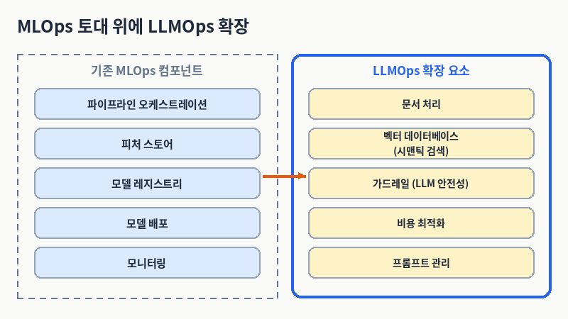
이미지 해설 (직접 열어 확인): 제목이 "MLOps 토대 위에 LLMOps 확장"인 그림입니다. 왼쪽 점선 상자 "기존 MLOps 컴포넌트"에는 파이프라인 오케스트레이션, 피처 스토어, 모델 레지스트리, 모델 배포, 모니터링의 다섯 칸이 있고, 오른쪽 파란 실선 상자 "LLMOps 확장 요소"에는 문서 처리, 벡터 데이터베이스(시맨틱 검색), 가드레일(LLM 안전성), 비용 최적화, 프롬프트 관리의 다섯 칸이 있습니다. 가운데 주황 화살표는 기존 MLOps 위에 LLM용 요소가 얹힌다는 뜻입니다. 초보자는 "LLM(대규모 언어 모델) 서비스를 운영하려면 기존 MLOps를 버리는 것이 아니라 그 위에 문서 처리·검색·안전장치 같은 부품이 더해진다"로 읽으면 됩니다.
📝 보완: 이 그림은 2.3절 끝에 놓여 있지만, 위 여섯 가지 이점을 직접 그린 그림은 아닙니다. 이 책의 RAG 프로젝트(문서를 검색해 답하는 LLM 서비스)가 기존 MLOps 위에 어떤 요소를 더하는지를 미리 보여 주는 그림으로 읽는 것이 정확합니다. 그림의 출처로 본문이 달아 둔 링크는 https://ssungz.tistory.com/109 입니다.
학습 로드맵 링크
- [Roadmap] MLOps (Resources), Machine Learning, AI Engineer
이 네 링크는 학습 경로를 안내하는 참고 자료입니다. 모두 배워야 시작할 수 있다는 필수 자격표는 아닙니다. 각 링크의 확인 범위(본문 일부만 확인 등)는 이 문서 뒤쪽 「외부 참고 링크·유튜브 영상」 절에 적었습니다.
2.4 DevOps vs MLOps
▶ 소개
이 시점에서 누구나 한 번쯤 품게 되는 질문이 있습니다. "MLOps는 왜 DevOps의 확장이 아니라 별도의 영역으로 존재하는가?" 이 질문에 답하기 위해 먼저 두 영역이 어떤 점에서 닮았는지 봅니다.
비슷한 점
- 강력한 자동화 지향: 두 접근법 모두 자동화와 프로세스 간소화로 효율을 높이는 것이 핵심 목표입니다. 반복적이고 오류가 생기기 쉬운 단계를 자동화해 개발 속도를 높이고, 최종 산출물인 소프트웨어의 신뢰성을 높입니다.
- CI/CD 철학 강조: 자동화된 테스트 스위트(테스트 묶음)와 프로덕션 환경으로의 원활한 자동 배포는 두 접근법 모두에게 공통된 특징입니다.
- 다학제적(multidisciplinary) 성격: 여러 도메인에 두루 익숙한 제너럴리스트(generalist) 를 필요로 하는 경우가 많습니다. 두 방법론 모두 공유 도구와 보고 방식을 통해 프로젝트 팀과 이해관계자 간의 긴밀한 협업을 지원합니다.
다른 점 — 머신러닝 워크플로만의 특성
두 영역 사이에 공통점이 있지만, 머신러닝 워크플로만이 갖는 몇 가지 특성이 MLOps를 차별화합니다.
- MLOps는 주로 머신러닝 모델의 훈련, 배포, 모니터링, 최적화와 관련된 과제를 다룹니다. 이는 소프트웨어와 인프라 수명주기에 초점을 맞추는 DevOps와 다릅니다.
- 데이터는 MLOps와 DevOps를 구분 짓는 핵심 요소입니다. MLOps는 데이터를 모델과 프로세스의 필수 컴포넌트로 보고 데이터 수명주기 관리에 상당한 비중을 둡니다. 반면 DevOps는 데이터 관리에 같은 수준의 엄격함을 적용하지 않습니다.
- 모델은 코드베이스에 어떠한 코드 변경이 없더라도 지속적으로 변화하고 진화합니다. 이 점도 MLOps를 DevOps와 구분하는 요소로, 지속적 훈련(continuous training, CT) 을 도입하고 모델 관리·버전 관리에 특별한 고려를 더합니다.
- MLOps는 본질적으로 모델의 해석 가능성과 편향 문제도 다룹니다. 모델을 모니터링하고 합의된 기준을 지키도록 보장하는 기법이 포함됩니다.
- MLOps에서 모델의 성능을 모니터링하는 것은 매우 중요합니다. 입력 데이터의 특성 변화로 성능 저하가 발생할 수 있기 때문입니다. 구글이 언급했듯 머신러닝 모델은 일반 소프트웨어보다 더 다양한 방식으로 성능이 저하될 수 있습니다.
- 마지막으로 MLOps는 본질적으로 실험적이고 반복적입니다. 그래서 단순히 빌드만 추적하는 것이 아니라 실험 자체를 추적하는 것이 중요합니다.
flowchart LR
subgraph DEV["DevOps"]
D1["코드 변경"] --> D2["빌드와 테스트"] --> D3["배포"]
end
subgraph ML["MLOps"]
M1["코드 변경"] --> M4["파이프라인 검증"]
M2["데이터 변화"] --> M4
M3["모델 성능 저하"] --> M4
M4 --> M5["재훈련 CT"] --> M6["모델 검증과 배포"] --> M7["모니터링"]
M7 --> M3
end위 그림은 변화가 시작되는 곳이 DevOps는 주로 "코드"인 반면, MLOps는 "코드 + 데이터 + 모델 성능"이라는 점을 보여 줍니다.
코드는 한 줄도 바꾸지 않은 채, 세상의 변화(입력 데이터가 옛날과 달라진 정도)만 키워 보세요. 고정된 모델의 예측 품질이 어떻게 변하는지 가상의 숫자로 보여 줍니다.
입력 데이터 변화 정도 0 / 100 → 예측 품질(가상) 95점
코드 변경 횟수: 0회 · 서버 응답: 200 OK · 상태: 정상 범위
비교표 한눈에 보기
| 비교 | 공통점 · 차이 |
|---|---|
| 공통 1 | 반복적이고 오류가 잦은 작업의 자동화 |
| 공통 2 | CI/CD, 자동 테스트, 안정적인 배포 |
| 공통 3 | 다학제 협업, 공유 도구와 보고 |
| 차이 1 | ML은 학습과 예측 품질을 다루고 데이터와 모델을 함께 관리 |
| 차이 2 | 데이터·스키마·피처가 변경과 검증의 대상 |
| 차이 3 | 코드가 같아도 재학습 결과가 달라질 수 있음, CT 고려 |
| 차이 4 | 모델 편향·해석 가능성·조건별 평가가 필요 |
| 차이 5 | 데이터와 개념의 변화에 따른 성능 저하를 모니터링 |
| 차이 6 | 빌드뿐 아니라 실험·가설·설정·결과를 추적 |
본문 표현을 정확하게 읽는 법
⚠ 바로잡기 1 — "DevOps의 확장이 아니라 별도": 본문 소개 문장은 MLOps가 DevOps와 완전히 다른 영역인 것처럼 읽힐 수 있습니다. Google은 MLOps를 ML 시스템에 DevOps 원칙을 적용하는 문화와 실천으로 설명합니다. 즉 "공통 기반 위에 ML 특유의 데이터 검증·모델 검증·CT·실험 추적이 더해진 것"이라고 이해하는 편이 정확합니다. 별도의 관심 분야로 다룬다는 뜻이지 DevOps와 단절됐다는 뜻은 아닙니다.
⚠ 바로잡기 2 — "DevOps는 데이터 관리에 같은 엄격함을 적용하지 않는다": DevOps 쪽도 설정·의존성·데이터베이스 변경을 엄격하게 관리하는 경우가 많으므로 이 문장을 일반 규칙으로 외우지 마세요. 정확히는 "ML에서는 학습 데이터와 입력 데이터가 모델 품질을 직접 좌우하므로 데이터의 수명주기를 별도 관리 대상으로 올린다"는 뜻입니다.
⚠ 바로잡기 3 — "코드 변경이 없어도 모델이 지속적으로 변화하고 진화": 이미 배포된 모델 파일은 스스로 가중치를 바꾸지 않습니다. 이 문장은 (1) 입력 데이터나 외부 환경이 달라져 같은 모델의 성능이 떨어지거나, (2) 같은 코드로 새 데이터를 다시 훈련하면 다른 모델이 나온다는 뜻으로 읽어야 합니다. 그래서 CT가 필요합니다. 참고로 일반 소프트웨어도 외부 서비스나 설정이 바뀌면 코드 변경 없이 장애가 날 수 있으므로, "DevOps는 항상 코드가 곧 동작"이라고 단순화하지 않는 것이 좋습니다.
- 참고로 위 표의 "차이 3"에서 말하는 CT(Continuous Training, 지속적 훈련) 는 CI/CD에 더해지는 개념으로, 새 데이터가 들어오거나 일정이 되었거나 성능이 떨어졌을 때 조건에 따라 재훈련 파이프라인을 자동으로 시작하는 체계를 말합니다. 다만 재훈련이 곧 "새 모델을 자동으로 운영에 투입"한다는 뜻은 아니며, 새 모델은 검증을 통과해야 합니다.
마지막으로 책은 이렇게 정리합니다. MLOps는 몇 가지 중요한 영역에서 기존 DevOps와 상당히 다릅니다. 두 방법론은 몇 가지 공통 원칙을 공유하지만, MLOps는 프로덕션 환경에서 머신러닝 모델을 배포하고 관리하는 데 따르는 고유한 과제를 해결하는 데 특별히 초점을 맞춥니다.
2.5 MLOps 성숙도 수준
▶ 소개 — Docs , Youtube
- 본문이 단 링크 두 개입니다. Docs는 Google Cloud의 MLOps 아키텍처 문서(한국어 보기)이고, Youtube는 영상
Fj0MOkzCECA의 327초(5분 27초) 지점입니다. - 이 문서에서는 Google 문서의 내용을 본문 근거로 사용했습니다(마지막 검토일 2024-08-28 UTC로 표시된 페이지). 유튜브 영상은 제목이 「[AI] 카카오뱅크의 MLOps / if(kakao)dev2022」, 채널이 「카카오」라는 점까지만 확인했고, 327초 지점에서 실제로 무슨 말을 하는지는 확인하지 못했습니다. 그래서 영상 내용을 요약하지 않습니다.
구글에 따르면, 머신러닝 루프를 논의하면서 앞서 언급한 각 단계의 자동화 수준은 기업의 MLOps 성숙도를 가늠하는 좋은 지표입니다. 이는 새로운 모델의 개발 속도나 변화에 대한 대응 속도와 직결됩니다.
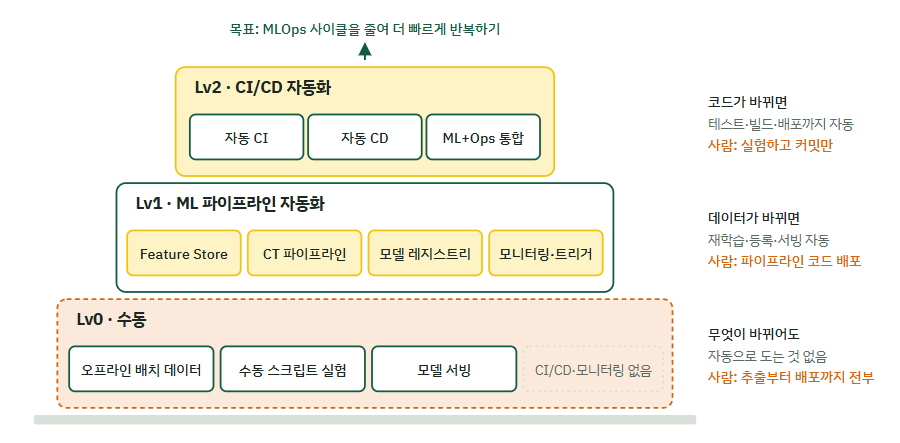
이미지 해설 (직접 열어 확인): 계단처럼 쌓인 세 층 그림입니다. 맨 아래 "Lv0 수동"은 오프라인 배치 데이터, 수동 스크립트 실험, 모델 서빙으로 구성되고 "CI/CD·모니터링 없음"이 점선으로 흐리게 표시됩니다. 가운데 "Lv1 ML 파이프라인 자동화"는 Feature Store, CT 파이프라인, 모델 레지스트리, 모니터링·트리거를 묶어 보여 주고, 맨 위 "Lv2 CI/CD 자동화"는 자동 CI, 자동 CD, ML+Ops 통합입니다. 오른쪽에는 각 층마다 "무엇이 바뀌면 자동으로 도는가"와 "사람이 하는 일"이 적혀 있습니다. Lv0는 "무엇이 바뀌어도 자동으로 도는 것 없음 — 사람이 추출부터 배포까지 전부", Lv1은 "데이터가 바뀌면 재학습·등록·서빙 자동 — 사람은 파이프라인 코드 배포", Lv2는 "코드가 바뀌면 테스트·빌드·배포까지 자동 — 사람은 실험하고 커밋". 맨 위 화살표 문구는 "목표: MLOps 사이클을 줄여 더 빠르게 반복하기"입니다.
📝 보완: 그림의 "CI/CD·모니터링 없음"은 Level 0의 특징을 단순화한 표현입니다. Google 문서는 Level 0의 특징을 "능동적인 모델 성능 모니터링이 부족하다"고 설명하며, 엔지니어링 팀이 API 구성·테스트·배포를 위한 자체 설정을 가지고 있을 수도 있다고 덧붙입니다. 즉 "아무것도 없다"가 아니라 "ML 학습·검증·추적을 자동으로 이어 주는 체계가 없다"로 이해하세요. 아래 본문의 "모니터링은 전혀 구현되어 있지 않으며"도 같은 방식으로 읽습니다.
세 수준을 한눈에
flowchart TD
subgraph L0["Level 0 기초 - 수동"]
A0["데이터 추출 분석 수동"] --> A1["노트북에서 실험 수동"]
A1 --> A2["훈련된 모델 파일"]
A2 -->|"운영팀에 전달"| A3["모델 서빙"]
end
subgraph L1["Level 1 중급 - 학습 파이프라인 자동화"]
B0["트리거 새 데이터 일정 성능 저하"] --> B1["자동 파이프라인 검증 전처리 훈련 평가"]
B1 --> B2["모델 검증 통과 시 레지스트리 등록"]
B2 --> B3["서빙"]
B3 --> B4["성능 모니터링"]
B4 --> B0
end
subgraph L2["Level 2 고급 - 파이프라인 자체의 CI/CD"]
C0["파이프라인 코드 변경"] --> C1["CI 테스트 빌드 패키징"]
C1 --> C2["CD 파이프라인 배포"]
C2 --> B1
end
L0 -->|"배포 대상이 모델에서 파이프라인으로"| L1
L1 -->|"파이프라인 자체도 자동 배포"| L2Level 0: 기초
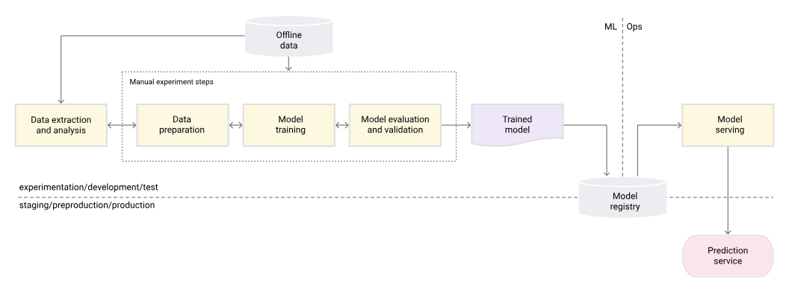
이미지 해설 (직접 열어 확인, 영문 라벨): 왼쪽 "Offline data(오프라인 데이터)"에서 시작해 "Data extraction and analysis(데이터 추출·분석)"와 점선 상자 "Manual experiment steps(수동 실험 단계)" 안의 "Data preparation(데이터 준비) → Model training(모델 훈련) → Model evaluation and validation(모델 평가·검증)"이 양방향 화살표로 이어집니다. 결과물 "Trained model(훈련된 모델)"이 "Model registry(모델 레지스트리)"로 들어가고, 세로 점선 "ML | Ops"의 오른쪽(운영 쪽)에서 "Model serving(모델 서빙)"을 거쳐 "Prediction service(예측 서비스)"가 됩니다. 핵심은 ML(데이터 과학자) 영역과 Ops(운영) 영역 사이가 사람이 모델 파일을 넘겨주는 한 점으로만 이어져 있다는 것입니다. 양방향 화살표는 사람이 앞뒤로 오가며 수동으로 반복한다는 뜻입니다.
- 레벨 0은 MLOps 여정을 막 시작한 대부분의 기업이 출발하는 단계입니다. 머신러닝 모델을 구축·훈련·배포하는 일련의 과정을 수동 스크립트 기반으로 처리한다는 점이 가장 큰 특징입니다. 모니터링은 전혀 구현되어 있지 않으며, 릴리즈 반복 주기도 매우 드문 편입니다.
Level 1: 중급
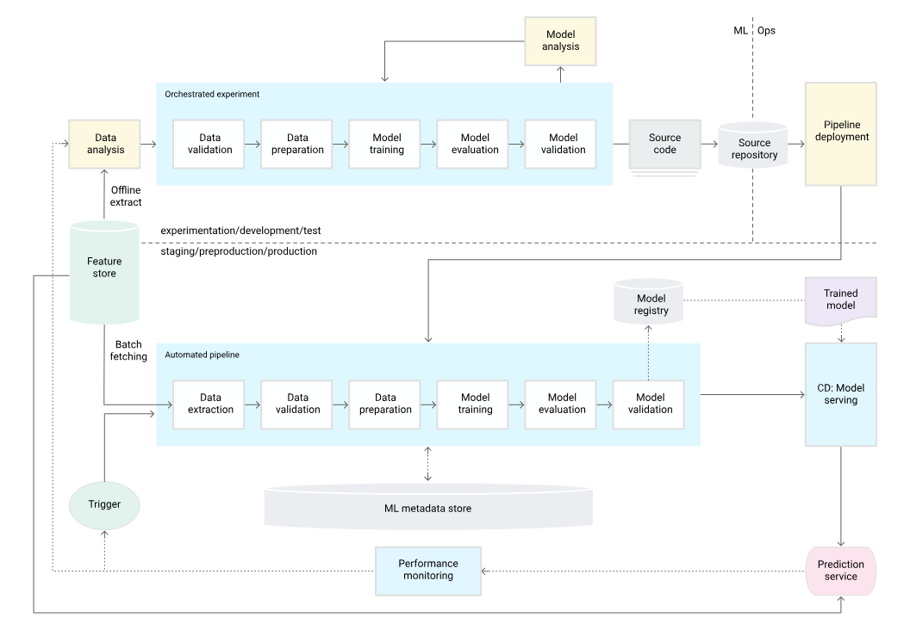
이미지 해설 (직접 열어 확인, 영문 라벨): 그림이 위아래 두 구간으로 나뉩니다. 위쪽은 개발·실험 환경의 "Orchestrated experiment(오케스트레이션된 실험)"로 "Data validation → Data preparation → Model training → Model evaluation → Model validation"이 이어지고, 옆의 "Model analysis"와 "Data analysis"는 사람이 하는 분석입니다. 이 실험 코드는 "Source code → Source repository"를 거쳐 "Pipeline deployment(파이프라인 배포)"로 아래쪽 운영 환경에 올라갑니다. 아래쪽 "Automated pipeline(자동 파이프라인)"은 "Data extraction → Data validation → Data preparation → Model training → Model evaluation → Model validation"으로, 위쪽과 거의 같은 구조입니다. 이 파이프라인을 "Trigger(트리거)"가 시작시키고, "Feature store(피처 스토어)"에서 배치로 피처를 가져오며, "ML metadata store(메타데이터 저장소)"에 모든 실행 기록을 남깁니다. 검증을 통과한 모델은 "Model registry"를 거쳐 "CD: Model serving"으로 배포되고 "Prediction service"가 되며, 마지막으로 "Performance monitoring(성능 모니터링)"이 다시 트리거와 데이터 분석으로 되돌아가는 순환 구조입니다. 위아래가 같은 파이프라인이라는 점이 곧 아래의 "실험-운영 대칭성"입니다.
- 레벨 1의 주요 특징은 실험 속도와 프로덕션 환경에서의 지속적인 모델 재훈련입니다. 레벨 0이 모델만 배포했다면, 레벨 1의 배포 대상은 재훈련 파이프라인 전체입니다. 이를 통해 새 데이터에 맞춰 예측 서비스에 모델을 지속적으로 전달하고 시간이 지나면서 자동으로 성능을 개선할 수 있습니다.
- 레벨 1 팀의 또 다른 핵심은 모듈식 파이프라인 컴포넌트입니다. 팀 간에 자유롭게 공유되고, 개발 환경과 프로덕션 환경 모두에서 동일한 파이프라인을 배포에 활용할 수 있게 해 줍니다. 이를 실험-운영 대칭성(experimental-operational symmetry) 이라고 합니다.
- 레벨 1 활동을 지원하려면 다음 컴포넌트가 갖춰져야 합니다.
- 견고한 데이터 및 모델 검증 메커니즘
- 피처 스토어(필요한 경우)
- 파이프라인 모니터링, 리니지 및 관련 메타데이터
- 커스텀 트리거에 따라 실행되는 자동 트리거 방식의 머신러닝 파이프라인
⚠ 바로잡기: 위 소개의 "시간이 지남에 따라 자동으로 성능을 개선할 수 있습니다"는 가능성을 말하는 표현입니다. 자동 재훈련이 곧 자동 품질 개선은 아닙니다. 새로 훈련한 후보 모델이 기존 모델보다 좋은지 검증해서 통과할 때만 교체하고, 실패하면 기존 모델을 유지하며 원인을 조사하도록 설계해야 합니다. 또 "피처 스토어(필요한 경우)"라는 본문 표현대로 피처 스토어는 선택 사항이며 모든 Level 1 시스템의 필수품이 아닙니다.
Level 2: 고급
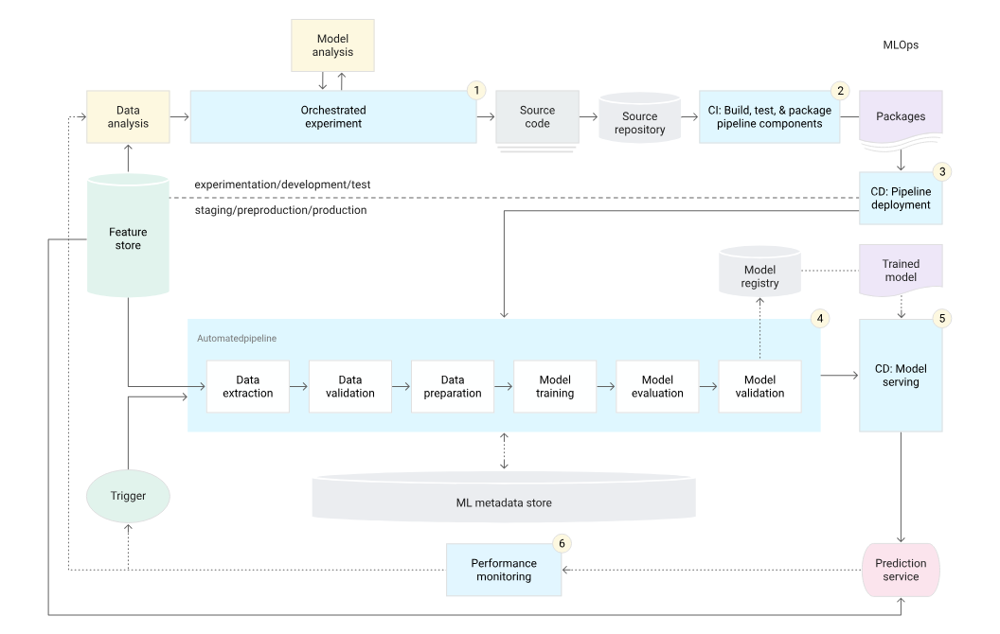
이미지 해설 (직접 열어 확인, 영문 라벨): Level 1 도식 위에 번호 ①~⑥이 붙은 CI/CD 단계가 더해졌습니다. ① "Orchestrated experiment(실험)"에서 만든 "Source code(소스 코드)"가 "Source repository(저장소)"에 올라가면 ② "CI: Build, test, & package pipeline components(CI: 파이프라인 컴포넌트를 빌드·테스트·패키징)"가 돌고 결과물 "Packages(패키지)"가 만들어집니다. ③ "CD: Pipeline deployment(파이프라인 배포)"가 이 패키지를 운영 환경에 올리면 ④ 운영의 "Automated pipeline(자동 파이프라인)"이 트리거에 따라 동작하고, ⑤ "CD: Model serving(모델 서빙)"으로 모델이 배포되어 "Prediction service"가 되며, ⑥ "Performance monitoring"이 다시 트리거를 부릅니다. 레벨 1과의 차이는 ②③: 파이프라인 코드 자체가 자동으로 테스트·빌드·배포된다는 점입니다.
- 마지막 단계는 파이프라인 자체의 빌드와 배포를 자동화하고, 파이프라인 컴포넌트를 머신러닝 루프의 핵심 요소로 만드는 것입니다. 이 단계에서는 데이터 분석과 모델 분석을 제외한 거의 모든 것이 자동화됩니다.
- 파이프라인과 컴포넌트는 머신러닝 엔지니어만의 소유가 아니라 팀 전체 혹은 조직 전체가 함께 관리하며, 데이터 과학자도 자신의 관찰을 바탕으로 새로운 컴포넌트를 제안할 수 있습니다.
레벨 사이의 표 비교
| 수준 | 주요 자동화 대상 | 사람이 여전히 하는 일 | 핵심 구분 |
|---|---|---|---|
| Level 0 | 대부분 수동: 추출·실험·학습·평가·모델 전달 | 단계 연결과 모델 갱신 | 훈련된 모델을 운영팀에 넘기는 것이 중심 |
| Level 1 | 데이터 검증·전처리·학습·평가 등 학습 파이프라인 | 새 파이프라인 구현·배포, 데이터·모델 분석 | 모델이 아니라 파이프라인을 운영 |
| Level 2 | 파이프라인 구성요소의 빌드·테스트·패키징·배포까지 CI/CD | 문제 정의, 데이터·모델 분석, 실험 설계, 정책 검토 | 파이프라인을 만드는 과정도 자동화 |
이 장을 마무리하며
- 이러한 레벨들은 대략적인 기준일 뿐이며, 단계 간 난이도가 선형적으로 증가하는 것은 아닙니다. 그러나 자신이나 자신의 조직이 이 척도에서 어디에 위치하는지 파악하면, 내부적으로 강한 MLOps 문화를 구축하면서 꾸준히 발전해 나가기 위해 필요한 단계를 계획하는 데 도움이 됩니다. 이 책의 나머지 부분에서 다루는 도구들은 모든 성숙도 수준에 맞게 확장할 수 있습니다.
📝 보완: 이 세 수준은 Google이 제안한 설명 틀이지 모든 조직에 적용되는 인증 기준이 아닙니다. 운영 기능마다 성숙도가 섞여 있을 수 있고(예: 학습은 Level 1인데 배포는 Level 0), Level 2가 모든 팀의 필수 목표인 것도 아닙니다. 팀 규모와 모델 변경 빈도에 맞는 수준을 고르는 것이 중요합니다.
- 이번 장 전반에 걸쳐 MLOps의 중요성과 도전 과제, 그리고 조직 안에서 성숙해 가는 방식을 이해하기 위해 개념적·조직적 관점에서 MLOps를 살펴봤습니다. 이러한 개념들은 좀 더 실습 중심의 영역으로 나아가는 토대가 됩니다.
- MLOps의 이론적 토대와 비즈니스 측면을 다루었으니, 이어지는 장들에서는 컨테이너와 쿠버네티스를 시작으로 머신러닝 워크로드를 실행하기 위한 확장 가능한 플랫폼을 구축하는 방법을 심층적으로 살펴봅니다. 구체적으로 다음 장에서는 MLOps 실천 방법을 확장 가능하고 안정적인 방식으로 구현하는 데 도움이 될 기반인 쿠버네티스를 깊이 다루며 머신러닝 플랫폼 구축을 시작합니다. 지금까지 쌓은 MLOps에 대한 이론적 이해를 바탕으로 이제 실제 구현으로 옮겨 가기 시작합니다.
해당하는 항목에 체크해 보세요.
Level 0에 가까움: 수동 단계가 많습니다.
머신러닝 플랫폼 구성 예시
▶ 머신러닝 플랫폼 구성 예시
책은 아래 여섯 항목을 글 없이 이미지 중심으로 보여 줍니다. 여기서는 그림을 직접 열어 확인한 내용을 풀어 쓰고, 나중에 달라진 점은 따로 표시합니다. 이 그림들은 예시 아키텍처이며 "모두 설치해야 하는 체크리스트"가 아닙니다.
머신러닝 플랫폼 구성
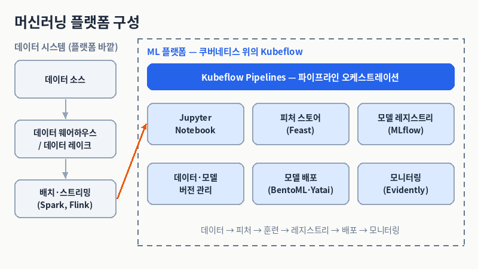
이미지 해설 (직접 열어 확인): 제목은 "머신러닝 플랫폼 구성"입니다. 왼쪽 "데이터 시스템(플랫폼 바깥)"은 데이터 소스 → 데이터 웨어하우스/데이터 레이크 → 배치·스트리밍(Spark, Flink) 순서입니다. 오른쪽 점선 상자 "ML 플랫폼 — 쿠버네티스 위의 Kubeflow" 맨 위에는 "Kubeflow Pipelines — 파이프라인 오케스트레이션"이 있고, 그 아래 여섯 칸이 있습니다. Jupyter Notebook, 피처 스토어(Feast), 모델 레지스트리(MLflow), 데이터·모델 버전 관리, 모델 배포(BentoML·Yatai), 모니터링(Evidently). 하단 문구는 "데이터 → 피처 → 훈련 → 레지스트리 → 배포 → 모니터링"입니다. 주황 화살표는 바깥의 데이터 시스템에서 플랫폼으로 데이터가 들어온다는 뜻입니다.
🔧 도구 현황 주의: 이 그림에는 Yatai가 들어 있습니다. Yatai의 공식 GitHub 저장소는 2026-06-11에 보관(archived, 읽기 전용) 처리되었습니다. 그림은 이 책이 따라가는 역사적 실습 스택으로 읽고, 새로 구축할 때는 현재 BentoML 공식 문서의 배포 방식을 확인하세요.
머신러닝 파이프라인
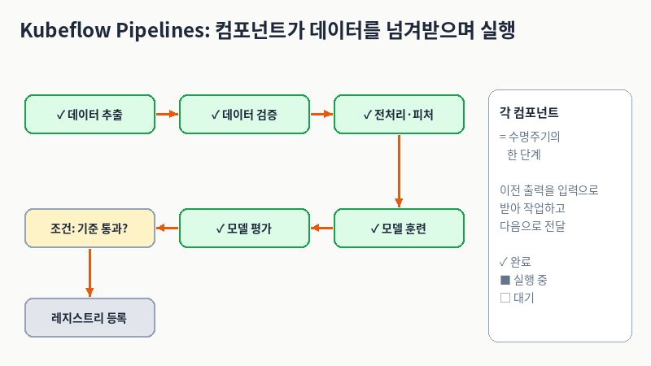
이미지 해설 (직접 열어 확인): 제목은 "Kubeflow Pipelines: 컴포넌트가 데이터를 넘겨받으며 실행"입니다. 위 줄에 "데이터 추출 → 데이터 검증 → 전처리·피처"가 이어지고, 오른쪽 끝에서 아래로 내려와 "모델 훈련", 그다음 왼쪽으로 "모델 평가", 노란 판단 상자 "조건: 기준 통과?"를 거쳐 통과하면 "레지스트리 등록"에 도달합니다. 오른쪽 안내 상자는 각 컴포넌트가 수명주기의 한 단계이며 이전 출력을 입력으로 받아 작업하고 다음으로 전달한다고 설명하고, 범례는 ✓ 완료, ■ 실행 중, □ 대기입니다. 초록색 체크(✓)가 모든 단계에 붙어 있으니 이 그림은 "모두 완료된 한 번의 실행" 장면입니다. 초보자는 "앞 단계의 출력이 다음 단계의 입력" 이고 평가를 통과해야만 등록된다는 두 가지를 기억하면 됩니다. 기준을 통과하지 못했을 때의 분기(실패 시 처리)는 이 그림에 그려져 있지 않으므로 직접 설계해야 합니다.
피처 스토어
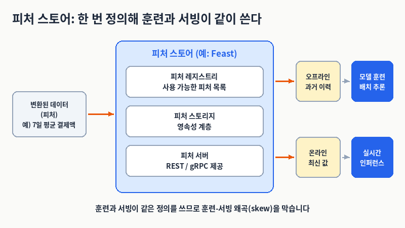
이미지 해설 (직접 열어 확인): 제목은 "피처 스토어: 한 번 정의해 훈련과 서빙이 같이 쓴다"입니다. 왼쪽 "변환된 데이터(피처) 예) 7일 평균 결제액"이 가운데 "피처 스토어(예: Feast)"로 들어갑니다. 스토어 안은 피처 레지스트리(사용 가능한 피처 목록), 피처 스토리지(영속성 계층), 피처 서버(REST/gRPC 제공) 세 겹입니다. 출력은 두 갈래로, "오프라인 과거 이력"은 "모델 훈련 배치 추론"으로, "온라인 최신 값"은 "실시간 인퍼런스"로 갑니다. 아래 문구는 "훈련과 서빙이 같은 정의를 쓰므로 훈련-서빙 왜곡(skew)을 막습니다"입니다.
📝 보완: [보강] 피처 스토어는 같은 정의를 공유하고 조회를 일관되게 해 주지만, 시간 누수나 최신성 오류를 자동으로 없애 주지는 않습니다. 예를 들어 3월 1일에 일어난 거래가 3월 5일에야 시스템에 들어왔다면, 3월 2일 시점의 예측에 그 거래를 쓰면 안 됩니다. 과거 시점 조회(point-in-time)는 사건이 일어난 시각뿐 아니라 그 정보가 시스템에 실제로 들어온 시각까지 고려해야 합니다. Feast 공식 문서도 늦게 들어온 값이 기본 조회에 섞일 수 있어 생성 시각 필터 같은 옵션이 필요하다고 설명합니다.
모델 레지스트리
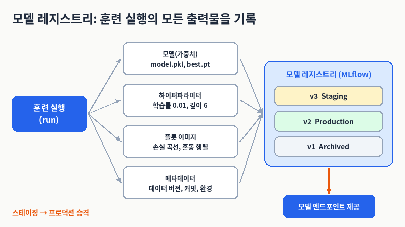
이미지 해설 (직접 열어 확인): 제목은 "모델 레지스트리: 훈련 실행의 모든 출력물을 기록"입니다. 왼쪽 파란 상자 "훈련 실행(run)"에서 네 가지 출력이 나옵니다. 모델(가중치) model.pkl, best.pt, 하이퍼파라미터(학습률 0.01, 깊이 6), 플롯 이미지(손실 곡선, 혼동 행렬), 메타데이터(데이터 버전, 커밋, 환경). 이것들이 오른쪽 "모델 레지스트리(MLflow)"로 모이고, 안에는 v3 Staging, v2 Production, v1 Archived 세 버전이 쌓여 있습니다. 아래로 "모델 엔드포인트 제공" 화살표가 있고, 왼쪽 아래에는 "스테이징 → 프로덕션 승격"이라고 적혀 있습니다.
⚠ 바로잡기 (도구 현황): 이 그림의 Staging / Production / Archived는 MLflow의 옛 Stage 방식입니다. MLflow는 2.9.0부터 Model Stage를 폐기 예정(deprecated)으로 표시하고, 지금은 별칭(alias)과 태그(tag)를 쓰는 방식을 안내합니다(예:champion,challenger같은 이름을 붙임). 또한 그림은 "훈련 실행의 모든 출력물을 레지스트리에 기록"한다고 말하지만, 설정·지표·플롯·아티팩트를 남기는 일은 우선 실험 추적(tracking) 영역이고, 레지스트리는 모델의 이름·버전·출처를 관리합니다. 레지스트리가 스스로 API 서비스를 띄워 주는 것은 아니며, 서빙과 배포는 별도 구성요소의 책임입니다.
| 구성요소 | 맡는 일 |
|---|---|
| 실험 추적(Tracking) | 실행마다 설정·지표·플롯·파일을 기록 |
| 모델 레지스트리(Registry) | 모델 이름·버전·출처, 별칭·태그 관리 |
| 서빙(Serving) | 정해진 모델을 불러와 요청에 응답 |
| 배포(Deployment) | 그 조합을 환경에 반영하고 단계적 변경·롤백을 관리 |
플롯 이미지 예시
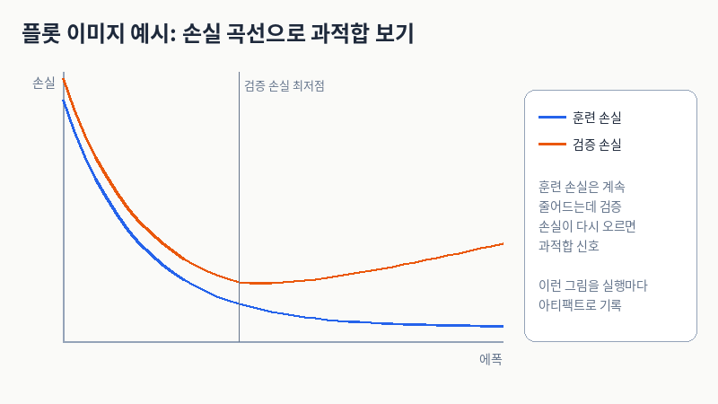
이미지 해설 (직접 열어 확인): 제목은 "플롯 이미지 예시: 손실 곡선으로 과적합 보기"입니다. 가로축은 에폭(문제집을 한 바퀴 푼 횟수), 세로축은 손실(틀린 정도)입니다. 파란 "훈련 손실"은 계속 줄어드는데, 주황 "검증 손실"은 중간의 "검증 손실 최저점"까지 줄다가 그 뒤로 다시 올라갑니다. 오른쪽 설명은 "훈련 손실은 계속 줄어드는데 검증 손실이 다시 오르면 과적합 신호", "이런 그림을 실행마다 아티팩트로 기록"입니다.
자동화된 모델 배포 흐름
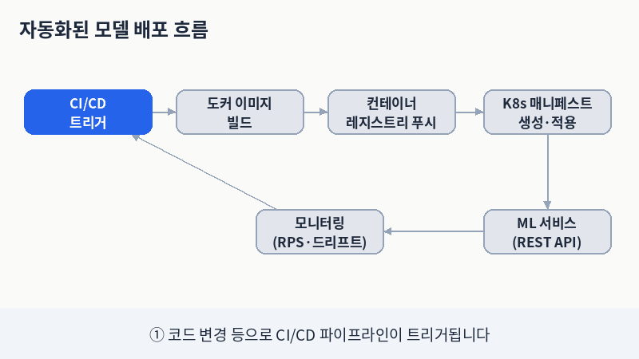
이미지 해설 (GIF를 열어 첫 화면을 확인): 제목은 "자동화된 모델 배포 흐름"입니다. 첫 프레임에서 "CI/CD 트리거"가 파란색으로 강조되고, 아래 설명은 "① 코드 변경 등으로 CI/CD 파이프라인이 트리거됩니다"입니다. 전체 구조는 CI/CD 트리거 → 도커 이미지 빌드 → 컨테이너 레지스트리 푸시 → K8s 매니페스트 생성·적용 → ML 서비스(REST API) → 모니터링(RPS·드리프트) → 다시 트리거로 돌아가는 순환입니다. 이 GIF는 7개 프레임으로 이 단계를 하나씩 강조하는 것으로 확인했으나, 2~7번째 프레임의 문구는 개별로 읽지 못했습니다(판독 못함).
flowchart LR T["CI/CD 트리거 코드 변경 등"] --> B["도커 이미지 빌드"] B --> P["컨테이너 레지스트리에 푸시"] P --> K["쿠버네티스 매니페스트 생성과 적용"] K --> S["ML 서비스 REST API"] S --> M["모니터링 요청량 드리프트"] M -->|"다시 시작"| T
- 도커 이미지 / 컨테이너: 모델과 실행 환경을 하나로 포장한 상자(이미지)와, 그것을 실제로 실행한 인스턴스(컨테이너)입니다.
- 컨테이너 레지스트리: 이미지를 보관·배포하는 창고입니다. 모델 레지스트리와는 다른 것입니다(모델 레지스트리는 모델 버전을 관리).
- 쿠버네티스(K8s) 매니페스트: "어떤 서비스를 몇 개, 어떻게 띄울지" 적은 명세 파일입니다. 자세한 사용법은 다음 장(컨테이너·쿠버네티스)에서 다룹니다.
📝 보완: 이 애니메이션의 "RPS(초당 요청 수)"는 서비스가 살아 있는지를 보는 지표이지 예측이 정확한지를 알려 주지는 않습니다. 품질 저하에 대한 대응(재훈련 → 검증 → 승인 → 재배포)은 앞에서 본 CT와 승인 절차로 따로 설계해야 합니다. 또한 그림만으로는 롤링·카나리 같은 단계적 배포 방식이나 "무중단"을 보장한다고 읽을 수 없습니다.
외부 참고 링크·유튜브 영상
이 장에 등장하는 외부 링크는 고유 URL 19개(그중 유튜브 1개) 입니다. URL은 그대로 옮김했고, 각 링크를 어느 수준까지 확인했는지 함께 적었습니다. 확인하지 못한 링크는 내용을 지어내지 않고 "확인 못함"이라고 표시합니다.
확인 수준 읽는 법: 본문 확인 = 실제 설명 글을 읽음 · 본문 일부 확인 = 메뉴·제목·안내 위주만 읽음 · 확인 못함 = 접속 실패 또는 제목만 확인. 개인 블로그·위키는 학습 참고용이며 기술 사실의 근거로는 쓰지 않았습니다.
| # | 링크 (본문 URL) | 본문에서 쓰인 곳 | 담긴 내용 | 확인 수준 |
|---|---|---|---|---|
| 1 | [https://ssungz.tistory.com/109�1� | 모델·코드, 데이터, EDA, 평가, 모니터링, 2.3 이후 플랫폼 구성 등 여러 그림의 출처 | 「MLOps 스터디 정리 - 1주차」. 모델·코드·리니지, 누수, ML 루프, Kubeflow·Feast·MLflow·배포·LLMOps 연결을 정리한 개인 학습 노트 | 본문 확인 (개인 노트라 독립된 사실 근거로는 약함) |
| 2 | [https://velog.io/@chaujin00/TIL-261018�2� | 모델·코드·리니지 그림, 2.5 성숙도 요약 그림의 출처 | 모델·코드·리니지 구분, MLOps 자동화 수준, 컨테이너 관련 짧은 학습 메모 | 본문 확인 (개인 필기) |
| 3 | [https://www.kaggle.com/datasets/kontheeboonmeeprakob/midv500/data�3� | 2.1.1 신분증 탐지기(MIDV-500) | MIDV-500 데이터셋 페이지 | 확인 못함 (페이지 제목만 확인, 파일·설명은 읽지 못함. 구성은 저자 논문으로 확인) |
| 4 | [https://github.com/cvat-ai/cvat�4� | 2.1.1 CVAT 사람 애노테이션 | 이미지·영상 라벨링 도구. AI 보조 레이블, 검수, 협업, API 제공. 커뮤니티판은 MIT 라이선스 | 본문 확인 (공식 README. 설치·실행은 해 보지 않음) |
| 5 | [https://grouplens.org/datasets/movielens/�5� | 2.1.1 영화 추천기 | MovieLens 데이터셋 목록 페이지 | 확인 못함 (접속 실패) |
| 6 | [https://grouplens.org/datasets/movielens/1m/�6� | 2.1.1 영화 추천기 | MovieLens 1M 소개 페이지 | 확인 못함 (접속 실패). 규모·파일 구성은 같은 기관의 공식 README와 배포 파일로 대신 확인 |
| 7 | [https://abluesnake.tistory.com/98�7� | 2.1.1 MovieLens 그림(016)의 출처 | 「Movielens 데이터 소개」. ml-latest-small 데이터의 CSV 구성(movies, ratings, tags, links)과 장르·평점 분석 | 본문 확인 (개인 블로그. 1M 파일 구성과 혼동 금지) |
| 8 | [https://namu.wiki/w/You%20Only%20Look%20Once�8� | 2.1.3 YOLO 소개 | YOLO 개념과 여러 버전 설명 | 본문 확인 (비공식 위키. 버전 현황 판단에는 공식 문서 사용) |
| 9 | [https://brunch.co.kr/@aischool/11�9� | 2.1.3 YOLO 소개 | 2023-06-11 글. 단일 단계 검출의 직관, 원형 YOLO의 격자와 NMS | 본문 확인 (과거 입문 글. 모든 신형 YOLO의 구조로 일반화하지 말 것) |
| 10 | [https://docs.ultralytics.com/�10� | 2.1.3 YOLO 소개 | Ultralytics 공식 문서 홈. 학습·예측·평가·내보내기 | 본문 확인 (문서 홈 수준) |
| 11 | [https://docs.ultralytics.com/models/yolo26�11� | 2.1.3 YOLO 버전 비교 그림(023) 캡션 | 2026년 1월 공개된 YOLO26. 다음 모델 YOLO27은 아직 미공개로 예고 | 본문 확인 (공식. 비교 수치는 장치·런타임·모델 크기에 종속) |
| 12 | [https://cocodataset.org/#home�12� | 2.1.3 사전학습 데이터(COCO) | COCO 공식 사이트(데이터, 탐지, 분할, 평가 항목) | 본문 일부 확인 (메뉴 수준. 클래스 목록은 공식 설정 파일로 확인) |
| 13 | [https://www.evidentlyai.com/�13� | 2.1.6 모니터링 | AI·ML 평가와 모니터링, 드리프트 점검 도구 소개 | 본문 확인 (제품 소개) |
| 14 | [https://roadmap.sh/mlops�14� | 2.3 학습 로드맵 | 단계별 MLOps 학습 경로 | 본문 일부 확인 (도식의 모든 노드는 확인 못함) |
| 15 | [https://github.com/harish303118/MLOps-Engineering-with-Roadmap-and-Free-Learning-Resources�15� | 2.3 학습 로드맵 (Resources) | 전처리·피처·학습·평가·파이프라인·배포 주제별 영상·읽기 자료 모음 | 본문 확인 (개인 큐레이션. 안의 모든 링크까지 확인하지는 않음) |
| 16 | [https://roadmap.sh/machine-learning�16� | 2.3 학습 로드맵 | ML 엔지니어 학습 경로 | 본문 일부 확인 |
| 17 | [https://roadmap.sh/ai-engineer�17� | 2.3 학습 로드맵 | 사전학습 모델·AI 도구를 응용 프로그램에 적용하는 역할 설명 | 본문 일부 확인 (경력 전망 문구는 기술 사실로 쓰지 않음) |
| 18 | [https://docs.cloud.google.com/architecture/mlops-continuous-delivery-and-automation-pipelines-in-machine-learning?hl=ko�18� | 2.5 MLOps 성숙도 수준 (Docs) | MLOps 정의, DevOps와의 공통·차이, CI/CD/CT, Level 0·1·2, 검증·메타데이터·피처 스토어·트리거·모니터링 | 본문 확인 (핵심 1차 출처. 마지막 검토일 2024-08-28 UTC로 표시. 모든 조직의 강제 표준은 아님) |
| 19 | [https://youtu.be/Fj0MOkzCECA?si=H9IfhXrzS-0n6uCp&t=327�19� | 2.5 소개 (Youtube) | 본문이 영상의 327초(5분 27초) 지점에 연결. 영상 제목은 「[AI] 카카오뱅크의 MLOps / if(kakao)dev2022」, 채널은 「카카오」라는 공개 정보만 확인 | 영상 내용 확인 못함 (영상을 보거나 자막을 읽지 않았고, 327초 지점의 발언은 알 수 없음) |
영상에 대해 알 수 있는 것과 없는 것
- 알 수 있는 것: 영상 ID
Fj0MOkzCECA, 시작 위치 327초, 공개된 영상 제목과 채널. - 알 수 없는 것: 327초 지점에서 실제로 무슨 설명이 나오는지, 발표자가 어떤 슬라이드를 쓰는지. 그래서 이 문서는 영상 내용을 요약하지 않으며, 2.5절의 성숙도 설명은 Google 문서(링크 18)를 근거로 했습니다. 영상은 직접 시청한 뒤 확인하세요.
[보강] 본문의 정정·보완에 사용한 공식 출처
본문 링크는 아니지만, 이 문서의 「바로잡기」과 「심화」에서 사실을 확인하는 데 쓴 1차 출처입니다(2026-10-24 기준으로 열람).
| 출처 | 용도 |
|---|---|
| MovieLens 1M 공식 README · 공식 ZIP | 6,040명 · 영화 3,883편(메타데이터) · 평점 1,000,209건, 사용 조건 |
| MIDV-500 저자 논문 | 50종 문서 × 5개 촬영 조건 × 2개 기기, Partial 조건의 뜻, 원본 이미지 출처 |
| Ultralytics YOLO26 · YOLOv8 | 공개 시점, 지원 작업 |
| COCO 공식 설정 파일(coco.yaml) | 탐지 클래스 80개(0~79번) |
| PyTorch 모델 저장·로드 튜토리얼 | state_dict의 내용(파라미터와 등록 버퍼), 로드 안전성 |
| MLflow Model Registry 워크플로 | 2.9.0부터 Stage 폐기 예정, alias·tag 안내 |
| Feast point-in-time joins | 시점 조회와 사후 입력값 처리 |
| Yatai 공식 저장소 | 2026-06-11 보관(archived) 처리 |
| Evidently 드리프트 설명 | 드리프트 검정 방식, 결측 증가는 기본으로 감지하지 않음 |
| Hidden Technical Debt in Machine Learning Systems | 기술 부채 개념 |
| scikit-learn F1 · t-SNE · common pitfalls | F1 정의, t-SNE 특성, 데이터 누수 |
| BentoML adaptive batching | 배칭 기본 설정 |
이 중 접속이 막혔거나 본문을 읽지 못한 곳(GroupLens 소개 페이지 2건, Kaggle 설명, Chainlit 문서, O'Reilly의 『Introducing MLOps』 페이지)은 근거로 쓰지 않았습니다.
마무리 — 질문과 답변
이 장에는 「질문」·「도전과제」·「마무리」라는 이름의 독립된 섹션이 없습니다. 대신 본문 곳곳에 질문 형태의 문장이 흩어져 있어, 그 질문을 모두 모아 초보자용 모범 답변을 붙였습니다. 출처 위치는 본문 줄 번호로 적었습니다.
📝 읽기 전에: 아래 답변의 숫자·일정·설계는 모두 가상 프로젝트 예시이며 책의 실험 결과나 특정 기업의 확정 정책이 아닙니다. 법무·개인정보 답변은 설계 검토 항목이고 법률 판단이 아닙니다. 본문 토글 안에 "2장 Q1", "1장 Q3"처럼 번호가 붙은 참조가 있지만번호가 가리키는 질문 목록 자체는 어디에도 나와 있지 않아, 번호와 질문의 대응은 추정에 불과하므로 아래에서는 확정하지 않았습니다.
1. 「들어가며」의 다섯 질문 (본문)
| 질문 | 초보자용 모범 답변 |
|---|---|
| 모델을 어떻게 훈련할 것인가? | 노트북에서 셀을 손으로 돌리는 방식에서 벗어나, 다시 실행할 수 있는 코드로 훈련합니다. 전처리·모델 정의·학습 루프·설정을 분리하고, 처음에는 작은 베이스라인(가장 단순한 비교 기준) 모델부터 만듭니다. 실행 설정·지표·모델 파일을 함께 기록해 나중에 같은 결과를 다시 만들 수 있게 합니다. |
| 데이터는 어떻게 모델에 전달할 것인가? | 출처·스키마(데이터 형식)·갱신 주기를 정한 추출 파이프라인을 둡니다. 훈련 때는 과거 데이터를, 실시간 예측 때는 그 시점에 이미 알 수 있는 값을 쓰되 같은 피처 정의로 공급해야 훈련과 서빙의 어긋남(skew)을 막을 수 있습니다. |
| 모델은 다른 서비스와 어떻게 상호작용할 것인가? | 입력·출력 형식, 오류 응답, 허용 지연 시간을 합의한 API(또는 배치 파일 약속) 로 연결합니다. 모델 파일을 아무 서비스에나 직접 넘기지 않고, 서비스 뒤에 모델을 두고 요청을 받아 결과를 돌려주는 구조가 일반적입니다. |
| 모델은 어디서 실행할 것인가? | 서버(API), 정해진 시간에 한꺼번에 돌리는 배치 작업, 사용자 기기(에지) 중에서 데이터 접근·지연·비용·연결 상태·보안에 맞는 곳을 고릅니다. 스마트폰 같은 기기에서 돌릴 계획이라면 최종 기기에서 실제 모델을 시험해야 합니다. |
| 시간이 지나도 모델의 정확도를 유지할 수 있는 방법은? | 배포 후 방치하지 않고 입력 데이터 품질과 실제 예측 성능을 계속 관찰합니다(폐쇄 루프). 이상이 보이면 원인을 먼저 조사하고(데이터 문제인지 코드 문제인지 실제 변화인지), 새 모델은 평가와 승인을 거쳐 배포하며 문제가 생기면 이전 버전으로 되돌립니다(롤백). |
2. 비즈니스·제품 이해관계자 질문 (본문)
| 질문 | 초보자용 모범 답변 |
|---|---|
| 머신러닝 솔루션이 필요한 문제나 과제는 무엇인가? 왜 머신러닝이 필요한가? | 예: 중고차 판매자가 참고 가격을 얻는 문제. 평균 가격이나 간단한 규칙보다 차량 조건을 이용한 예측이 실제로 더 유용한지 비교해 봅니다. 규칙으로 충분하면 ML을 쓰지 않는 편이 유지 비용이 훨씬 싸므로 그쪽을 택합니다. |
| 비즈니스 목표와 성공을 측정할 핵심 지표(KPI)는? | 사용자 가치 지표(KPI) 와 모델 지표를 나눕니다. 예: KPI는 "판매자의 가격 책정 시간 감소", 모델 지표는 "실제 거래 가격과의 평균 오차(MAE)". 두 값이 실제로 연결되는지는 운영하며 검증합니다. |
| 개발에 필요한 노력 대비 창출되는 가치는? | 개발·데이터 확보·검수·서빙·유지 비용과 기대 이익을 함께 추정합니다. 정확도가 조금 높아도 운영비가 훨씬 크면 채택하지 않을 수 있습니다. |
| 프로젝트 일정은? | 한 번에 끝내려 하지 않고 단계로 나눕니다. 가상 예: 1주차 문제·데이터 점검 → 2주차 베이스라인 → 3주차 검증 → 4주차 제한된 범위의 시범 운영. 단계별 중단 기준도 함께 정합니다. |
| 로드맵에서 모델이 가장 큰 가치를 제공하는 지점은? | 사용자의 실제 행동이 바뀌는 지점입니다. 예: 가격 입력 화면에서 판매자가 판단하기 전에 추천 가격을 보여 주는 것. 모델을 어디에 넣을지보다 어떤 판단을 돕는지가 먼저입니다. |
| 잘못된 예측이 비즈니스에 미치는 영향은? 허용 오차는? | 너무 낮게/높게 추천했을 때의 피해를 각각 추정합니다. 평균 오차뿐 아니라 고가 차량 같은 조건별 오차를 보고, 불확실한 경우 참고 범위만 보여 주기·사람 검토·기능 제한 같은 안전장치를 정합니다. |
3. 기술팀 질문 (본문)
| 질문 | 초보자용 모범 답변 |
|---|---|
| 이 문제를 머신러닝으로 해결할 수 있는가? 최적의 해결책인가? 관련 연구나 문헌은? | 데이터·정답·평가 기준이 있는지 확인하고, 평균·규칙·단순 회귀와 먼저 비교합니다. 신분증 탐지라면 MIDV-500 논문과 공식 탐지 문서를 먼저 읽고 우리 환경과 다른 점을 확인합니다. |
| 데이터는 어디에, 어떤 방식으로 저장되는가? 어떤 파이프라인이 필요한가? | 원본과 정제 결과를 구분해 저장하고 출처·권한·스키마·버전을 기록합니다. "추출 → 검증 → 변환 → 학습용 스냅샷 생성"을 자동화하는 파이프라인을 둡니다. |
| 모델을 어떻게 평가할 것인가? 어떤 지표를 쓰는가? | 가격 예측은 MAE·오차 분포, 탐지는 mAP·IoU와 실패 조건, 추천은 목표에 맞는 품질·사용자 행동 지표. 누수가 없는 별도 평가 데이터와 기존 기준 모델을 반드시 둡니다. |
| 모델 훈련과 서빙에 필요한 컴퓨팅 리소스는? | 데이터 규모와 모델 크기로 CPU/GPU·메모리·시간을 직접 측정합니다. 훈련은 GPU가 필요해도 서빙은 CPU로 충분할 수 있습니다. 예상 요청량으로 부하 시험을 합니다. |
| 향후 업그레이드·유지보수를 가능하게 하는 배포 전략은? | 서비스·모델·피처의 약속(계약)을 버전으로 연결하고 단계적으로 반영합니다. 이전 조합을 보존하고 일부 트래픽에만 먼저 적용(카나리)하며 모니터링·롤백 절차를 준비합니다. |
| 어떤 지표가 모델 재훈련을 촉발해야 하는가? | 후보: 표본이 충분한 실제 품질 저하, 새 레이블·데이터의 누적, 합의된 일정. 드리프트는 "원인을 조사하라"는 신호이며 곧바로 재훈련 명령이 아닙니다. 전처리 오류가 원인이면 재훈련이 아니라 코드를 먼저 고칩니다. 임곗값(예: 특정 통계량이 얼마 이상)은 팀이 데이터 특성에 맞게 정하는 값이지 보편적 정답이 아닙니다. |
4. 법무·컴플라이언스 질문 (본문)
| 질문 | 초보자용 모범 답변 |
|---|---|
| 윤리적/개인정보 보호 측면에서 해결해야 할 문제는? | 데이터를 쓰는 목적·권한, 개인을 식별할 수 있는지, 집단별 불이익, 오판 뒤의 조치와 책임을 조사합니다. "공개 데이터라서 아무 목적에나 써도 된다"고 단정하지 않습니다. |
| 데이터셋의 민감한 정보는 어떻게 처리하는가? | 꼭 필요한 데이터인지부터 따지고, 접근 제한·기록 최소화·보관·삭제 절차를 정합니다. 마스킹·가명화가 재식별 위험을 모두 없애 주지는 않으므로 담당 부서와 함께 검토합니다. |
| 충족해야 할 데이터 거버넌스 요건은? | 누가 수집·변경·사용·승인하는지, 출처·라이선스·보존 기간·감사 이력을 정합니다. 공개 데이터라도 이용 조건이 있습니다(예: MovieLens는 재배포 금지, 상업적 이용은 허가 필요). |
5. EDA의 질문 (본문)
| 질문 | 초보자용 모범 답변 |
|---|---|
| 데이터의 형태는 어떠한가? | 표·이미지·문서·영상 중 무엇이며 한 샘플이 무엇인지를 정의합니다(영상의 한 프레임인지, 한 종류의 문서인지 섞지 않기). |
| 스키마는 무엇인가? | 필드 이름·자료형·단위·필수 여부를 적습니다. 예: 가격의 통화, 주행거리의 단위도 약속에 포함. |
| 스키마가 변경될 수 있는가? | 변경될 수 있습니다. 필드 추가·삭제·형식·의미 변경을 버전으로 관리하고, 입력 검사와 호환성 시험으로 감지합니다. |
| 유효하지 않은 값은 어떻게 방어할 수 있는가? | 입력 경계에서 자료형·범위·누락·파일 형식을 검사합니다. 실패 데이터는 격리·거절·대체값 중 합의한 방식으로 처리하고 알림을 남깁니다. |
| 데이터 정제가 필요한가? (책은 "데이터 정체"로 오탈자) | 중복·오류·결측·레이블 불일치를 확인합니다. 이상해 보여도 정상일 수 있는 값(드문 고가 차량 등)은 무조건 지우지 말고 필드 의미를 검토합니다. |
| 데이터는 어떻게 분포되어 있는가? | 히스토그램·분위수·범주 비중·시간별 추이를 봅니다. 모델 입력과 정답을 구분하고 운영 데이터와도 비교합니다. |
| 모든 타깃이 균등하게 표현되어 있는가? 클래스 균형 조정이 필요한가? | 실제 운영에서의 클래스 비중부터 확인합니다. 불균형이면 훈련용 가중치·샘플링과 맞는 지표를 검토하되, 평가 데이터는 실제 분포를 그대로 유지합니다. |
| 목표 작업에 충실한 피처가 있는가? 피처 계산 비용이 큰가? | 예측하는 시점에 실제로 얻을 수 있는 특징인지 확인하고 베이스라인과 비교해 유용성을 검증합니다. 계산 시간·메모리·최신성을 측정하고, 비싼데 효과가 작으면 생략하거나 미리 계산해 둡니다. |
| 입력 데이터가 주기적으로 변동하는가? | 요일·계절·행사별 분포와 성능을 비교합니다. 정상적인 주기적 변동을 장애로 오판하지 않도록 기준을 정합니다. |
| 모델에 반영되지 않은 외부 요인과 상관관계가 있는가? | 시장·날씨·정책 같은 요인을 조사합니다. 상관관계는 원인의 증거가 아니며, 그 값을 예측 시점에 알 수 있는지도 확인해야 합니다. |
| 데이터셋에 이상값이 있는가? 프로덕션에서는 어떻게 처리하는가? | 단순한 자릿수 입력 오류인지, 드물지만 정상인 값인지 구별합니다. 운영에서는 거절·상한 적용·대체·사람 검토 같은 정책을 정하고 처리 결과까지 측정합니다. 훈련 때만 지우고 실서비스에서는 방치하지 않습니다. |
6. 본문 안의 질문형 문장
| 본문 위치와 질문 | 초보자용 모범 답변 |
|---|---|
| 리니지 토글: "이 모델은 어떤 데이터와 코드로 만들었지?" | 배포 ID → 모델 버전 → 학습 실행 → 데이터 스냅샷·코드 커밋·설정·환경 순서로 거슬러 올라가며 찾습니다. 파일 이름만 보고 추정하지 않습니다. |
| 리니지 토글: "이 데이터로 만든 모델은 어느 것들이고 지금 어디에 배포돼 있지?" | 데이터 버전에서 내려가며 파생된 실행·모델·배포를 조회해 영향 범위를 확인하고, 필요한 모델만 검토·수정·중단합니다. |
| 누수 토글: "예측하는 시점에 이 값을 실제로 알 수 있나?" | 피처마다 생성·집계·도착 시각을 확인합니다. 미래 값이나 나중에 고쳐진 값을 당시의 값처럼 쓰지 않습니다. |
| 모달리티 토글: "레이블은 어떻게 붙이나?" | 데이터 형태에 따라 다릅니다. 표는 정답 열, 이미지는 종류·경계, 텍스트 질의응답은 질문·정답·근거. 자동 생성한 정답도 검수합니다. |
| 분류·탐지·회귀 표: 이게 무엇인가? / 무엇이 어디에 있는가? / 얼마인가? | 분류는 정해진 범주 중 하나를, 탐지는 범주와 위치(박스)를, 회귀는 연속적인 숫자를 예측합니다. 출력의 질문이 무엇인지부터 합의합니다. |
| 2.1.7: "우리의 신분증 탐지기가 즉시 교체 가능한 drop-in replacement 수준이 될 수 있을까요?" | 현재 자료로는 확정할 수 없습니다. 같은 입력·출력 약속, 새로운 신분증과 기기에서의 성능, 지연·자원, 전처리 호환, 실패 시 정책, 롤백을 검증해야 합니다. 안전하게 하려면 기존 시스템을 바로 끄지 않고 새 모델을 병행 운영하며 일부 트래픽에서 비교한 뒤 늘립니다. |
| 2.4 (소개): "MLOps는 왜 DevOps의 확장이 아닌 별도의 영역으로 존재하는가?" | 공통 원칙(자동화·CI/CD·협업)을 쓰되, 머신러닝에는 데이터·모델·실험·재훈련(CT)·품질 변화 검증이 추가로 필요하기 때문에 별도의 관심 분야로 다룹니다. 단절된 영역이 아니라 DevOps 위에 쌓이는 확장으로 이해하는 편이 정확합니다. |
7. 물음표 없이 "왜"를 묻는 설명도 한 줄씩
| 질문 | 모범 답변 |
|---|---|
| 모델과 코드를 왜 따로 다루나? | 바뀌는 시점과 저장 방식이 달라 각각 관리하고, 서로 맞는 조합은 리니지로 연결하기 위해서입니다. |
| 리니지가 왜 운영에 필요한가? | 과거 조건과 영향 범위를 알아야 장애 조사·재현·롤백·인수인계를 할 수 있기 때문입니다. |
| 수집 단계의 편향이 왜 뒤까지 영향을 주나? | 모델이 수집된 사례에서 규칙을 배우므로 빠진 조건이나 잘못된 레이블이 예측에 그대로 반영되기 때문입니다. |
| 모달리티가 왜 중요한가? | 저장·전처리·정답·평가 방식이 데이터 형태에 따라 달라지기 때문입니다. |
| 누적 조각과 평가 분할은 왜 다른가? | 전자는 데이터가 도착한 순서와 버전, 후자는 학습·선택·평가라는 용도를 나누는 서로 다른 기준이기 때문입니다. |
| HPO에 왜 모듈화가 필요한가? | 같은 코드를 설정만 바꿔 다시 돌리고 비교하기 쉽게 만들기 위해서입니다. |
| F1은 왜 조화평균인가? | 정밀도와 재현율 중 낮은 쪽의 영향이 커서, 한쪽만 좋은 상태를 후하게 평가하지 않기 때문입니다. |
| 왜 정확도만으로는 부족한가? | 다수 클래스만 계속 찍어도 높은 정확도가 나와, 놓침과 오탐을 구분하지 못하기 때문입니다. |
| 홀드아웃도 왜 버전 관리하나? | 점수가 달라진 원인이 모델 때문인지 시험지가 바뀌어서인지 구분해야 하기 때문입니다. |
| 알림과 담당자가 왜 필요한가? | 측정만으로는 원인이 조사되거나 문제가 수정되지 않기 때문입니다. |
📝 이 장 앞부분(2.1)의 세부 질문들은 다른 파트에 있습니다: 위 표는 이 장 전체에서 나온 질문을 한곳에 모은 것이며, 각 질문이 나온 자리의 풀이는 해당 절(2.1.0~2.1.7)을 참고하세요.
심화 [보강]
[보강] 이 절은 본문(2.2~2.5)을 읽은 뒤 "조금 더 알고 싶은" 분들을 위한 심화입니다. 이 장에는 없는 내용이며, 공식 문서·논문으로 확인한 사실과 학습용 해설을 구분해 적었습니다. 처음 읽을 때는 건너뛰어도 됩니다.
1. MLOps는 도구 목록이 아니라 "운영 계약"이다
[보강] Google의 MLOps 문서와 Atlassian의 DevOps 소개는 모두 개발과 운영을 이어 주는 문화·실천·자동화를 강조합니다. 그래서 "MLflow와 Kubernetes를 설치했으니 MLOps 끝"이라는 이해는 부족합니다.
학습용 예시로, 작은 팀이 먼저 합의할 만한 최소 운영 계약은 다음과 같습니다(책의 내용이 아니라 제안입니다).
- 입력·출력·피처의 정의는 무엇인가
- 데이터와 모델의 담당자는 누구인가
- 평가 데이터와 "운영에 올려도 되는 기준"은 무엇인가
- 모델·코드·환경은 어떻게 서로 연결되어 기록되는가
- 장애 알림은 누가 받는가, 변경과 되돌리기는 어떤 절차인가
모든 도구를 첫날부터 설치할 필요는 없습니다. 작은 자동화부터 시작하는 것이 현실적입니다.
2. 기술 부채와 "숨은 피드백"
[보강] 2.2절에서 만난 기술 부채는 Sculley 외(2015)의 논문 『Hidden Technical Debt in Machine Learning Systems』에서 체계화되었습니다. 이 논문이 보여 주는 핵심은 모델 코드보다 그 주변 시스템(데이터 수집, 검증, 피처 추출, 설정, 서빙, 모니터링)의 유지 비용이 크다는 것입니다. 서로 얽힌 피처, 알려지지 않은 예측 소비자, 불안정한 데이터 의존성, 숨은 피드백 루프가 변경의 영향 범위를 키웁니다.
📝 주의: 이 논문 그림에서 모델 코드가 아주 작은 비중으로 그려진 것을 두고 "ML 시스템의 5%만 모델이고 95%가 배관"이라고 일반화해서 말하는 경우가 있습니다. 논문 그림은 주변 인프라가 크다는 개념도이며, 모든 시스템에서 측정된 평균 비율이 아닙니다. 숫자를 외우지 말고 "주변이 크다"는 취지만 가져가세요.
[해설 — 가상 예시] 추천 모델이 보여 준 영화에만 사용자가 평점을 남기고, 그 평점으로 다시 학습한다고 합시다. 수집된 데이터가 이전 모델의 선택에 의해 달라지므로 "숨은 피드백"이 생깁니다. 운영 중에 모은 피드백은 유용하지만 전체 고객의 선호라고 무조건 해석하면 안 되며, 무엇을 보여 줬고 어떤 반응이 관측되지 않았는지도 함께 기록해야 합니다.
3. 성숙도는 "자동화를 많이 하는 것"이 아니라 "안전하게 반복하는 능력"
[보강] Google 문서 기준으로 Level 1은 운영 중 학습 흐름을 자동화하는 것이고, Level 2는 그 흐름을 구성하는 소프트웨어를 빌드·테스트·배포하는 것까지 자동화하는 것입니다. 같은 모델을 새 데이터로 다시 만드는 일과, 새로운 학습 절차를 운영에 도입하는 일은 서로 다른 일입니다.
[해설] 성숙할수록 중요해지는 자동화는 "더 빨리 배포"가 아니라 다음과 같은 안전장치입니다.
- 후보 모델이 기존 모델보다 좋지 않으면 기존 모델을 유지한다
- 입력 약속(스키마)을 깨는 데이터면 배포를 막는다
- 잘못된 데이터는 격리한다
- 배포 빈도만 측정하면 잘못된 모델을 더 빨리 퍼뜨릴 수도 있으므로, 책임·검토·중단 경로는 자동화 수준이 높아져도 남는다
flowchart LR
T["트리거 새 데이터 일정 성능 저하 알림"] --> P["학습 파이프라인 실행"]
P --> V{"후보 모델이 기준을 통과하는가"}
V -->|"통과"| R["등록 후 승인 절차"]
V -->|"미달"| K["기존 모델 유지와 원인 조사"]
R --> D["단계적 배포"]
D --> M["모니터링"]
M --> T
K --> M4. 모니터링은 네 개의 화면을 연결해서 본다
[보강·해설] 본문의 모니터링은 데이터·성능·오류 세 갈래이지만, 초보자가 "서버가 200 OK를 줬으니 예측도 맞겠지"라고 착각하지 않도록 시스템 상태를 따로 떼어 네 화면으로 보면 좋습니다.
| 화면 | 던질 질문 | 예시 |
|---|---|---|
| 시스템 | 서비스가 정상적으로 응답하는가 | 오류율, 지연 시간, 요청량, 자원 사용 |
| 데이터 | 올바른 데이터가 들어오는가 | 스키마, 단위, 결측, 분포 |
| 모델 품질 | 정답에 비춰 쓸모가 있는가 | 조건별 F1, MAE, 추천 품질 |
| 업무 효과 | 실제 가치를 만드는가 | 사용률, 업무 시간, 사용자 행동 |
정답 레이블이 늦게 도착하면 즉시 정확도를 알 수 없습니다. 이때는 대리 지표를 쓰되 "대리 지표"와 "실제 품질"을 구분해 표시합니다. 드리프트가 있어도 문제가 없는 경우, 드리프트가 없는데 품질이 떨어지는 경우가 모두 가능하다는 관점으로 조사합니다.
5. 드리프트를 어떻게 숫자로 확인하나 (조심해서 읽기)
[보강] Evidently 공식 문서에 따르면 드리프트 점검은 기준(reference) 데이터와 현재 데이터의 분포를 통계 검정이나 거리 지표로 비교하며, 데이터 형태·표본 수에 따라 쓰는 방법과 기본 임계값이 다릅니다. 연속형 변수에는 콜모고로프-스미르노프(KS) 검정과 바서슈타인 거리가, 범주형 변수에는 PSI 같은 지표가 흔히 쓰입니다.
- PSI(인구 안정성 지수)는
합계 ( (현재 비율 − 기준 비율) × ln(현재 비율 / 기준 비율) )로 계산하고, 흔히 0.1·0.25를 경계로 삼습니다. - 그러나 이 경계값은 업계에서 널리 쓰이는 경험적 기준일 뿐 보편적인 안전선이 아닙니다. 표본 크기, 여러 피처를 동시에 검정하는 문제, 업무 영향을 함께 봐야 합니다.
- "임계값을 넘으면 자동 재훈련"은 설계 선택일 뿐 필연이 아닙니다. 경보 → 원인 확인 → 후보 학습 → 평가 → 승인 순서를 두는 편이 안전합니다. 또한 Evidently 기본 설정은 결측값 비율이 늘어나는 것에는 반응하지 않으므로 별도 점검이 필요합니다.
6. 피처 스토어: 같은 정의, 두 개의 저장소
[보강] 피처 스토어를 흔히 이중 구조로 설명합니다. 오프라인 저장소(예: 데이터 웨어하우스, Parquet 파일)는 몇 개월~몇 년치 과거 이력을 대량으로 읽어 훈련에 쓰고, 온라인 저장소(예: Redis 같은 키-값 저장소)는 최신 값만 낮은 지연으로 조회해 실시간 예측에 씁니다. 두 저장소가 같은 피처 정의를 쓰는 것이 훈련-서빙 왜곡을 줄이는 핵심입니다.
📝 주의: "지연 10ms 이하", "미래 정보 누수를 원천 차단" 같은 말은 어떤 구성에서나 보장되는 성능이 아닙니다. 지연은 저장소·네트워크·요청량에 달려 있고, 시점 조회는 피처에 기록된 시각 정보가 정확할 때만 의미가 있습니다. Feast 공식 문서도 늦게 들어온 값이나 수정된 값이 과거 샘플에 섞일 수 있어 생성 시각 필터 옵션이 필요하며, 그 옵션을 지원하지 않는 저장소에서는 오류가 난다고 설명합니다.
[해설] 3월 1일 거래가 3월 5일에 시스템에 처음 도착했다면, 3월 2일 시점의 예측에 그 거래를 쓰는 것은 당시 현실과 다릅니다. 발생 시각, 집계 시각, 사용 가능 시각을 구분해 훈련·평가·온라인 제공을 맞춰야 합니다.
7. 실험 추적 · 모델 레지스트리 · 서빙 · 배포의 역할 구분
[보강] MLflow와 BentoML 공식 문서를 기준으로 하면 네 가지는 다음처럼 나뉩니다. 2.5 끝의 모델 레지스트리 그림("모든 출력을 레지스트리에")을 그대로 읽을 때 생기는 오해를 줄여 줍니다.
- Tracking(실험 추적) — 실행마다 설정·지표·아티팩트(결과 파일)를 남긴다
- Registry(모델 레지스트리) — 모델의 이름·버전·출처를 관리하고 별칭(alias)·태그를 붙인다
- Serving(서빙) — 정해진 모델·코드·환경을 불러와 요청에 응답한다
- Deployment(배포) — 그 조합을 환경에 반영하고 단계적 변경·롤백을 관리한다
별칭(alias)이 가리키는 버전을 바꿔도, 실행 중인 서비스가 언제 새 버전을 다시 읽는지에 따라 효과가 달라집니다. 그래서 "반영 절차"를 따로 정의해야 합니다.
8. 재현성의 네 겹
[보강] 데이터 버전과 코드 커밋을 기록하는 것만으로는 재현이 보장되지 않습니다. 학습용 정리로 네 겹을 나눠 봅니다.
- 출처 재현 — 무엇을 썼는지 리니지로 찾는다
- 실행 재현 — 데이터·코드·설정·라이브러리·장치·난수 조건을 확보한다
- 결과 비교 — 같은 평가 데이터·같은 지표 코드로 비교한다
- 운영 재현 — 실제 서비스의 전처리·피처 조회·하드웨어·최적화 버전을 확인한다
기록 도구가 난수, 병렬 연산, 외부 서비스 변화까지 자동으로 통제해 주지는 않습니다. 목표가 비트 단위로 똑같은 결과인지, 업무상 충분히 비슷한 오차 범위인지도 미리 정해 둡니다.
9. 전이 학습 · 파인튜닝 · RAG를 구분하기
[해설] 책에서 자주 보이는 세 말은 서로 다른 층의 개념입니다.
- 전이 학습은 이미 배운 지식을 새 작업에 활용한다는 넓은 개념입니다.
- 파인튜닝은 사전학습 모델의 가중치를 추가 학습으로 조정하는, 전이 학습의 한 방법입니다.
- RAG는 검색한 자료를 생성의 입력에 붙이는 구조로, 모델의 가중치를 바꾸지 않습니다.
모든 조직에 파인튜닝이 필수인 것은 아니며, 평가 결과·데이터·비용에 따라 고릅니다.
10. 입문자를 위한 작은 실행 순서 (제안)
다음은 책의 실습이나 필수 도구 순서가 아니라 학습용 제안입니다.
- 하나의 문제·KPI·오판 비용을 합의하고, ML이 아닌 단순 기준도 함께 만든다
- 대표성 있는 작은 데이터 스냅샷과 누수 없는 평가 규칙을 기록한다
- 코드·설정·데이터를 분리해 베이스라인을 다시 실행해 보고 결과를 기록한다
- 모델과 전처리의 약속을 작은 서비스나 배치 흐름에서 검증한다
- 시스템·데이터·품질 관측과 담당자 알림을 준비한다
- 새 데이터·실패 사례로 후보를 만들고 평가·승격·롤백을 반복한다
- 반복 비용이 커지는 부분부터 파이프라인과 CI/CD로 자동화한다
사실 검증 결과
본문의 설명 중 틀렸거나 단순화된 부분을 한곳에 모았습니다. 공식 문서·저자 논문·공식 데이터 파일로 확인한 내용을 기준으로 했고, 확인한 결과가 서로 갈리거나 확인하지 못한 항목은 ❓ 확인 필요로 표시하고 이유를 적었습니다. 본문(2.2~2.5) 안에는 이 중 해당 부분이 이미 「바로잡기」 상자로 반영되어 있습니다.
판정 표기: ✅ 정정(근거 확인됨) · ⚠ 단순화·시점 차이(표현을 바로잡아 읽기) · ❓ 확인 필요(판정이 갈리거나 근거 부족)
| 구분 | 본문 표현 (위치) | 올바른 설명과 근거 |
|---|---|---|
| ✅ 정정 | MovieLens 1M을 "약 3,000편의 영화"로 설명, 그림 017도 같은 표기 | 공식 README는 "약 3,900편", 배포된 movies.dat는 3,883행입니다. 사용자는 6,040명, 평점은 1,000,209건입니다. 영화 ID 최댓값 3,952는 행 수와 다르니 혼동하지 마세요. 또 3,883편은 영화 목록의 수이고, 실제 평점이 한 번이라도 달린 영화는 3,706편으로 직접 집계되었습니다. 따라서 "6,040명이 3,883편에 평점을 남겼다"는 부정확하고 "3,883편 중 3,706편에 1,000,209건의 평점"이 정확합니다. |
| ✅ 정정 | MovieLens 설명 옆의 그림 016과 연결 블로그가 "1M 파일 구성"을 보여 준다 | 그림 016과 블로그(abluesnake)는 ml-latest-small의 CSV 파일(links·movies·ratings·tags)을 보여 줍니다. 1M은 users.dat, movies.dat, ratings.dat 세 개의 .dat 파일입니다. |
| ✅ 정정 | COCO 사전학습 YOLO가 "91가지 종류의 객체를 탐지" | 일반 COCO 사전학습 탐지 모델의 클래스는 80개입니다(공식 설정 파일의 클래스 번호 0~79). 91은 COCO 논문이 말하는 객체 유형 수와 범주 번호 공간에서 나온 숫자입니다. 이 80개 목록에 신분증·여권은 없으므로 신분증 탐지에는 추가 학습이 필요하다는 본문의 결론은 맞습니다. |
| ❓ 확인 필요 | (위의 91과 80 사이) "11개 카테고리가 데이터셋 개정 과정에서 제외되었다"는 설명이 일부 자료에 있음 | 80개 사실은 공식 설정 파일로 확인되었지만, "91개 중 11개가 개정 때 제외"라는 역사적 경위는 1차 근거를 확인하지 못했습니다. 이 문서는 "91은 데이터셋 논문의 숫자, 사전학습 탐지기는 80클래스"까지만 단정합니다. |
| ✅ 정정 | MIDV-500의 다섯 촬영 조건 중 하나인 Partial을 "손가락으로 일부 가림" | 저자 논문에서 Partial은 문서가 프레임 밖으로 일부 또는 전부 벗어난 조건입니다. 다섯 조건은 Table, Keyboard, Hand(손에 들기), Partial, Clutter(복잡한 배경)입니다. |
| ✅ 정정 | MIDV-500은 "모두 견본 문서라 개인정보 걱정이 없다" 취지의 설명 | 논문은 위키미디어 커먼즈의 공개·공공영역 문서 이미지를 인쇄·라미네이팅해 촬영했다고 밝힙니다. 모두 비개인 견본이라는 보장은 논문에서 확인되지 않으며, 공개 데이터라도 사용 조건 확인이 필요합니다. 구성은 50종 문서 × 5개 조건 × 2개 기기(iPhone 5, Galaxy S3) = 500개 영상이고, 종류당 10개 영상입니다. |
| ✅ 정정 | state_dict는 가중치(숫자)만 담은 것 |
state_dict는 학습되는 파라미터뿐 아니라 BatchNorm의 평균 같은 등록된 버퍼도 담은 파이썬 사전입니다. 저장은 torch.save로 합니다. 구조를 알려 주는 코드가 따로 필요하다는 요지는 맞습니다. |
| ⚠ 단순화 | 그래프까지 저장한 모델 형식은 "코드 없이 실행 가능" | 아키텍처의 파이썬 정의 없이 불러올 수 있는 경우는 있지만 실행 런타임·연산 지원·전후처리 의존성은 그대로 남습니다. |
| ⚠ 단순화 | 리니지는 "선형적인 과정", "있으면 쿼리 한 번·몇 분에 재생성" | v1→v2→v3 한 줄 예시는 설명용입니다. 실제 리니지는 분기하고 합류하는 그래프입니다. 재생성하려면 원본 보존, 변환 코드, 환경, 권한, 계산 비용도 필요합니다. 며칠·몇 분 같은 시간은 예시입니다. |
| ⚠ 단순화 | 연구용 공개 데이터는 품질·균형이 보장되고, 기업 모델은 파인튜닝이 필수이며 전이 학습과 같다 | 공개 데이터에도 오류·편향·누수가 있을 수 있습니다. 파인튜닝은 전이 학습의 한 방법이고 모든 작업에 필수가 아닙니다. 평가와 적응은 필요하지만 가중치 재학습이 항상 필요한 것은 아닙니다. |
| ⚠ 단순화 | 수집 단계의 편향은 "뒤에서 절대 고칠 수 없다" 취지 | 처음에 막는 것이 가장 중요하다는 경고이지, 재수집·재레이블링·재가중으로 완화할 가능성이 없다는 뜻은 아닙니다. 단 대표성이 없는 데이터 자체가 사라지지는 않습니다. |
| ⚠ 단순화 | "흐릿한 문서는 선별에서 빼면 된다" 취지 | 실제 서비스에서 흐릿한 입력이 들어온다면 평가·거절·처리 정책까지 함께 설계해야 합니다. |
| ⚠ 단순화 | 합성 데이터는 "정답이 항상 자동으로 맞게 생성되고 오류가 거의 없다", 실제 수집 데이터는 "현실과 차이가 없다" | 정답을 계산할 수 있는 절차에서는 가능하지만 좌표·템플릿 코드 오류와 현실과의 차이는 검증해야 합니다. 실제 수집 데이터도 수집 환경과 레이블에 따라 편향이 있습니다. |
| ⚠ 단순화 | 변수가 많으면 PCA·t-SNE가 필요하다 | 목적에 따라 유용한 선택지이지 항상 필수가 아닙니다. t-SNE는 초기화·설정에 따라 결과가 달라지고, 군집 사이 거리·크기를 원래 데이터의 거리·크기로 읽으면 안 됩니다. |
| ⚠ 단순화 | 실험 추적을 하면 결과가 유실되지 않고, 자동화하면 결정론·재현성이 보장된다 | 실제 로깅·저장·보관·백업 운영이 필요합니다. 재현에는 난수·환경·라이브러리 버전·장치 조건을 따로 통제하고 기록해야 합니다. |
| ⚠ 단순화 | HPO는 "반드시 최적값을 찾는다" | 정해진 탐색 범위·예산·목표 안에서 좋은 후보를 찾는 과정이며, 전역 최적을 보장하지 않습니다. |
| ⚠ 단순화 | "분할이 바뀌면 반드시 누수가 생긴다" | 핵심은 학습 데이터에 평가 정보가 섞였는지, 미래값이 들어갔는지, 최종 시험지로 반복해서 튜닝했는지입니다. 분할을 바꾸는 것 자체가 누수는 아닙니다(다만 점수를 이전과 비교할 수 없게 되므로 버전을 기록합니다). |
| ❓ 확인 필요 | 의료는 위양성률·정밀도에 엄격한 기준, 금융은 재현율 중시 | 책은 "~하기도 합니다"로 완화해 썼고, 본문 안의 암 진단 토글과 서로 어긋납니다. 암 선별검사처럼 놓치면 치명적인 단계는 재현율, 확진·고위험 시술 단계는 정밀도가 중요하다는 구분이 일반적이라는 점은 자료들이 일치합니다. 다만 "의료=정밀도, 금융=재현율"처럼 업종으로 고정하는 규칙은 아닙니다. 오탐·미탐의 비용과 사용 단계로 정합니다. 어느 쪽 표현이 본문 취지에 더 가까운지는 판단이 갈려 확정하지 않았습니다. |
| ✅ 정정 | SHAP을 "SHaply Additive exPlanations"로 표기 |
정식 이름은 SHapley Additive exPlanations입니다(게임 이론의 샤플리 값에서 유래). LIME은 Local Interpretable Model-agnostic Explanations입니다. 두 방법은 예측의 국소적 설명·기여도를 주는 것이지 인과 관계의 증명이 아닙니다. |
| ⚠ 단순화 | 거버넌스가 설명 가능한 ML을 요구하므로 LIME·SHAP 같은 기법이 필요하다는 식의 읽기 | 어떤 설명이 필요한지는 업종·국가·계약에 따라 다릅니다. 이 장만으로 특정 기법이 의무라고 확정할 수 없습니다. |
| ⚠ 시점 차이 | "YOLO는 12번째 버전(’26년 현재 26버전)" | 2026-10-24 기준 Ultralytics 공식 문서에서 YOLO26은 2026년 1월 공개, YOLO27은 아직 미공개로 예고되어 있습니다. 26은 모델 이름의 숫자이지 연속된 모든 YOLO를 세어 얻은 "26번째 버전"이 아니며, 책 집필 시점(12)과 지금(26)은 시점 차이입니다. 실습은 2023-01-10 공개된 YOLOv8 기준입니다. |
| ⚠ 시점 차이 | YOLO26이나 YOLOv8을 "가장 강력하고 최첨단"으로 일반화 | 소개 당시의 표현입니다. 현재 모든 작업·장치에서의 우위를 보장하지 않습니다. 속도·정확도 비교(그림 023)는 T4 GPU, TensorRT10, FP16 같은 고정 측정 조건 안에서만 해석하세요. 또 YOLO26의 NMS 없는 경로는 선택 가능한 경로이고 모든 설정에서 NMS가 사라지는 것은 아닙니다. |
| ⚠ 시점 차이 | Yatai로 모델을 배포한다, 그림 032의 BentoML·Yatai | Yatai 공식 저장소가 2026-06-11 보관(archived, 읽기 전용) 처리되었습니다. 책의 실습 스택으로 이해하고, 새로 구축할 때는 현재 BentoML 공식 문서를 확인하세요. |
| ⚠ 시점 차이 | 모델 레지스트리의 Staging / Production / Archived (그림 035) | MLflow 2.9.0부터 Stage 폐기 예정. 지금은 별칭(alias)과 태그 사용을 안내합니다. 또 그림이 말하는 "모든 출력을 레지스트리에 기록"은 실험 추적(tracking)의 역할이고 레지스트리는 모델 버전과 출처를 연결합니다. |
| ⚠ 단순화 | 스테이징 평가 뒤에는 항상 자동으로 프로덕션 승격 | 승인 방식과 자동 배포 여부는 위험·운영 정책에 달려 있습니다. |
| ⚠ 단순화 | Evidently를 설치하면 드리프트 뒤 재훈련·배포가 자동으로 된다, 데이터 드리프트는 반드시 성능 저하다 | Evidently는 분포 변화를 평가하는 도구입니다. 트리거·학습·승격 정책을 연결하는 체계는 별도로 만들어야 합니다. 입력 변화는 위험 신호이지, 정답 기반으로 잰 실제 품질 저하와는 다릅니다. |
| ✅ 정정 | 2.4: "DevOps는 데이터 관리에 같은 엄격함을 적용하지 않는다", MLOps는 DevOps의 확장이 아니다 | Google은 MLOps를 ML 시스템에 DevOps 원칙을 적용하는 문화와 실천으로 설명합니다. DevOps 쪽도 설정·의존성·데이터베이스 변경을 엄격하게 관리하는 경우가 많습니다. 공통 기반 위에 데이터·모델 검증, CT, 실험 추적이 추가된다고 이해하세요. |
| ✅ 정정 | 2.4: 코드 변경이 없어도 "모델이 지속적으로 변화하고 진화한다" | 고정된 모델 파일은 스스로 가중치를 바꾸지 않습니다. 입력·외부 환경이 달라져 성능이 변하거나, 같은 코드로 다시 학습한 새 모델이 달라진다는 뜻으로 읽습니다. |
| ❓ 확인 필요 | (위 행에 대해) 이 문장 자체를 "부정확"이라 할지, "표현이 모호하니 CT·데이터 변화로 풀어 읽기"로 낮출지 | 자료마다 판정이 갈렸습니다. 지속적 훈련(CT)을 설명하는 문맥이라는 점은 모두 같고 위 풀이를 따르면 내용은 일치하므로, 본문에서는 문장을 부정하지 않고 읽는 법만 바로잡았습니다. |
| ✅ 정정 | 2.3: 자동화하면 사람의 실수가 줄고 "결정론적인 출력과 동작이 보장된다" | 자동화는 오류를 줄이고 반복을 쉽게 할 뿐 결정론을 보장하지 않습니다. 잘못된 로직을 자동화하면 오류도 반복됩니다. 난수·버전·하드웨어·외부 서비스 조건을 따로 통제해야 합니다. 비용 절감·고성능도 설계와 검증이 남습니다. |
| ✅ 정정 | 2.5 Level 0: "모니터링은 전혀 구현되어 있지 않으며", 그림 028의 "CI/CD·모니터링 없음" | Google 문서는 Level 0의 특징을 능동적인 모델 성능 모니터링 부족으로 설명하고, 엔지니어링 팀에 API 구성·테스트·배포 체계가 있을 수 있다고 덧붙입니다. "전혀 없다"는 과장입니다. Level 0가 반드시 재현 불가능하거나 새 데이터 반영이 수개월~수년이라고 단정할 수도 없습니다. |
| ✅ 정정 | 2.5 Level 1: 재훈련으로 "시간이 지남에 따라 자동으로 성능을 개선" | 자동 재훈련과 자동 품질 개선은 다릅니다. 후보 모델을 검증하고, 실패하면 기존 모델을 유지하며 조사하도록 설계해야 합니다. 피처 스토어는 본문 표현대로 필요한 경우에만 쓰는 선택 요소이고, 실험-운영 대칭성은 같은 파이프라인 구현을 재사용하는 것이지 데이터·규모·하드웨어까지 100% 같다는 뜻이 아닙니다. |
| ⚠ 단순화 | Level 2이면 "며칠~몇 시간 안에 안전하게 반영"이 보장된다는 읽기 | 자동화 성숙도만으로 속도·안전·성능이 보장되지는 않습니다. 데이터·모델 분석은 사람의 역할로 남고 승인 경로도 조직마다 다릅니다. |
| ⚠ 단순화 | 세 수준(0·1·2)을 모든 조직에 통하는 인증 기준처럼 읽기, 난이도가 선형으로 늘어난다는 읽기 | Google이 제안한 설명 틀입니다. 같은 설명에서도 "대략적인 기준이고 난이도는 선형이 아니다"라고 쓰며, 운영 기능마다 수준이 섞일 수 있습니다. Level 2가 모든 팀의 필수 목표는 아닙니다. |
| ⚠ 단순화 | 피처 스토어는 "오차 없이 실시간", "지연 10ms 이하", "미래 누수를 원천 차단" 같은 보장 (일부 설명) | 지연은 구성에 따라 다르고, 시점 조회는 기록된 시각 정보가 정확해야 의미가 있습니다. 늦게 입력된 값이 과거 샘플에 섞일 수 있어 생성 시각 필터가 필요하며, 지원하지 않는 저장소에서는 오류가 납니다. 피처 자체가 사후 정보를 담는 누수는 자동으로 막지 못합니다. |
| ⚠ 단순화 | 기술 부채 논문을 "모델 5%, 나머지 배관 95%"라는 일반 법칙으로 인용 | 논문 그림은 주변 인프라가 크다는 개념도입니다. 성숙한 시스템에서 비중이 그 정도일 수 있다는 조건부 진술이 본문에 있을 뿐, 모든 시스템의 측정된 평균이 아닙니다. |
| ⚠ 단순화 | "합성 데이터·마스킹·공개 데이터만으로 컴플라이언스 위험이 제거된다", RAG의 "환각 방지" | 위험을 줄이는 수단이지 완전 제거 보장은 없습니다. 환각은 방지가 아니라 테스트와 완화의 대상이고, 구체적인 법률 적합성은 관할·데이터·목적을 모르면 확인할 수 없습니다. |
| ⚠ 단순화 | 모델은 항상 "네트워크 구조 + 가중치"로 이루어진다는 비유 | 신경망에는 맞는 설명이지만 결정 트리 같은 모델은 구조가 다릅니다. 먼저 "학습된 예측 규칙과 그 값(파라미터)"이라는 일반 개념으로 이해하고, 신경망은 그 한 사례로 보세요. |
| ⚠ 단순화 | 에지에 배포하려면 양자화·ONNX가 필수 | 요구사항에 따라 선택하는 최적화·교환 형식입니다. 변환만으로 반드시 가벼워지지 않고, 변환 뒤 실제 대상 환경에서 다시 평가해야 합니다. |
| ⚠ 단순화 | 운영 중 정확도를 실시간으로 측정한다 | RPS·HTTP 코드·지연 시간은 서비스 상태를 보여 줄 뿐 예측 정확도가 아닙니다. 정답 레이블이 늦게 오거나 없을 수 있어 정확도는 정답이 확보된 표본이나 대리 지표로 판단합니다. |
| ❓ 확인 필요 | "모든 가정은 검증 전 리소스" 문장 | 번역 표현이 어색합니다. 문맥상 "검증하기 전의 가정은 잠재적 위험으로 다룬다" 정도로 읽히지만 원서 문구를 확인하지 못해 의도를 단정하지 않습니다. |
| ❓ 확인 필요 | 책이 제공하는 코드 저장소에서의 실제 분할 비율(예: 20%)과 후속 실험 결과 | 이 장에 URL과 결과가 없어 확인하지 못했습니다. 본문의 20%, v1~v3, 70/15/15는 설명용 예시로만 읽으세요. |
| ❓ 확인 필요 | 2.5 소개 링크의 유튜브 영상(327초 지점)이 무엇을 설명하는지 | 제목이 「[AI] 카카오뱅크의 MLOps / if(kakao)dev2022」이고 채널이 「카카오」라는 공개 정보까지만 확인했습니다. 영상을 보지 못했고 자막도 읽지 못해 327초 지점의 내용은 알 수 없습니다. 발표자 이름이나 사용 기술 같은 세부는 근거가 없어 쓰지 않았습니다. |
| ⚠ 단순화 | 의료/금융 지표 외에도 "누수가 있으면 점수가 70% 이하로 떨어진다" 같은 구체적 수치 | 설명용 가상 예시입니다. 실제 하락 폭은 데이터와 지표에 따라 다릅니다. |
| ⚠ 단순화 | 개념 드리프트와 데이터 드리프트 | 데이터 드리프트는 입력 분포가 기준과 달라지는 것이고, 개념 드리프트는 입력과 정답의 관계가 달라지는 것입니다. 둘은 함께 일어날 수 있으며, 데이터 드리프트라고 해서 입력-정답 관계가 반드시 그대로인 것은 아닙니다. |
참고 자료
- ssungz 블로그 - MLOps 스터디 1주차
- velog - TIL-261018
- Kaggle - MIDV-500 (확인 못함)
- CVAT 공식 GitHub
- 블로그 - MovieLens 데이터 소개 (latest-small)
- GroupLens - MovieLens 데이터셋 목록 (확인 못함)
- GroupLens - MovieLens 1M (확인 못함)
- 나무위키 - YOLO
- Brunch - YOLO 소개 (AI School)
- Ultralytics 공식 문서
- Ultralytics YOLO26
- COCO 공식 사이트
- Evidently 공식 사이트
- roadmap.sh - MLOps
- MLOps 로드맵과 무료 학습 자료 (GitHub)
- roadmap.sh - Machine Learning
- roadmap.sh - AI Engineer
- Google Cloud - MLOps 지속적 배포와 자동화 파이프라인
- 유튜브 - 성숙도 설명 (327초 지점, 내용 확인 못함)
- MovieLens 1M 공식 README
- MIDV-500 저자 논문 (arXiv)
- Ultralytics YOLOv8
- COCO 공식 설정(coco.yaml)
- PyTorch 모델 저장·로드 튜토리얼
- MLflow Model Registry 워크플로
- Feast point-in-time joins
- Yatai 공식 저장소 (보관 처리)
- Evidently 드리프트 설명
- Hidden Technical Debt in ML Systems (NeurIPS 2015)
- scikit-learn F1
- scikit-learn t-SNE
- scikit-learn common pitfalls
- BentoML adaptive batching